| 電波女と青春男(7)<電波女と青春男> (電撃文庫) | |
| 入間 人間 | |
| (2012) | |
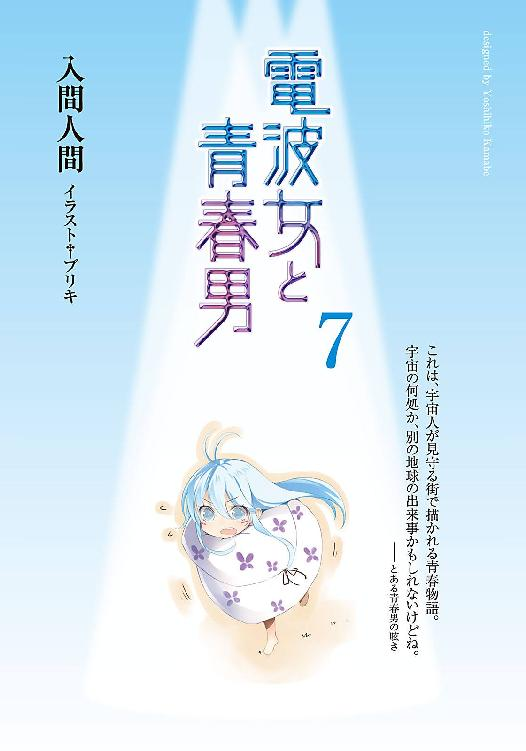
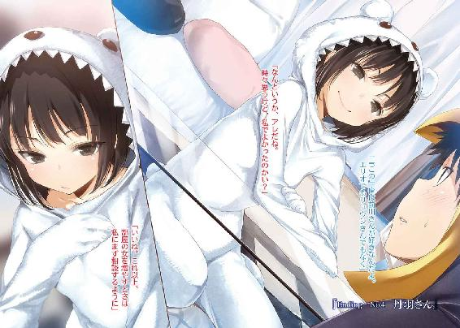
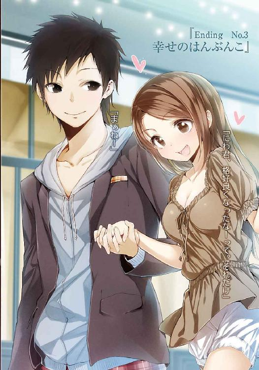
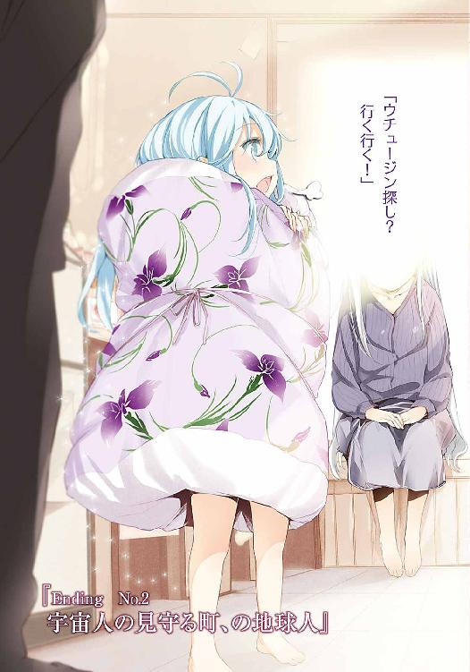
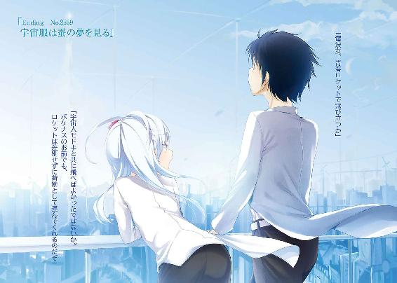
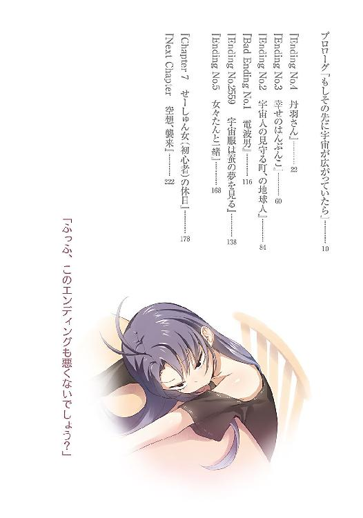
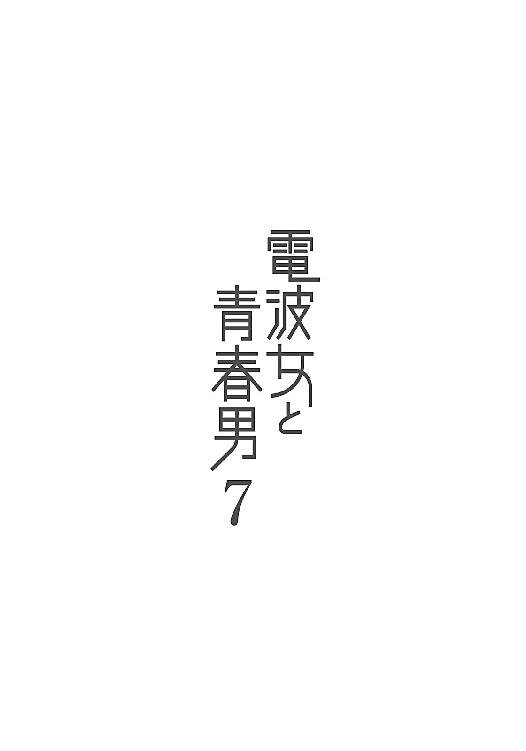
本書（電子版）に掲載されているコンテンツ（ソフトウェア／プログラム／データ／情報を含む）の著作権およびその他の権利は、すべて株式会社アスキー・メディアワークスおよび正当な権利を有する第三者に帰属しています。
法律の定めがある場合または権利者の明示的な承諾がある場合を除き、これらのコンテンツを複製・転載、改変・編集、翻案・翻訳、放送・出版、公衆送信（送信可能化を含む）・再配信、販売・頒布、貸与等に使用することはできません。
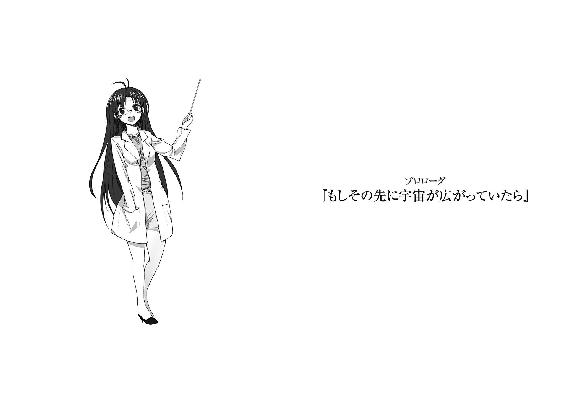
「ゲームもらった」
駄菓子屋の店番から帰ってきたエリオが開口一番、挨拶も抜きにそんなことを報告してくる。
玄関へ出迎えに来た俺は、目の前の従妹が無表情に掲げるそれを眺めて、「あぁ？」と声をあげる。日給が現物支給になったのか？ と首を捻ったけどそういうことではなさそうだ。
「貰ったって、誰からだよ」
まぁそれと足を拭け、と布巾を渡す。相も変わらず裸足で外へ出かけてしまう癖の抜けないエリオは渡された布巾を摘んで、取り敢えず持っていますという態度のまま会話を続ける。
「知らない人」
「知らない人から物を貰うんじゃありません」
メッ、とエリオの頬を摘んで引っ張る。「むぃー」渡した布巾で俺の腕をパタパタと叩き、抗議してくる。いやそれより足を拭けというのに。いい加減、靴を履く習慣を身につけさせよう。
などという休日、土曜日の夕方。九月の文化祭から三週間ほど経過した、十月半ば。
もうすぐこんばんは、丹羽真です。ちょっとした事情で青春ポイントを使い切ってしまったので最近、干からびそうです。貯えを取り戻そうと心がけているのですが、これがなかなか。
「本当に見覚えない人だったのか？ つーか、駄菓子屋で渡されたのか？」
「ん、ん」
エリオが二度頷く。ついでに足を拭かずに廊下へ上がろうとしたので肩を押し返す。
「めめによろしくって、変な格好のオッサンが渡してきた」
「めめ、女々さんか。オッサンと女々さん......ああ、山本さんかな」
女々さんに惚れているあのオッサンを思い出す。変な格好か、はそもそも顔自体、記憶が曖昧だ。将を射んとすればの理屈で、まず娘から籠絡にかかったのか？ 娘本人にはまるで覚えられていないみたいだが。そもそも母親の方も、オッサンの本名を覚えていないようだし。不遇だなぁ、と同情するついでにエリオを押す。む、とエリオが唇を尖らせる。
「イトコがわたしを亡き者にしようとしている」
「俺はそこまで過激派じゃない。単に足を拭けと言ってるだけやっちゅーに」
大体、なぜこいつは裸足で外へ出かけるんだ。見た目は野生児というより宇宙児なのに。ちなみに母親の方は四十歳児である。外見が日に日に若返っていく妖怪だが、四十歳である。
努々、そこを忘れてはならない。尚その妖怪は今日、まだ仕事から帰ってきていない。
まぁ俺、あの人の仕事ってなにか未だに知らないのだが。
「おー」
エリオがぽむ、と手のひらを拳骨で叩く。そしてさも名案とばかりに提案してくる。
「イトコがわたしの足を拭けば解決」
「王様かお前は。却下」
「うー」
不承不承、といった様子に座りこんで足の裏を拭き出す。三和土に普通に座るのも注意するべきかと考えたけど、そこまで世話を焼いてどうすると考え直して、エリオを待った。
「キレイキレイ」
「はいはい」
拭き終えた足の裏を見せつけてくるエリオを適当にあしらって、自分の部屋へ戻ることにした。読みかけの文庫本をベッドに放置してきたので、その続きを求めていざ、と廊下を進む。
と、階段に足をかけたあたりで背中を服と肉、一緒に引っ張られた。振り返る。
「なにをする」
エリオが貰ったというゲームのパッケージを掲げている。
「イトコもゲームする？」
「するって、それ二人用か？」
エリオが首を傾げる。手に取って裏面を確かめた感じ、ＲＰＧみたいだが。まぁいいか。
「付き合ってやろう」
などとふんぞり返ってみる。「ん」とエリオは頷いて、居間の方へすてててと走っていってしまう。俺の態度に一言の言及もなく。偉そうとか突っこんでくれないと、ふんぞり返った甲斐がなくて虚しいのだが。廊下で一人、腰に手を当てて背を反らす意味を失い、頬を掻いた。
「あいつが突っこみ役に向いてないのは分かるけどさ」
前川さんぐらいかな、俺たちの中でその立場を担えるのは。リュウシさんは天然だし。そしてあの人の突っこみは『やっちゅーに』一択であると容易に想像できる。
エリオに続いて居間に入る。すってってと走り回って楽しげにゲーム機を用意するエリオを眺めていると、うんまぁその悪くないよねごにょごにょ、であった。詳しくは割愛。
最後にエリオは、二階から持ってきた布団に着手した。そこでようやく介入する。
「なぜ布団を巻く」
どんな儀式だ。俺たち→ゲーム機→テレビの繋がりのどこにスマキンがいる。
「もふ？」
「いや今、顔は布団の外に出てるだろ」
人の疑問など大して気に留めず、布団を身体に巻いたままコントローラーを握るエリオ。
なんだかなぁ。
先月、せーしゅん女になったはずなのに。布団を巻くとか、足を拭くのを嫌がるとか。
ほとんど変わってないじゃないか。いや劇的に変わってなにもかもしっかり自立して、急に手がかからなくなると寂しいというか......いやいや、それだと完全に父親じゃないか。
いかんいかん、と首を振っている間にテレビ画面に、次々と企業ロゴが映る。それを飛ばす為か、エリオがボタンをカタカタと連打する。俺はその隣にあぐらをかいて、膝に肘を突く。
「説明書は読んだのか？」
「店番してる暇なときに熟読」
「ワルめ」
冗談めかして頭を小突くと、エリオは珍しくにへーっと相好を崩した。
ゲームかぁ。昔はそれなりに遊んでいたけど、こっちに来てからはほとんど手をつけてないな。ゲームにのめりこんでいると、時々、変なこと考えすぎて頭が痛くなるし。
エリオは電卓でも叩くように、人差し指でボタンを押す。変わったやつだな、見た目こみで。
ニューゲームで開始すると、最初に主人公の名前設定の画面が出てきた。デフォルトの名前は存在しないようで、空白になっている。エリオはなぜか俺の顔をじぃっと見据えてきた。
「なんじゃい」
「ん」
噛み合わない反応だ。エリオがペチペチと、人差し指でボタンを叩く。
「にわまこと、と」
「いや自分の名前を使えばいいだろ」
しかも漢字のチョイスが庭誠だった。誰だそれは。確認も取らずにいい加減な。
「あだ名はマコ君」
「待てぃ」
イトコ、転校生、にわち。まーちゃん、は拠所なき事情に基づき不採用として。
数あるあだ名の中から、なぜそれを採用する。周りの人にマコ君さんとか呼ばれるぞ。えんま様々みたいでなんか嫌だ。そんな俺の異議になど構わず、ゲームが開始されてしまう。
「てけてけてけてけてててー、てーててててー、てーて」
「ＢＧＭを真似なくていいから」
癖なのかそのまま止めずに、エリオが画面中央の主人公を操作し始める。藤和家のゲーム機は一世代古い。当然、ゲーム自体も古めかしい。といっても七、八年前程度ではあるけど。
テレビに映る、なぜか学生服の主人公も描写が粗い。テレビの所為かも知れないけど全体的に滲んで、背景がぼやけている。で、その主人公が自室の中で右往左往している。
「ぐりぐり」
アナログコントローラーをエリオがぐりぐり回して、主人公を弄んでいる。中央に敷かれた布団の上で、現実で行えば確実に酔いそうなほど高速で回転する主人公（庭誠）はシュールすぎた。こんなマコ君は嫌だ。そもそもマコ君とか周りのみんなに呼ばれるのも嫌だ。
左右に回るより、その場で反転する速度の方が速いという奇妙な男、マコ君がしばらく回り続けるのを眺めていたが、一向に終わらないのでプレーヤーたるエリオに注目する。
「部屋から出ればいいだろ」
「その前にタンス探して、壺を割る」
「極一般の現代人の私室に壺はあまりないぞ」
などと忠告した矢先に、部屋の隅に壺を発見した。もの凄く浮いている。王宮とかに置いてありそうな文様の壺が、畳の上にあるのはどう考えてもイカレている。なに考えてんだこれ。
「あったあった」
エリオが画面を指差しながら無邪気に勝ち誇る。「不思議だねぇ」と受け流した。
パッケージを開いて、中の説明書を開いてみる。どうでもいいけど山本さん、藤和家にこのゲーム機がなかったらどうするつもりだったんだろう。知っていたら、それはそれで怖い。
なになに、とゲームの概要に目を通す。ふむふむ、高校生の主人公がある日、謎の能力に目覚めて仲間と共に怪物と戦う？ 随分とありきたりな話だな。王道と言えばいいのか。で、次のページはキャラクター紹介。主人公はこの春からの転校生......ほぅ。親近感湧くね、マコ君。
仲間キャラクターは......「全身から光でも放ちそうなほどの美少女で、主人公の居候先に住む親類の子？」「ん？」エリオが顔を上げて、説明書を朗読した俺に向く。「いやいいから」
テレビ画面の方を向かせる。嫌な予感しかないがページを捲る。他の仲間は、長身で凛々しいけど少し虚弱体質な女の子と、普通で天然な女の子？ それと超能力を持った謎の少女とか。
「この取り揃えには明確な悪意を感じる！」
どうなっているんだ、地球！
唐突に叫んだ所為でエリオの肩がビクッと跳ね上がる。「......いや、気にするな」説明書の端を握りしめながらも、なんでもないと首を振る。エリオは「イトコがおかしい」と一言呟いて、ゲーム画面に向き直る。おかしいのは事実だが、一言口にすれば済む問題なのだろうか、それ。
あーなになに、と説明書の続きに目を落とす。仲間とは展開次第で恋人になれるかも知れなくて、しかもそれがエンディングに影響を及ぼす、かも？ はははいいねぇ、夢があって。
そのまま最後まで目を通す気になれなくて、閉じてパッケージに戻す。それからまた肘を突いて、微妙な気持ちを引きずってテレビに目をやる。四十歳の叔母とか出てこないだろうな。
エリオ操作のマコ君がやっと部屋から出て、学校へ登校する。俺、帰ってきたばかりなのに。
「.............................................」
時々、かな。ゲームに限った話じゃないけど、それこそ映画とか、テレビ番組とか。
画面の向こう側に映っているものがなにか、って考える。そりゃデータだ、とか撮影した映像だ、という話なんだけど。そもそも画面に『向こう』はない、ということも理解はしている。
だけど、俺は不思議を覚える。見たこともない世界が目の前に広がることを。俺からすれば、絶対に一生、旅行することもないような場所の景色が映し出されることと、絶対に手の届かないようなゲームの世界を、テレビを介して眺めることには大差がない。
どちらも別世界だ。別世界を、覗いているような気分になる。こういうのは俺だけだろうか。
これはテレビやゲーム機の仕組みを完全に理解していないから、そういう発想に行き着くのかも知れない。当たり前のようにリモコンで操作して日常的に使っているけれど、中身に未知を詰めこんだもの。こんな無知故の期待感が遥か遠く、知覚することの叶わない世界と自分を繋げているのでは、と俺を夢見がちにさせてしまう。昔から、妄想大好きではあったけどさ。
ゲームの主人公は転校生。似たような境遇、似たようなクラスメイト。それならこのテレビ画面に映るのはさしずめ、パラレルワールドだろうか。宇宙って途方もなく広いわけだし、もう絶対、俺たちが辿り着けないほど遠くにもう一つぐらい地球があって、そこではやっぱり俺やエリオたちがいて、似たような毎日を送っている......なんて、考えてゲームを中断したことが何度あったやら。深く考えすぎて頭痛を発症したこともあったなぁ、確か。いやー若かった。
今回は単に十分前の俺が並行世界モノの小説を読み耽っていたから、というのが理由ではあるが。
空想を打ち切って画面に目をやると、主人公が同級生の女の子に『マコ君君』と呼ばれていた。マコくんくんって。匂いでも嗅いでいるみたいだ。くんかくんか。誤字みたいだな。というか笑顔でマコ君君って呼ぶ女子生徒はどうなんだ。笑顔が別の意味で直視できない。
こんな別の可能性は嫌だなぁ。マコ君君はご勘弁願いたい。
どうせ空想奇譚ならもっと、夢がある方がいい。
そう、例えば。
本当に、もしもの可能性を追い求めていくとしたら。
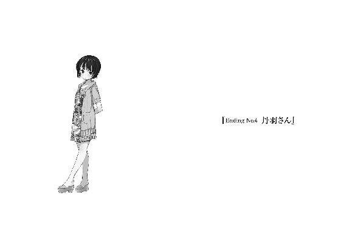
「真君」
「んー？」
「ふふふ、どうだい。すっかり名前を覚えてしまっただろう」
なんて得意げな前川さんの笑顔に、俺は魂の根っこを掴まれてしまう。いや未だに名字の方は間違えたりすることあるよね、と突っこむ為の口はだらしなく緩み、なにも出てこない。
背丈の印象からか、まるで年上の彼女と付き合っているみたいで照れ臭いやら、かわいらしいなぁと色惚けてしまうやら。忙しい俺の心情は様々な色で混濁し、増水した川のように乱れ、しかしそれが不快ではなかった。前向きな焦燥感というべきものに包まれて、むず痒い。
前川さんが背筋を伸ばして座っていると、昼休みの食堂の雑多な雰囲気の中に、一本の磨き抜かれた氷が置かれているようだった。今にも溶けそうな細長い氷で、眺めていると消えてしまわないかと不安になるけれど、その独特の冷たさが癖になるのも事実だ。
「やっぱりここの親子丼は甘いね。ああ、真君がこの味付けを好きなのは知っているよ」
先手を打たれる。ふと疑問に思い、持ち上げていたどんぶりを机に置いてから尋ねてみた。
「それなら、他のやつ注文すればよかったんじゃない？」
俺としては良い提案だと自負していたのだが、聞いてから一拍置いて「あのねぇ」と呆れたように息を吐き、それから前川さんが額を掻く。「あまり言いたくないな」と若干赤面しつつも、前川さんは俺の目を覆うように覗きこんで、ぼそぼそと唇を動かす。
「真君と同じものを食べよう、と思っただけだよ」
「.............................................ぐはっ」
口の中から親子丼以上の甘い汁を噴き出しそうになった。鼻の穴もやばかった。
「いや別に同じものを食べたからってなにかが起きるわけでもないんだけどね、うん。こういうのは科学的というか迷信めいたものを信じたい人の気持ちに似通っているのかな、ははは」
ぺらぺらと早口で、弁解めいた意見を付け足す前川さん。しかし言い訳どころか、かわいさを助長しているだけではないかっ。この罪作りが、と割り箸を握る手に力と熱が籠もる。
「将来的に前たんと家庭を持つ確率が八割から九割に上昇した」
「な、なんだいそのバカップル的な報告は。ほら、イチャついてないでご飯を食べてしまおう」
などとイチャつきの片棒を担いでいる人にたしなめられて、ニヤニヤと気味悪く頬を緩めながら、親子丼の残りをかきこむ。外から入りこんでくる寒風なんか、まるで気にならない。
前川さんと付き合い始めてから、もう二ヶ月以上が経つ。
文化祭のときに告白したことが夢みたいに思えてくる。良い返事を貰えたこと含めて。
そして現在、二年生の十二月。転校してきてそろそろ年が変わろうとしているわけで、転校生と呼ばれるのも苦しくなってきたなぁという矢先に、前川さんと付き合うことになったのは幸運だった。なにしろ俺を転校生と呼ぶのは前川さんだけで、その前川さんが彼女になると呼び方を変えてきたわけで。丹羽君をすっ飛ばして真君となってしまった。いや気恥ずかしい。
ちなみに最初に呼ばれたときは、その場で五回ほど復唱していただいた。勿論、五回ほど悶え死にかけたのは語るまでもない。前川さんは俺にとっての劇薬となりつつあった。
「前川さんって制服、冬服の方が似合っているよね」
「そうかな？」
袖を引っ張り、見て確かめながらも前川さんが首を傾げる。
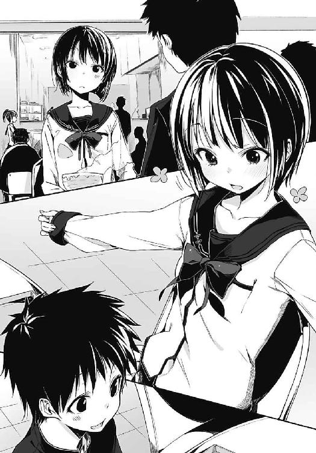
「一番大きいのでもサイズが合わなくて、袖丈が足りないんだけどね」
「いやいや、その制服コスはマジ賞賛に値する」
「コスじゃねーよ......って前もこんなやり取りあった気がするよ」
確かに。顔を見合わせて、双方、思い出し笑いを浮かべる。それから本当に時間がおしてきたので、話を控えめにして箸を動かした。食べ進めると、親子丼の甘さが癖になる。前川さんの方は舌が甘ったるくなっているのか、水を飲む回数が増えている。今度から、親子丼は止めて他のものを食べようかな、なんて考えてしまうあたり、俺の毎日は相当に幸福なのだろう。
「......今日は食べすぎた」
どんぶりの中身を空にしてから、前川さんが悔いるようにぼやく。
「いつもそう言ってない？」
「じゃあいつも腹十二分目なんだよ。困ったな、太ってしまう」
などと言いつつ、肉のまるでついていない脇腹を若干無理して引っ張る。世の減量に苦しむ女性に喧嘩を売っているのでしょうか、前川さん。むしろもう少し肉をつけた方がいいのでは。
「いや私はね、油断するとすぐ太りそうなんだ。なにしろ筋肉がないからね。ふっふ、見たまえ、この二の腕を。一部ではゴムゴムの実を食べたんですか？ なんて言われるこの細さだよ」
冬服の袖を捲って、自慢げに細腕を見せつけてくる。二の腕から手首まで、太さがほぼ均一である。その所為か異様に長いと錯覚してしまう。それより青白い肌を舐めたい。いやいや、なにさらりと欲望が顔を覗かせているのだ。前川さんとはまだキス止まりなのに。
「二の腕触っていい？」
「きゅ、急になんだい。いいけど」
席を立ってテーブルを回りこみ、前川さんの差し出す二の腕を揉む。触るどころか揉みしだく。筋肉はないというけれど、故の柔らかさだろうか。ひんやりと冷たくて、冬とは異なる心地よい涼やかさだ。前川さんの耳たぶに触り心地が似ている。ふにふにである。
「こら、あの、なにを鼻息荒く腕を揉んでいるんだい。み、みんな見ているよ」
みんなってどこの人たちだ？ ああ、食堂の雑多な雰囲気を作る、他の席に座る連中か。男子数人で固まって座っているやつらが、俺と前川さんの方に視線をくれている。なるほど。
「見せつけているのさ。むしろ大声で二の腕の魅力を訴えたいぐらいさ」
「爽やかな顔してなに宣言をしているか！ はいお終い、二の腕終了！」
強引に腕を引っこ抜き、袖を下ろして隠してしまった。ちぇー、と舌打ちしながらも昼休みの終わりが迫っていたので、どんぶりその他をセルフサービスで片づける。回収棚にトレイを置くと、前川さんが自分のどんぶりと箸を俺の分と纏めて、テキパキと片づけやすく配置する。こういうところはしっかり者で、さすがだなと感心するところだ。俺の未来の嫁だけある。
「最近の真君はどうも、変態さが増している気がしてならないね。予防しておかないと」
「いやね、バカップルの師匠が同学年にいてさ。教えを請うていると自然、こうなるわけ。昔はあの人たちに石を投げたくなっていたけど、酷い誤解だよね。彼らはいい人だー」
「......なるほど、大体理解したよ。今度、厳重注意しておこう。うちの彼氏を洗脳するなと」
頭痛いわー、とばかりに額に指を当て、はーっと前川さんが溜息。洗脳て、そんな大げさな。
ちょっとばかり、バカップルに理解を示しただけじゃないか。
「いいかい、真君。きみが変態になると私も釣り合いの取れた変態にならないといけなくなる。しかしそれは後戻りのできない行為なので、自重しなければいけない。分かったね？」
「うんまー」
「スーパーいい加減な返事をありがとう」
頬をつねられた。本気じゃない、戯れの力加減なので、そのまま一緒に歩く。
食堂を出て寒風に身をすくめていると、手を離した前川さんが咳払い混じりに話しかけてくる。ごほごほ、と風邪でも引いたのかと少し心配になる。耳と鼻の上が妙に赤いし。
「ところで真君」
「はい？」
「求婚の確率はなにを足せば、残り一割を補えるんだい？」
「ぶふぇ」
鼻水的なものが飛び出した。仲良く風邪を引いたらしく、共に赤面。
バカップルってほんと、いいものですね。
食堂から教室に戻ると、すぐ授業が始まった。名残惜しいけれど前川さんと入り口で別れて、それぞれの席に着く。日本史の教科書とノートを慌てて取り出している最中、一瞬、視線を感じて顔を上げる。すぐに顔を背けられてしまったのか、単なる気のせいだったのか。視線を感じた先に座るリュウシさんは黒板の方を向き、シャープペンを指先で回していた。
「......自意識過剰？」
当然のことではあるのだけど、リュウシさんとは疎遠になった。放課後に一緒に寄り道したり、休日に会ったりといった接触は激減した、というかここ数ヶ月、記憶にない。
仕方のないことではあっても、少し寂しい。それにいつか慣れてしまうことも、それを仕方ないと割り切ってしまうことも。人間の適応力は時に、残酷なまでに前向きさを発揮する。
関係が変わったのはリュウシさんだけでなく、藤和家にも及んでいる。俺とエリオはどこか距離が開き、『イトコー』と無邪気に追いかけてくるあの姿を見ることは叶わなくなっていた。女々さんは、変わらないか。そもそもあの人を考慮に入れる方が間違っている気もするが。
そんな風に俺は、自分がこの町に来て築き上げてきたものをほとんどぶち壊してしまった。
だが俺はこの今を自分の意志で選択して、周囲の環境を激変させることを望んだのだ。寂寥を覚えることは結構だが、後悔だけはしてはならない。それを肝に銘じながら日本史の教科書を開いて、最後についでとばかりに前川さんの方を向いた。前川さんは俺を見ていなかった。
残念である。恋人同士であっても完全な以心伝心はやはり、難しい。
「この後どうする？ どこか寄っていくかい？」
放課後になるとすぐ、前川さんが近寄ってきた。荷物も纏め終わっているのか、既に学生鞄を持っている。俺の方はまだ、机の中身も出していないのに。どうしようかな、と思案。
尚、こちらは考えるまでもないが、放課後の時間は前川さんと過ごすわけである。
「なにか買いたいものとかある？ 見たいものでもいいけど」
「いや、買い物は当分いいよ。なにしろ......あ、そうだ。真君、きみは速さに興味あるかな？」
「はぁ？」
唐突になんの話だ？ 見ると前川さんは目を瞑り、ふふんと鼻を高くしている。どうやらなにか誇らしげな様子。しかし内容が掴めず困惑していると、前川さんが胸もとを指差す。
「今日の放課後はきみに、自転車の次の世界を見せてあげよう」
「はい？」
「まぁついておいで。あ、でも制服は着替えておいた方がいいね。よし、一時間後に私の家の前に集合でどうだい？ 居酒屋の方じゃなくて、実家の方だよ」
「いいけど、そんなにはしゃぐお楽しみがあるの？」
前川さんが無言で唇を緩めて焦らす。一時間後まで秘密にしておくつもりらしい。なんだろうなぁと考えつつ、鞄に荷物を纏めた。なにはともあれ、と立ち上がって手を出し出す。
「まずは下駄箱まで一緒に帰ろうよ」
「......んむ」
前川さんがおずおずと手を握ったのを見届けて、二人で教室を出た。左右を見渡さないようにして。取り分けリュウシさんが視界に入らないように。そう振る舞う俺は、卑怯だろうか。
なにかを得れば、なにかを失う。
なにもかも自分の側に飾ろうとしないだけ、潔いと思うのだけれど。
私服に着替えておいでよ、と忠告されたので藤和家に帰ってから、制服を脱ぎ散らかす。女々さんは仕事で、エリオは田村商店で店番なので、室内は物音一つしない。廊下や階段は日差しも当たらない所為で冷えこみ、玄関から早々に服を脱いだことを後悔する。何故歩きながら脱衣ショーやっているのだろう、俺は。一時間後なら急がなくても十分間に合うのにな、と正論を吐きながらも早歩き。脱いだ制服を拾い、二階の自室へ飛びこむ。当然、部屋も寒いけど。
室内は朝方、出かけたときから代わり映えがない。窓から入りこむ光が朝のものから、昼過ぎへ質を変えたぐらいで、物の動いた形跡はない。起きてから整えた俺の布団は綺麗なままで、誰かが自分に巻きつけようとか、そういった行為に巻きこまれることは一切、なくなっていた。自分の匂いしかしない布団。そういえば女々さんも、夜にちょっかいを出しにくることは少なくなった。藤和の家の足並みに、俺が揃わなくなっている。異物になりつつある。
私服に着替えて手袋をはめてから、三分ぐらいベッドの上で座って時間まで待とうと試みて、待ちきれずに部屋を出た。別に前川さんの家で待てばいいじゃないか、多分。お義父さん、もとい前川父にさえ遭遇しなければ問題ないだろう。出会うと開口する前に歯ぎしりされるのが通例になってきていて、どう対応していいか毎回迷う。そして結局、へらへら笑うのだ。
玄関で自分の靴を履き直していると、ふと気づく。エリオ用に用意されて、でも出番が毎日なかった白い靴がなくなっている。棚の下や、中を覗いてみるけれど片づけられた形跡はない。
「履いていったのか」
その事実を呑みこんで、不思議と耳鳴りが増す。
いつの間にかエリオが靴を履くようになっていた。自分の意志で、履いていったのだろう。
俺も変わる、エリオも変わる。互いの与り知らないところで。俺は『イトコ』でなく『従兄』となり、エリオもまた、接点を失って藤和エリオとなっていく。それもまた、変化の一つで。
培ってきた関係を失っていくことに喪失感を覚えないと言えば、嘘になる。
けれど以前の俺と致命的に、価値観が違ってきてしまっているのも事実だ。
円に理想を見出す人もいれば、三角形に完全な美を感じる人もいる。
そして今の俺は長方形に愛を覚えるのだから、振り返らない。
青春ポイントをブッチギリで超越した丹羽真が、外へ参りますと。
「ガォーン、ギュイーン」
「どぅるどぅるどぅる」
「夢のないリアルな効果音は止めて欲しいな」
前川さんが唇を尖らせる。すらりと背筋を伸ばしたその背中にしがみついていると、普段の頼りなさを帳消しにする貫禄を感じてしまう。しかし一方で、強く抱きついていたら背骨が折れて二人とも倒れてしまうのではないか、と危惧する一面も持ち合わせているあたり、ああ、やっぱり前川さんだなぁと安心するのであった。カーブに差しかかり自然、胴に回している腕に一層、力をこめる。前川さんはその力の入れ具合がおかしいのか、ニヤニヤと相好を崩す。
「真君に頼られるのも気持ちいいねぇ」
「前川さんに頼るのも新鮮だよ、っと」
左にカーブして、橋の方面へ出る。河川敷を一望できる橋を、原チャリでぶいぶい走る。
マエえもんの出した次なる便利アイテム、それは原動機付き自転車。
自転車の次の世界とは、原チャリの二人乗りだった。頬を削る風の冷たさに鼻水を啜り、乗っている分には自転車と大差ない加速の原チャリ初試乗に、胸を高鳴らせる。
今までのバイト代で原チャリを購入した前川さんが、いつの間にか免許を取得していたらしい。そして俺は細すぎる腰にしがみついて、二人乗りの真っ最中というわけである。勿論、原チャリの二人乗りはいけません。そもそも自転車の籠に人を乗せているのもいいはずないが。
「さすがに平日の冬とあっては、誰も運動していないか」
河川敷に広がるグラウンドを見下ろして、前川さんが言う。ラグビー用のポールが二本、Ｈの形を描くように立てられているグラウンドには季節の為か、ミミズを求めて土の上を歩き回るカラスの姿もない。雑草を刈り取ったことでどこか痛々しく地面を露出させて、寒々しい土地といった風情を醸している。下りて一人、ぽつんと中心に立てば一層、感じられるだろう。
橋の下を流れる川も水量が少なくて、底に流れる藻が水面の色として反映されている。
「本当はもっと暖かくなってから、乗るべきなんだろうね」
橋を下りてから信号待ちで停車して、振り返った前川さんが苦笑する。ヘルメットを申し訳程度に被って、目の下と口の横を赤くしている前川さんから、白い吐息が漏れる。時刻はまだ午後四時過ぎなのに太陽の光は薄くなり、今にも地平線の彼方へ沈んでいきそうだった。
「でも自慢したかったと」
「その通り。通学にも使えないから、お披露目する機会がちっともない」
不満げに目を細めて、前方を睨む。信号が青に変わって、再び走り出した。
「そういえば転校生、じゃなくて真君」
「なに前たん的な前川さん」
「どういう的なのさ、それ......あぁっと、寒くないかい？」
「前川さんに抱きついてるからほっくほくだけど」
原チャリが一瞬、蛇行運転となった。手を滑らせかけた前川さんが軽く肘打ちしてくる。
「寒い、寒くないの単純に答えればいいのに。誰が熱源についてまで話せと」
「前川さんを恥ずかしがらせたくて」
その姿が堪らなくかわいいのだ。そんなの力説するまでもない常識だろう。
「......正直で結構。たまには真君も恥じ入るように」
「キスとかするときはまだ恥ずかしいよ」
「とかって、ほ、他になにもまだしてないじゃないか。......っもう」
調子狂うね、真君と喋っていると。どことなく嬉しそうに、前川さんがぼやく。
原チャリは真っ直ぐ進み続けて、駅の裏側の方へと出る。もうずっと昔に思えるけれど、エリオとバイトの面接に向かったときに訪れた場所に近い。そんなこともあったよなぁ、なんて遠い目になってしまうような記憶。身近じゃない思い出。肌寒くなって、前川さんの背中で鼻を潰す。抱きついて、その細長い背中を間近で見つめて、遠くを見たがる目を無視した。
「いつか真君も免許を取って、少し遠くへ出かけてみない？」
「......んー」
「あ、乗り気じゃないなら無理にとは言わないよ」
「いやね、前川さんの背中に遠慮なく抱きつける機会がなくなるのは考えものかなぁと」
また原チャリの行方が左右不安定に陥る。とうとう路上の隅に一時停止して、前川さんが振り返る。冬風以外の要因で顔全体が熱っぽく色を変えている。艶っぽいなと見惚れてしまう。
「そ、そんなのはだね......こう、真君が頼めば、前向きに検討するさ」
「ほんとに？」
「マジさ。うん、マジマジ、いいともどんと来い」
「じゃあおっぱいもドンと来いで」
「調子に乗ってなにを言ってるか！」
非常に珍しく、前川さんが語気を荒げる。原チャリが再加速して、前川さんの勢いも普段の限界を超えて、どんどんと、前へ突き抜けていく。空を見上げて、普段の冷静な態度を返上し、前川さんが似つかわしくなく吠える。
「胸は！」
「お、おぉう？」
「胸は、もう少し大きくなってからしか触らせてやらん！」
前川さんの大胆な宣言に、周辺を俯きがちに歩いていた学生集団が顔を上げる。尻尾を踏まれた犬が飛び上がるような反応だった。一方の俺は前川さんの背中に額をくっつけて、鼻の先まで回っていく熱を感じながら、ああこの人が彼女でよかったなぁと謎の感動に包まれる。
お預けを食らったものの、そのかわいさに遭遇できるのなら仕方のないことではあった。
そして同時に、憐れむ。
前川さんと付き合うことのできない、他宇宙に存在する別の自分に憐憫を覚えた。
並行世界の自分まで気にかける余裕を与えてくれる前川さんは、やっぱり最高である。
通学路とは異なる道を適当に回り、途中に寄ったコンビニで中華まんを食べてから前川家へと戻った。頬はぱりぱりに乾いて鼻の奥まで冷えきっていたけど、楽しかったので帳消し。
こういうのが、いわゆるツーリングデートというやつだろうか。もう終わってしまったが。
「その、なんだね。部屋に寄っていく？」
原チャリをガレージの屋根の下にしまいながら、前川さんが遠慮気味に二階を指差す。大変魅力的な提案で、もし『屋根づたいに部屋まで来い』と要求されても挑戦しそうな気概だけど。
一つ、懸念すべきことがあった。
「ご両親は？」ていうか、お義父さんは？
「この時間は店の仕込み」
あっさりと懸念解消。寄るに決まっていた。
「前は私も手伝いに駆り出されていたんだけど、最近は母親の方に気を遣われているみたいでね。私に彼氏ができたことがそんなに珍しいかな」
「あれ、珍しくないの？」
突如浮上した前川さんやり手説。前川さんは頬を膨らませて、拗ねるように答える。
「珍しいもいいところさ。どうも、男子は自分より背の高い女が苦手らしい」
「あー、そういうところは結構あるね」
「真君もかい？」
「背が高いからこその前川さんじゃないか」
というより小さい前川さんなど想像つかない。出会った当初から見上げていたし、今後も追い抜くことは不可能だろう。だがそれがいい。背の高い虚弱な前たんがいいのだ。
「そう言ってくれると、悪い気はしない、ね。うん」
にやついていた。悪い気どころか、ご満悦のようである。
「この背丈のお陰でまともな男女交際は、えぇと、今が初めてってところかな」
「地球人って本当に見る目がないよな。前川さんはこんなにかわいいのにね」
こーんなに、と両手を広げて表現してみる。ごふ、と前川さんが目を白黒させて噎せた。
「ま、まぁ真君に見る目があるなら、それで構わないじゃないか」
「前たんを嫁にする ２年 丹羽真 ぼくの将来の嫁は夢が現実になるわけで」
「謎の作文を読むな！」
じゃれあいながら前川宅にお邪魔する。これで何度目かは不覚にも数え忘れた。でも最初に訪れた日のことは覚えていた。今年の夏休み、まだ前川さんと付き合う前のことだったな。
靴を脱いで廊下に上がる。一応、玄関にご両親のものらしき靴が揃っていないか確かめたけれど不在のようだった。「ただいまー」と無人の家に挨拶して進んでいく前川さんに続く。廊下は寒々しかったが、「しかし前川さんの体温が俺の肌に残っていて、耐えることが出来たのだった」
語ってみる。謎の心情を口にするな、と怒鳴られるかと思ったけど、振り返った前川さんは頬を朱色に染めたまま、むーっと睨む。拗ねたような、全体に尖った表情である。
「洗脳が進行しすぎているね。これを治療するのは骨が折れるなぁ」
「えー、普通だよ？ 前たん暖かいよ？」
「バカップルまでは許す、しかし変態になるのは見逃せない」
なんだか前川さんが決意を滾らせていた。握り拳を作りえいえいおーと掲げて、数秒後に「うあー」と倒れそうになったので予定調和的に支えた。そのまま背中を支えた状態で、二人で階段を上がって二階の前川さんの部屋に向かう。なんか今日のは少しわざとらしかったような。
前川さんの私室はいつ来てもこざっぱりと片づけられて、読みかけの本を机に積んでいる俺とは雲泥の差だ。そのことについて以前賞賛したら、『真君が来るから片づけているんじゃないか』とさらりと返されて、大いに抱きしめた。セクハラで訴えられかけた。悔いなしと抱いた。
前川さんがリモコンを取り、暖房のスイッチを入れる。それから奥のコスプレ衣装が大量に収められたクローゼットを開き、「部屋が温まるまでこれを着ているといいよ」と何かしらの着ぐるみを投げてくる。見た目は青い。頭らしき部分を掴んで広げてみる。ペンギンだった。
「もふもふしてて暖かいから、さぁ騙されたと思って」
「......他の候補はなにかないんスか？」
「シロクマなら」
「......ペンギンでーす」
着た。前川さんの背丈に合わせたサイズの為か、頭の部分が余ってべろーんと後ろに垂れ下がっている。ペンギンの皮を被ったなにか、という状況が適切だ。ヒレも手が奥まで届かなくて、ペナペナとしている。ずるずると尻尾のように衣装の余りを引きずって、部屋を回る。
「かわいいぞ真君。部屋に飼っておきたいぐらいだ」
シロクマの着ぐるみを着こんで、口もとから顔を覗かせている前川さんに褒めたたえられる。こちらは百八十センチのシロクマ姿が見事に決まっており、大変に、怖い。口もとを閉じてしまうとリアルクマ状態である。「がおー」両手を上げて、ペンギンモドキを威嚇してきた。
クマってそんな鳴き声であってるのか？ ワニの着ぐるみのときも疑問を持ったけど。
「がぁー」
クマの口の奥で、前川さんが目を回し始める。クマの目まで一緒に回るようだった。
こんなクマなら俺も藤和家に持ちこみたい。
前川さんが用意した黄色いクッションに腰かける。確かにペンギンの着ぐるみは暖かく、少しずつ効いてくる暖房の熱気と混ざることで夏のように暑さを増してくる。汗を背中に感じた。
対面するシロクマさんが顎に手を当て、俺をジロジロと眺め回してくる。シロクマさんとペンギンくんが向き合っていると、ほのぼの動物村の住人にでもなったような気がして、笑える。
「初心者にしては予想以上に着こなしているじゃないか」
「だるんだるんなんですけど」
手を上げると、ヒレの先端が自然とお辞儀をしてしまう。そういえばペンギンは鳥類だし、ヒレじゃなくて羽か。どっちにしても全体的に中身が足りていない。そして暑い。
「今度一緒に、コスプレで町を回ってみないかい？ 見慣れた場所が新鮮に見える、かも」
「俺たちが奇特な目で見られるだけでは」
「まーいいじゃないか」
はっはっは、とさりげなく承諾させられている流れになった。いいのか、と思ったが前川さんのシロクマ姿が相当にかわいいので、世間に自慢したい気持ちもある。ので、いいのだ。
「うー、暑い暑い。暖房なんかいらないね」
前川さんが暖房の電源を切る。本末転倒になっていないだろうか、この着ぐるみ。
「お茶はいる？」
「んーいい。それでー、なんか話す？ ゲームする？」
バタバタと羽を振って、なにしようと相談を持ちかける。「そうだな」と前川さんが目を泳がせて、思案する。俺はそれの結論が出るのを待って、ベッドの方を横目で見る。......しまった、布団をお借りしてスマキンコスプレを選べば良かったのか。そうすれば天国だったはず。
だって前川さんが毎日使っているような布団でぬくぬくと暖まれるんだぞ。
こんな身近にあった楽園への選択肢を、俺はいともたやすく見逃してしまったのだ。
それでもこんなに幸せになれるのだから、前川さんは偉大だなぁといつもの答えに辿り着く。
「真君」
「ん？」
名残惜しくベッドから目を離し、前川さんに向き合う。ジーッと、ジト目で睨まれていた。
「な、なにごとで？」
「......きみは、藤和と間違いを起こしてないだろうね」
「間違いって、エリオと？ なんの？」
まさかまた、宇宙人であると自称するとか？「違う違う」と前川さんが首を振り、
「それならリュウシと浮気は？」
「最近、ほとんど話してないよ。なかなかどうして、上手くいかないものだよな」
しんみり。前川さん、というかシロクマさんが「うがー」と苦悩する素振りを交えて、
「にいづまに食べられている件について話して貰おうじゃないか」
「いねーよ新妻が！」
つーか新妻候補はオメーだ！ とまでは叫ばなかった。一体なんだ、この尋問は。
「真君は憎らしいほど理不尽にモテるからね、定期的にチェックしておかないと駄目なのさ」
シロクマさんに怒られた。えー俺、モテるのとか、そのチェックに叔母を入れるのはどういうわけだとか、疑問は尽きないけれどまず真っ先に指摘しなければいけないことは、別にある。
「前川さんって案外、独占欲強い人？」
指摘すると、いやいやと慌てたように前川さんが首を振る。
「これくらいは彼女なら当然の確認じゃないか」
「そう？」
そうだ、と強く頷かれる。そうか、と俺も釣られて納得してしまった。シロクマさんに「良い子だ」と頭を撫でられる。なんだか著しく間違っているやり取りな気もするが、まぁよし。
頭を撫で終えてから、前川さんがクマの口の奥にある自分の鼻を指で掻く。むず痒そうに。
「でも例えば、あぁ、その......真君も高校生だし、あの、夏休みに本屋で買ったような本を、使う夜もあるわけじゃないか」
「バレてたー！」
「そりゃ、うん、いつも見ていたからね。そこは大した問題じゃない」
「いや俺にとってはかーなーり、問題なのですが」
「閑話休題」
勝手に流された。クマ川さんが正座する。クマに正座されると、なんだか萎縮してしまう。
「で、真君も仕方ないとはいえ、私以外の女性の裸を想像したり、こう......にょごにょなアレなのはなんだか、いけ好かない気もするなぁと枕を噛む次第がなきにしもあらずなのだよ、分かるか真君！」
「......ふむ」
鼻の奥まで真っ赤に染まっていそうな前川さんの言い分を受けて、考えこむ。なるほど、女性としてそれは嫉妬の対象なのかも知れない。訴える以上、相手の気持ちを尊重しなければ。
「仕方ない、では前川さんの写真をいっぱい撮って、顔だけ裸婦画に貼りつけるか」
スパーンと、シロクマに頭をぶっ叩かれた。
「誰がお手製のアイコラを作れと言ったんだい」
他の解決法をご所望か。うぅむ、それならば答えは一つ。ぽむ、と両手の羽を合わせる。
「よし。じゃあ今からエロ本選びに行こう。今度は俺の部屋へ招待しようじゃないか」
夏休みに苦戦しながらも一冊買って以来、家人や友人の目をごまかしながら数冊だけ追加購入していたのだ！ その度に緊張と遭遇、そして物語があったのだがそこらへんは割愛。
「はぁ？ ......は、はぁぁ？」
二度にわたって驚愕していただけた。前川さんの細い手を取る。触り心地は、分からん。
だって俺の手は羽で、前川さんの手はクマなのだから。
「前川さん公認の一品だけを側に置いておくことにするよ！」
「爽やかに歯を光らせて本当にアホなことを言っている！」
「いーからいーから、さぁツーリングデート第二部開始だ！」
勇気凛々、とばかりに希望を輝かせて駆ける。格好そのままに、ダバダバ。
「ちょーっとまーてー！」と叫ぶ前川さんを拉致して、寒空の下へ飛び出した。
ペンギンとシロクマが夕暮れの中、原チャリにまたがる姿はやはりほのぼの動物村の一場面に思えてならなかった。いっそのこと、人類が途中で一回ぐらい滅びていそうな八十万年後の未来あたりまでいけば、或いはこんな光景もあり得るのかね。
「というか、どうしてエロ本選びに行かないといけないのだろう......」
「ぶっちゃけ、前たんの恥ずかしがる様子を見たいだけです」
「苛めじゃないか、それ......」
ぶつぶつぼやきながら、シロクマが原チャリを発進させる。シロクマのふかふかした胴体に羽でしがみつきながら、ふと気になったことを質問してみた。なんとなく今なら許されそうだ。
「ねぇ前川さん」
「な、なんだい」
「なんであからさまに警戒してるの？」
「いや、今の真君はなんだかろくでもないことを口走りそうで......で、なにかな」
「前川さんもさ、夜のアレやコレやのときは相手に俺以外を想像したりするの？」
「今の私はシロクマだからちょっとそういうの分からない」
質問を予期していたように、動揺を表さないで回避してきた。やるな前川さん。
語気が少々荒くて、完全に無視しきれていないところが尚良し。
などと日本一幸せかつ下らない話題を繰り広げるシロクマとペンギンが藤和家の前に到着する。納屋の側に原チャリを停車させるついでに確かめると、まだ女々さんの自転車は帰っていないようだった。エリオはどうだろう。少し身構えて、二階のあいつの部屋に目を凝らす。
カーテンが閉じっぱなしなので、帰っていないようだ。あいつは自分の部屋にいるとき、窓の外が見えるようにとカーテンを開く。星との距離を縮めようとする行動なのかも知れない。
「では行くよ、ペンギンくん」
唾を呑みこんで、シロクマさんがどたどたと進み始める。俺は鍵を服のポケットから取り出して、着ぐるみの奥から外へと吐き出す。いやだって、口の部分しか空いてないから。
羽では鍵を上手く扱えないので、前川さんに託す。五本指が纏められているシロクマの着ぐるみも大して事情は変わらないはずだけど、前川さんは容易に鍵を開けてしまう。器用だなぁ。
「着ぐるみ生活に慣れているだけさ」
「でも前川さんだと着ぐるみショーのバイトは難しいね」
暑さですぐ参ってしまうだろうから。派手なアクションも不可能だろうし。前川さんは肩を竦めて、そもそも靴など履いていないのでそのまま廊下に上がる。俺は前川家から回収していた自分の靴を定位置に並べておいてから、二階へ上がる。音も熱もない空間の中で首を振り、やはり誰もいないことを実感した。たとえいたとしても、強く関われないのだろうけど。
「真君の部屋に行くのは久しぶりか。なんだか、遠慮してしまうよ」
「遠慮って？」
「この家には藤和がいるから、かな」
「......どゆこと？」
とぼけると、「おとぼけはなしさ」と鼻で笑われる。鋭い人だよな、本当。敵わないぜ、とペンギンの垂れ下がった頭の皮を引っ張り、俯きがちに階段を上る。見下ろして、腹が真っ白な自分の格好を改めて笑う。これが、俺の選択した道か。まさかその果てが、ペンギンとはね。
「藤和、はいないんだね」
二階のエリオの部屋を覗いて、前川さんがホッとしたように呟く。俺も似た心境だったからか、「だね」と素直に頷いて、奥の自室へ急いだ。エロ本選びに彼女と急ぐ。なんかドキドキ。
「おー、真君の部屋かー。おー」
「無理に感心してくれなくても......って、このやり取りもなんか記憶にあるぞ」
前川さんがぐるぐる、部屋を回る。シロクマがある日、部屋の中に現れたらこういった反応を示して居座るのだろうか。怖すぎる。前川さんが電灯の下にどっかりと座りこみ、腕を組む。
「......で、では、例のものの審査会を始める。さぁ、出して、みようじゃないか」
「ははっ」
既にエロ本所有の件がバレてしまっているなら、吹っ切れた。むしろこの状況を楽しもう、と嬉々として、隠していた書物をすべて、前川さんの眼前へ差し出す。前川さんのシロクマに似つかわしくない赤面が一層強まり、取り分け目の周辺が充血したように赤々と染まっていく。
俺はエロ本で壁でも造るように、前川さんの周辺を包囲する。といっても手持ちは三冊しかないのだが。交際費がなかなか景気良いものでねぇ。そんな控えめな俺に対しても容赦なく、前川さんが睨む。クマの険しい表情と相まって、少し身震いした。
「いつの間にこんなに、部屋に女を囲っていたんだい」
「ペンギンだからちょっとそういうの分からない」
「こら、それは私の持ちネタ！」
怒りながら、三冊のエロ本の表紙と睨めっこを始める前川さん。俺は「絵本とエロ本って一字付け足すか引くかの違いだけだよね」と話して怒りを買ったりしつつ、前川さんの判断が下されるのを待った。当然、エロ本と向き合う前川さんの表情を眺め続けて楽しむのも忘れない。
やがて、顔を上げた前川さんの眉間には大げさなシワが寄っていた。どうもなにか、お気に召さないようだ。俺のセンスか？ まさか胸の大きい女性を選んだことにお怒りとか、ぐわわ。
「やっぱ、全部没収したくなってきた」
一つずつ表紙を指し示し、前川さんが静かに膨れる。その反応はかわいいから構わない、が。
「そんな御無体な。......それじゃあマエえもーん、代わりに前川さんのエロイやつくれよー」
「そ、そんなものはない！」
「つーか前川さんをくれれば全て解決するよねっ」
羽の中で指をわきわき動かす。シロクマが「がーぎーいー」と威嚇して、ペンギンの接近を牽制してくる。シロクマの叫び方が前回と変わっているけれど、恐れるものか、と突撃しようとした矢先、起きた物音にびくりと肩を跳ね上げる。一階で、玄関の戸が開かれる音がした。
前川さんと、固まったまま顔を見合わせる。戸の閉じられる音、鍵をかける音。そして靴をいい加減に脱ぎ散らかす音。エリオだ。とんとん、と階段を上がってくる小さな足音。
その足音は以前のように俺の部屋を覗くこともなく、大人しく隣の部屋に収まってしまう。扉を閉じて、エアコンのスイッチを入れたのかファンの回る音が窓の外から聞こえてくる。
「......おかえりー」
小さな声で壁の向こうに呼びかけてみる。けれど、当たり前だけど挨拶はない。あいつ、エアコンなんかつけて。布団巻くのは、もう止めてしまったのだろうか。いつの間にか。
「藤和が帰ってきたのか。じゃあ、あまり騒がない方がいいね」
いやむしろ帰るか、みたいに言い出しそうな前川さんを見る。どこか気まずそうに笑い、声を潜めた前川さんが、目を伏せながら俺に問いかけてくる。
「なんというか、アレだね。時々思うけど、私でよかったのかい？」
「なにが？」
「いや、真君......転校生は、藤和も、リュウシも選ぼうと思えば出来そうだったのに、私で」
敢えて昔の呼び方を用いて、後悔の有無を探ってくる。そんな前川さんに、ペンギン怒る。
「ペンギンじゃなくても、ちょっとそういうの分からない」
羽を広げて、ずずいと迫る。シロクマを圧倒するペンギンの構図に、前川さんおののく。俺はシロクマの口を覗きこむようにして、その奥の困惑顔に向けて思いの丈を言い切る。
「『この』俺は前川さんが好きなんだよ。エリオでもリュウシさんでもなく」
言って後悔はなく、振り返りもない自分に、強い正しさを覚える。前川さんの反応含めて。
そう、俺はこの未来を選んだのだ。他のあらゆる可能性がどうあがいても、今の俺に干渉することはできない。俺の過去が、俺の気持ちが、この結末を選ぼうと働いたのだ。
他の人を好きになる自分が、宇宙のどこかにはいるのかも知れない。
しかしそいつは俺と、かんけーねーだろー。
別の気持ちを持つ時点で、その『丹羽真』は『俺』じゃないのだ。素粒子一つ一つが。
「ということなのだよ」
勢いに任せて演説する。言い切ってから恥の概念が、目と喉の奥を焼きつける。久しく忘れていた、俺の行動を司るもの。青春ポイントの息吹を、腹の底に感じる。
前川さんは鼻水をぐずっと啜ってから、シロクマの口の奥で無理矢理に微笑んだ。
「じぃん、ときたよ。シロクマ感動」
「ペンギンも自分に酔いそう」
ふっふっふ、と二人で照れ隠しに不敵そうに笑い合う。俺たちの体感温度は真夏のようだ。
「でも『この』ってことは、別の宇宙があるとするなら、私を好きじゃない真君もいるということかな。例えば、未だ誰ともくっつかず、藤和の世話を焼いている『転校生』が」
「今の俺からすればあり得ない気もするけど、多分」
「それはなんとも、面白くないな」
ふん、と腕を組んだまま鼻を鳴らす前川さん。その覗きづらい横顔を一瞥して、俺は彼女を抱きしめるか、それとも指摘するのが先かどちらにしようと思い悩み、まず言ってみた。
「やっぱり前川さん、嫉妬深くない？」
「っはは、かもね」
そして抱きしめた。ペンギンとシロクマの向こう側にいても、彼女の細さは健在だった。
結局、今回（あくまで今回と強調していた）エロ本の接収は諦めた前川さんを見送りに外へ出ると、日が沈んで深い夜が訪れようとしていた。遠くに追いやられた夕日は、引いていく波のようでもある。地続きでありながら対比的な色合いである夜空は黒に限りなく近い紫に染まり、星が砂浜の白い粒のように輝いていた。
「いいね。これ以上、部屋の女を増やすときは私にまず相談するように」
「はーい」
エロ本欲しいよ、マエえもんと相談すればいいわけだな。今からその反応が興味深い。
「......あ、そうだ。真君の自転車、私の家に置きっぱなしだ」
原チャリにまたがったシロクマさんこと、前川さんがしまったねと目を横に逸らす。
「明日の朝、学校行く前に回収に寄るよ。それで一緒に学校行こう」
「んー......じゃ、そうしようか。あ、ペンギンの着ぐるみはあげるから。愛用して欲しいな」
「......わーい」
力なく、重い羽を上げる。飛べないわー、これじゃあ。歩くのも億劫だぜ、このペンギン。
「真君、ちょっと」
手招きされる。ずるずると尻の皮を引きずって近づく。と、シロクマさんが俺の背中に手を回し、ぐいっと引き寄せてきた。そのままクマの顔が接近して、「うわっ」顔面を食われる。
シロクマに呑みこまれた奥に潜む前川さんの、真っ赤な顔が俺の唇に、キスを敢行してきた。
「.............................................」

シロクマとペンギンのキスは数秒続いた。シロクマが顔を離す。そして、ばくんとクマの口を上下から手で押さえて、自分の顔を隠してきた。そのままの状態で、ぼそぼそと喋ってくる。
「お別れの、キスというやつさ」
カーッと、身体のあれやこれやに血が集っていくのを如実に感じ取る。その血の滾りが俺に訴えかける。ペンギンの緩い着ぐるみの中、背伸びするアレやコレやの命じるまま、口を開く。
「足りない」
「は？」
「次はおやすみのキスで」
押さえていたシロクマの口を羽で、ばこんとこじ開けた。前川さんが目を回している。
「いやまだ日が沈んだばっかりじゃないか！」
「前借り前借り」
背伸びして前川さんの頭に手を回し、抱き寄せるようにして唇を触れ合わせる。前川さんは途中で諦めたのか、膝を折ってこちらの背伸びに気を遣ってくれる。俺ももう少し、背が伸びるといいんだけどな。でもその間に前川さんの背が一層、伸びてしまったらどうしようか。
「......ペンギンとクマのキスってシュールだね」
「愛に溢れていていいと思うよ」
私がなに言ってもそういうつもりだったろ、と見抜かれる。笑ってごまかした。
「前川さんさー......って、どしたの？」
目を細めて、見据えられる。その表情のまま、不満げに、俺の言葉をなぞる。
「前川さん、か」
「え、なに？ 前たんを推奨してる？」
無視された。前川さんが苦笑して、シロクマの頭を『やれやれ』とばかりに振る。
「その調子だと、真君は将来、私を丹羽さんと呼ぶことになるのかい？」
「はい？ 丹羽家に養子入り？」
違うだろ、と前川さんがすかさず突っこむ。その勢いをすぐに失って、クマ川さんもじもじ。
「さすがにその、婚約など交わしたら下の名前で呼ぶべきだと思う」
「式の日取りを決めないと」
「そうじゃない！ だから、下の名前をだね」
「いやだって、未だに知らないし」
知らん知らん、とペンギン羽を横に振る。ああ、そうかいと拍子抜けしたように前川さんがまばたきを繰り返し、「そっか」と合点がいったように顎を引く。クマの顔半分も揺れる。
「名乗ろうとしてもなぜか毎回、謎の力に阻まれるように失敗するんだった」
「ほんと、不思議なことにね」
前回は文化祭のときだったかな。二人で肩をすくめて、あたりを見渡す。俺たちを不審がる目つきはあっても、自己紹介の障害になるようなものは今度こそ見当たらない。将来、丹羽さんを生まない為に今ここで、前川さんの名前を明らかにしておくべきだろう。同時に頷く。
シロクマの上の顔を押し上げて、前川さんが口の奥からはっきりと現れる。そして俺を見下ろす視線はそのままに不敵に微笑み、少しかさついている唇の上下を動かす。
その唇が紡いだ、彼女の名前は。
「文化祭ではお預けになったけど、今度こそ名乗るよ」
「うん」
「私の名前はだね......」
「ぐへへ」
「イトコが涎垂らして笑ってる」
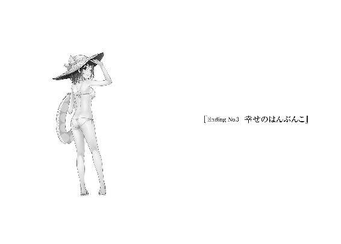
「にわくーん、待ったー」
「......ごめんなさい」
無垢な笑顔でぶんぶんと手を振る流子に肩を狭めて、苦笑気味に応える。流子の台詞だとまるで、俺が待ち合わせ場所に先にいて遅れてくる彼女と合流するようだけれど、実際は逆だ。
流子が先に駅構内の金時計の前に立ち、待ち合わせ時間丁度にやってきた俺に手を振っているのである。故に流子の台詞に疑問符がない。待ったー、という事実を報告してきているのだ。
天然さんなので悪意はないのだろうが、なかなかに冴えた嫌みである。遅刻はしてないんだけどなぁ、と思いつつ人混みをすり抜けて、金時計の真下に立つ流子の前まで走り切る。
「ごめんごめん、駅の乗り換えがまだ慣れなくてさ。ほら電車、あんまり使わないし」
「いんやー、いいだすいいだす」
相変わらず絶妙に緩い笑顔を浮かべて、柔らかい態度で空気を和らげてくる。金時計の周囲に漂う、待ち合わせの焦燥と殺伐に満ちた忙しない雰囲気の中でその心地よさは貴重だ。
「映画の時間、もうちょっと先かなぁ？」
ケンケンでもするように飛び跳ねて、流子が金時計を見上げる。針は短針が十一、長針が六と七の境を指していた。今日観に行く予定の映画は十二時十分からなので、確かに少し早い。
「でも映画館に行く時間もあるし、待っていればすぐだよ」
「そだね、じゃ、行こっか」
と、流子が当然のように右手を差し出してくる。にこーっと、高校の頃から変わらない笑顔で。俺はそれを強くなりすぎない程度に、けれどしっかりと握りしめて、金時計から歩き出す。
俺こと丹羽真と、御船流子は大学生となっていた。まだ入学して、一ヶ月しか経っていないけど大学生活には大分馴染んできた。高校と違いすぎて、戸惑う部分はあるけどさ。
流子とは去年、高校三年生の文化祭で告白して、付き合うことになった。自然な成り行きのような気もするし、勇気を振り絞った結果な気もする。その甲斐あって今日みたいな日曜日は、二人で映画館なんか行っちゃおうという話が自然に出るようになったのだ。
その高校を卒業してから俺は、あの町を離れて実家に戻った。実家には海外から帰ってきた両親がいて、独り暮らしの予定は暫くない。帰ってきた家族がなぜか今頃親バカ風に接してきて、出るに出られないというのが本音だ。まぁ、付き合いや講義で大学からの帰りが遅くなったときは近所に部屋を借りている流子のところに泊まればいいわけで、問題はないんだけど。
むしろそっちの方が流子と好き勝手に......げふんげふん。おーっと、こんなこと平気で話していると少年ジ○ンプを卒業しないといけなくなる。いや、漫画雑誌は時間があったらキオスクで立ち読みするぐらいだが。どうも、漫画や小説を継続的に読むのは苦手なんだよな。
「あー、にわ君がニヤニヤしてる。またなにか妄想してたでしょ」
切符売り場の前の混雑を横切る途中、流子が指摘してくる。俺は口もとを手で覆いながら、「うん、まぁそんなところ？」と早口でごまかす。まさか三日前のことを思い出していましたとか、公衆の面前で語れるはずがない。もし口にすれば流子が熱暴走を起こしてしまう。
「その妄想にリュウコさんは生出演してたの？」
いや、生は無理だから。夢魔ですかあなたは。
「主演だったよ」
「ならば良し」
イェー、と親指を立てて白い歯を見せ合う。こういうノリは出会ったときから変わらない。
見た目は微妙に成長しているんだけどね、お互い。
流子は高校三年生に進級した頃から髪を伸ばし始めた。矯正しないと真っ直ぐになってしまう髪に対するコンプレックスは何らかの理由で解消されたのか、今では直毛バリバリである。茶髪は変わっていないし、幼い顔立ちもほとんど変化ないけど、印象はけっこう変わるものだ。
「流子さん、お昼ご飯はなに食べたいとかある？」
尋ねると流子は肩をビクッとさせて、唇を拗ねたように尖らせる。
「りゅ、リュウシやっちゅーに！」
「......高校のときとは正反対ですなぁ」
名前で呼ぶと即座に訂正を入れる癖はそのままに、反転してしまっている。
「のぁぁー、つい照れ屋なリュウコさんが先走るー」
頬を手のひらで包み、くねくねと身を捩る。リアクションは当時と変化なくて、微笑ましい。
「ちゅーかにわ君が悪い。悪めー」
ぽかぽかと肩を叩いてくる。
「えー、俺？ なんで？」
「にわ君たちがリュウシさんリュウシさん呼ぶから、リュウコさんはリュウシさん病にかかってえらやっちゃーなのだー！」
それなら諸悪はエリオじゃん、と言いたかったが敢えて黙して、肩を殴られた。
五月の駅の中は騒々しさがそのまま暑さになったように、熱気が籠もっている。みどりの窓口と改札の間を通り抜けて、銀時計がある入り口へと向かう。そこから駅の外へ出て道なりに左側へ歩いていけば、少し小さいけれど映画館がある。ナントカ座という名前なのだが俺は昔々に、その映画館で『キ○ い○かみ シ○ナ』の三本立ての映画を観たことがある。というか駅の近所にある映画館はそこしか知らない。流子に尋ねても『ぷんぷんかんぷんですな』などと間違った返事しかなかった。怒ってどうするのだ。
「ぐへへー」
落ち着いた流子が唐突に笑い出す。我慢しきれなかったとばかりに、なぜか悪役笑いだった。「ぐへ？」とか俺も半笑いになって首を傾げてしまう。流子が「うへへー」と怪しい笑いを追加しながら、「うぐぐー」と満足そうなのか苦しそうなのかよく分からん反応を見せる。
「いやーなんか、にわ君と手を繋いでいるとリュウコさんの笑い袋がぽんぽんになって、つい」
ここよここ、と流子が肺の付近を手のひらで押さえる。そんなところに謎の器官を抱えているとはさすが流子さん。昔から発言が少々謎気味だったのは、その器官の影響だろうか。
「おー赤福。おーしゃちほこ饅頭。おー公衆電話」
今日の流子はいつにも増してテンションが高い。目についたものを次々、指差していく。土産物売り場の一番手前に詰まれた赤福を手に取る外人や、公衆電話の棚に座ってリゲイン飲んでいるお爺さんがなにごとかとこちらを一瞥してくる。が、流子が楽しそうなのでまぁよし。
入り口の脇で売っている芋菓子の甘い香りを嗅ぎながら、駅の外に出る。外は五月晴れに相応しく、青空の配置が高い。泳ぐ雲は少なく、陽光を遮るものはないに等しい。つまり、暑い。
「良い天気だねぇ。日差しが強くて、つい倒れちゃうぜー」
流子が手持ちぶさたな左手を上げて、ばたんきゅーと倒れる、フリをする。
「前川さんじゃないんだから」
そう言って笑うと、流子も曖昧に微笑む。その微妙さに引きずられて笑顔を引っこめて、俺は頬を掻いた。どうしてだろう。俺も流子も、きっと同じ気持ちになってしまうのは。
とても楽しかったはずの過去を語るとき、なぜか俺たちはぎこちない。
そのまま無言で、笑顔だけ貼りつけて、駅の壁に沿って歩く。駅の駐車場へ続く交差点を少し信号無視しながら右に曲がって、コンビニの横を進み、大通りの信号を前に立ち止まる。
「......はー」
高々としたビルが連なる、正面の風景に圧倒される。不動産屋に、最近潰れたばかりの靴屋の看板、右の道にはケータイショップ。地元にはない、色とりどりの建物と多様な店。
俺の町より都会に近づいて、けれどどこまでも陸地に続いていく場所。宇宙と平行線な世界。
ここに来るとどうしても、あの町で過ごした高校時代を思い返してしまう。
俺の中から失われた概念、青春ポイントと共に。
「......ん？」
交差点で赤信号が青に変わるのを待っている間、隣の流子が俺を見上げていることに気づく。前川さんを見上げていた頃の俺と首の傾き方が似ているな、と不用意に感じて、脇腹が痛んだ。
こめかみもチクチクする。そういった様々かつ些細な痛みを表に出さないように、「どしたの？」と用件を伺う。「んーん」と流子は凄く嬉しそうに首を左右に振った。
流子は前から、俺をじぃっと見つめてにこーっとして、それでいてなんにも言わないことがよくある。逆なら分かるけど、俺の顔は鑑賞に値するかなぁと常々疑問符が付きまとう。
「にわ君、格好良くなったなーって。それだけ」
首を振ったのに今日は珍しく、用件を伝えてくれた。手放しで褒められたので頬が緩む。
「あー、なった？ って、いつと比べて？」
んーと、と流子が指を折って数え出す。指を折って振り返るほど、流子と出会ってから時間が過ぎたんだなぁと考えると感慨深い。つーか俺、昔は格好悪かったのか。そいつぁ困った。
流子は昔からかわいかったのに、この差はなんだろう。釣り合い取れているかな。
「うむ、五日ぐらい前からですな」
思ったより最近だった。俺はそれまでずっと、ダサイジャリガキだったのか。衝撃の事実。
「いや五日ってそれ、髪切っただけじゃん」
しかも少し伸びていたのを普段ぐらいに戻しただけだ。うむうむ、と流子が頷く。
「にわ君はそれぐらいの方が格好良いのです、昔から」
「......流子さん」
「りゅ、リュウシやっちゅーに......」
小声でぼそぼそ訂正を入れる。間違った方向に。やっちゅーに娘はまだ健在で、安心した。
正面の赤信号が黄色に点滅する。だけど流子はそれに見向きもせず、俺を見上げていた。
耳がほんのりと朱色に染まって、どこか熱っぽい。うふふーとか笑ってる。
「リュウコさん、ちゅーしたい病が発症したかも」
付き合って以来、一定の期間で発症する羨ましくも嬉しい奇病の報告に俺は喝采を与える。
「ほほぅ、では間髪入れず治してあげましょう」
なんて下らなくも愛おしいやり取りの後、堂々とキスなどに励んでしまう。周囲の視線に苛立ちが混じるのを感じ取りながらも、しかし俺は名前を知らない人々より流子を大事にしたいわけで。キスが終わって顔を離した後、俺はむず痒くもない頬を手のひらで撫でた。
「キスがそんなに恥ずかしくなくなってきたのは、どっちかっつーと重症？」
笑顔で尋ねると、ノンノン、と流子が真っ赤な顔をしながらも人指し指を左右に振る。
「ちゅーやっちゅーに」
「......ちゅー」
とっくに青信号に変わっていることに横目で気づき、交差点を行く大勢の人に抜かされながらも流子とちゅーを交わす。人前でとか関係なく、したいときにちゅーをする。それが大事だ。

愛は維持するものではなく、積み上げていくものだと信じて疑わない俺たちは、恐らく間にあるものがまだ恋なのだろう。
「......っはは」
「んー？」
「いや、ね」
かつて出会った変態バカップルを笑えなくなった自分に、苦笑がこぼれただけ。
映画の内容はＢ級サスペンス、と呼んで差し支えないあらすじのはずだ。数年前に読んでいた小説が原作となっているので概要は把握している。橘川英治という小説家の、人が死んだり殺されたり殺したりする真に殺伐とした高校生の話だ。でも最後は愛か力業で大体解決。なんだあの本、と今更ながら振り返るとその構成のいい加減さに笑ってしまう。
まぁ映画みたいに、映像でそれを表現されると或いは、涙の長編にでもなるのかも知れない。
もっとも俺は創作物の類で感涙したとか、そういうことは一度もないのだけど。感情移入というやつを意識したことが一度もないから、それが原因かね。
「爆笑はあるけどなぁ、泣くのはなぁ」
映画館の薄暗がりに紛れさせるように呟く。隣に座る流子は別の３Ｄ映画の予告に「おぉー」と控えめに感動の声を漏らしていた。無論、専用の眼鏡もないから３Ｄには見えないのだが。
今後、上映される数々の映画を終えた後、お目当ての映画が始まる。
......開始三分で二人死んだ。殺伐とした部分はしっかり再現されているようだ。カップルで見に来るべき映画だったのか？ と後悔めいたものが一瞬、胸をよぎる。でも恋愛映画なんか観るぐらいなら、流子のアパートで恋愛活動に励んでいる方が有意義かつ愉快だからなぁ。
俺たちの座った席は最後尾の列の左端二席で、映画館の座席をほぼ見渡すことができる。休日だけあって座席はほとんど埋まり、なんでこんなカップル多いかなぁという感想が浮かぶ。
俺が言うなと突っこまれそうだが。でもほんと感心するぐらい、人は恋愛が好きだ。画面の中でも人を殺した女と人を殺している最中の男が抱き合って睦言をほざきあっていた。うーむ。
図太いなぁ、人間って。どこかずれた場所に着目しながら、画面の移り変わりを見続ける。時々、隣を横目で確かめると流子は口を半開きにしながら、画面を食い入るように見つめていた。注意散漫な俺と異なり、意外と展開にのめりこんでいるようだ。いやいや、流子から誘ってきて観ようと決めたわけだから、当然なのか。俺も後で感想を言い合えるようにと、上映中のスクリーンを見つめる。また人が死んだ。今回は主人公が悪人をメッタ刺しにしていた。
でもその後に唐突に主人公が己の内に潜むラブを語り始めたので、血生臭さは帳消し......になるわけないと思うんだが。口直しにガリ食べるのとはわけが違うぞ。いいのかこれで。
上映後と言わず、この場で流子と意見をぶつけ合いたかったが、それはマナー違反であるとして自粛する。突っこみを入れずに鑑賞し続けるのは難儀な映画内容に、欠伸がこぼれた。
なにしろ館内は薄暗い。その上、座ってジッと落ち着いていれば、眠くもなるだろう。
電車や車の中で大人しくしていると襲ってくる眠気に、それはとてもよく似ていて。
「.............................................」
映画館の暗がり、横長の画面の光、どこか遠くに聞こえるＢＧＭ。
集中力が高まるにつれて目はどこか遠くに焦点が合わさり、まるで俺自身が脳の中にある思い出を、上映しているみたいに錯覚してしまう。まるで目を閉じているように視覚の情報が入りこんでこなくなる。映画は諦めて大人しく、過去に目を向けた。
ぼぉっと、客観的に、高校時代の自分の背中が映り始める。夏服だ。だからなんだ。
高校二年生の俺が脳天気な顔で自転車に乗っている。将来のことなんか大して深刻に捉えてなくて、青春ポイントがどうこうと寝言をほざきながら、毎日楽しそうだ。従妹に振り回されて、時々世話を焼いて、叔母に振り回されて、時々不覚にも歳不相応な色香に惑わされそうになって。背の高い、頼もしい友人もいたし、なにより流子、当時はリュウシさんか、もいた。
人生を太さで表現するならきっと、あの時期が一番、満たされて丸々としていただろう。萎みだしたのは三年生となり、流子と付き合うことを選んでからだと思う。その選択が間違っているとは思っていないし、今も充実しているのは間違いない。......けれど、なんだろうな。
俺を取り巻いていたなにかが、どんどんと剥がれていった瞬間でもあるのだ。
流子と付き合うことを公表して、俺の日常は大きく変化した。多くの人と疎遠になって、一方で、流子とだけは一層親密になっていった。同じ家で過ごしていたエリオとも話が弾まなくなり、ぎこちなくなって。前川さんとも、距離がどんどん離れていった。だから俺はあの町にずっといる、という選択を考えるまでもなく拒否して、実家へと帰ったのだ。
あの町を離れてから一度も、藤和の家へ顔を出したことはない。前川さんがどうしているか、田村さんがまだ商店を開いているのか。なにもかも、あったはずの縁は切って失われて。
俺が藤和家へ行くことは、もうないのかも知れない。あそこに特別の用事や特別の意味を持って出かけることはなくて、単なる一親戚となって、疎遠になっていく。なんだかそれが、映画の感動的な結末より強く、俺の心を揺さぶる。どうして俺は、上映されている映画とまったく無縁の想像によって、涙腺を震わせているのだろう。わけ分からん。だから涙を堪えた。
俺の中にあった青春ポイントは既に失われてしまった。後生大事にと貯金したはずのポイントは風化して、過去を干からびさせた俺だけがこうして、映画館の椅子に腰かけて光を浴びている。今を否定する気はサラサラない。というか、本来、人には『今』しかない。時間は今の連続で、過去も未来も、その時その時に俺が過ごした、或いは過ごす今でしかないのだ。
だから人生は時に、選択の連続と表されることもある。その選択の結果、今こうしてここにいる俺は、濃密なバカップルと成り果てながら同時に、微かな隙間を感じている。
なにが不満なのだろう、現状に。
なにを後悔しているんだろう。
......まさかとは思うが。
俺はなにか、ここに至るまでの道で間違えたことがあるんだろうか。
「......一つも間違えていない方が、あり得ないか」
小さく吐いた息と共に、本当に、誰にも聞こえないほど小さく呟く。見上げると、映画が良いところだった。良い音楽、緊迫した空気、出演者の熱演。
途中からほとんど観ていなくても、重要な場面であることはよーく伝わってくる。
渦巻く独特の熱意と、人生の交差に引きこまれていく。
それは丁度、俺が思い描いていた高校二年生の時に、最も感じた世界だった。
映画を見終えた後、俺たちは喫茶店に入った。といっても漫画喫茶なんだけど。
映画館の隣にあって、個室制だから駅に戻るより手っ取り早い。カップル席を選んで二人で一時間入室を希望して、セルフサービスの烏龍茶（流子は相変わらず様々な飲料を混ぜ合わせていた）を片手に指定された番号の部屋へ向かう。その途中、流子が含み笑いを口にする。
「懐かしいなぁ」
「ん？ なにが？」
「この漫画喫茶、リュウコさんが家出したときに利用したの」
「家出？ あー、そんな話もあったね」
当事者じゃないから詳細は把握していないけど。そんな話もあったなぁ、ぐらいの認識だ。
「あの頃はリュウコさんも若かったなぁ、じみじみ」
「ほほぅ、地味地味」
「誰が地味子さんやっちゅーに」
自分から言い出したのに。48番の部屋へ入る。カップル席で、椅子の代わりに赤いソファが一つ置かれていた。流子が先に座り、俺も隣に続く。紙コップと鞄をスライド式の机に置いて、一息つく。流子は早々に、混合ドリンクで喉を潤していた。妙に紫色の液体だな。
「映画面白かったね。あーいやー、楽しんでくれたカナー？」
あんまり大声で喋っていると別の個室に入っている人に怒られるので、お互いに小声だ。
「なんで教育番組のおねえさん風に言い直したのだろう......うん、なかなかでした」
無難に返事しておく。原作小説はなかなか面白かったのだから映画を真面目に鑑賞しても、そういった感想になるのではないだろうか。流子はふむふむと頷く。紙コップを机に置いた。
「ちゅーかそもそもにわ君って、どんなお話が好きなの？」
「え、俺？ うーん......改めて聞かれると、どんなのかな。ＳＦもの？」
「ＳＦかー。ＳＦっちゅーと、プレデターとか？」
「プレデター、ってＳＦ、か？ んーまぁ好きだけど」
「なるほどー。じゃあ次回はＳＦ行ってみよう、っちゅーことで」
ごくごく、と口に出してコップの中身を飲み干す流子。俺も烏龍茶で唇と喉を湿らせる。
「でも映画って、本当に色々なことが起こるよね。リュウコさんたちの毎日とは大違い」
流子が羨ましそうに笑う。そうかなぁ、と目を少し泳がせて、首を傾げる。
「俺たちも色々あるじゃん。大学行ったり、映画観たり」
「んー。それはそうなんだけど、なんちゅーか、バーッと広がる出来事が少ないっちゅーか」
バー、バーと両手を広げつつ、流子がぐりぐりと腰を捻る。それ、なにを表しているんだ？
「あたしとにわ君の一緒にいる毎日は内を向いて、キュッキュと中身を詰める感じの毎日で、充実してるんだけど。映画みたいにバーッと、周りに色んなものを広げて、周囲を変えちゃうようなことはないんだよねーって」
「......ふぅむ」
「にわ君があの町にいた頃は、そういう、もしかしたらもの凄いことが起こるんじゃないかって空気が確かにあったんだよね。今はそれがちょーっと、なくなっちゃったかな」
にへへ、と流子が若干寂しげに微笑む。流子語が少々混じっていて、完全な読解は難しいのだが、それはつまり落ち着いた、というべきか。空想しなくなった、というか。
「つまりワクワク感がないと？」
「そう言い換えるのもオツですな」
「んー、確かに。でもそれって俺たちが大学生になったからじゃない？ 高校生の時にしか見られないものって、やっぱりあると思うからなぁ」
「むむむ、既にリュウコさんたちには若さが足りないと。むへー」
あ、溶けた。ソファに寄りかかって、ぐてーと流子が潰れる。なんだか女々さんを彷彿とさせる仕草である。女性っていうのはみんなこうなのか？ 一億総女々化？ いやいや、それ人類滅亡するから。それともむしろ爆発的に繁殖するか、どちらだろう。......後者かな。
などと、未だに顔を忘れられない未知の細菌の如き叔母を思いながら、口を開く。
「俺さ、映画ってスタッフロールが一番好きなんだよね」
「んむ？」
潰れていた流子が顔を上げる。ほにほにほに、と柔らかい身体が復活して、座り直した。
「変かな？」
「えー、あー、目のつけどころがいいっちゅーに」
無理して褒めてくれなくても。そりゃ、悪い気はしないのだが。で、なんの話だったか。
「そうそう、スタッフロール。黒い背景にスタッフの名前がズラズラなのも風情があるし、後日談的映像を少し流しているのも好きだなぁ。どっちにしてもラブ。映画本編を一切観ずに、スタッフロールだけ眺めても感動したことあるぐらいだよ」
「......相変わらず、にわ君のフェチはちょっぴりと変態さんチックですな」
え、俺ってそこそこ変態に思われていたの？ 付き合いだして半年、驚愕の事実判明。逆にこれからは変態的な部分を隠さず清く交際すればいいのか、と希望が湧いてきた。
それはともかく。
「もう少し観ていたいって気持ちと、ちゃんと終わったんだなぁって安心感が混ざって、そこに関わった人の名前が並べられるともう、なんかくるんだよな。映画の本編より泣ける」
それは近しく感じられた人の死に立ち会うような厳粛さを含んだ、寂寥と万感を綴るもの。俺はその終わりを象徴するものに強く引かれて、脱力し、時に涙してきた。人生も同様に。
人生全体のエンドロールはまだまだ遠い。けれど物語の一つ一つの節目に......あ。
「そうか......そういうことか」
「んー？ にわ君、なんか悟った？」
「まぁねー」
ふふふ、と冗談めかして笑ってはぐらかす。
先程の映画館で感じていた、過去への思い。その正体に気づいて、身体を支えようと頬杖を突く。烏龍茶を一気に飲み干して喉の渇きを押さえてから、心の中で流れ続けていたスタッフロールにようやく、目を向ける。意識した瞬間、その場面はあっという間に途切れる。
あの町から離れたとき、一つの映画が終わったのだろう。
そしてスタッフロールが流れ終えてようやく、今に至る。
俺が感じていたのは長い長い映画を見終えた後の、脱力感だったのだ。
「......なるほどねぇ」
違和感の正体に判明して、力なく笑う。凝っていた肩をグルグルと回す。疲れた、と弱音を吐きたい気分もあったけれど、流子との時間を無駄にはできない。映画上映は終わった。
きっと俺はもう、その映画を見返すことはできない。
だからそろそろ続編制作に、本格的に着手していこう。
たとえそうして生まれた作品が、世間からは駄作と評されても、自己満足を求めて。
俺たちだけの人生なのだから、それで十分なのだ。
一時間パックの契約が終わったので、手を繋いだまま二人で外に出た。正面に走る道路はひっきりなしに車が横断して、その匂いが車体の動きと共に舞い上がる。くるくると丸まり、ひっついて離れない綿毛のように、匂いが服にまとわりつく。それが一息つくとすぐに空から、春の日差しが降りかかってくる。地球から見上げることのできる、八分前の太陽に目をやる。
じわじわと、燃え盛る水面のように輪郭を滲ませる光の輪。青空の色は薄く、いつか見ていた水色の髪にそっくりだった。今にもこの継ぎ目のない空が、バラバラと、解けた髪のように降り注いできそうで、目を細める。勿論そんなことはあり得なくて。ギュッと、握られた右手の伝えてくる感触と温かさに、顔を下ろす。流子が朗らかに笑い、俺を道路の向こうへ促す。
「行こっ」
「うん」
横断歩道側の信号が青になっていることを確かめて、俺たちはそれが赤になる前に渡ろうと走り出す。金券屋と小さな運動場の前を経由して歩道へ赴き、銀行員や人数分の弁当を抱えて歩くＯＬ、そして自転車に乗った学生服とすれ違い、追い抜き、駅を目指す。
走るとすぐに肌が火照る、春と夏の中間の季節。これからますます増していく気温にげんなりする一方で、その温度の上昇が心のどこかをざわつかせる。なにかが始まる。そんな感覚を錯覚としてでも感じるのは、やはり暖かい季節に限る。長い冬と、まだどこか冷たさを残していた春も終わり、俺たち二人で迎えた大学生活は、きっとこれから始まっていく。
スタッフロールが過ぎ去って、始まるのは大好評だった映画の続編。蛇足だった、作るべきじゃなかった、綺麗に終わるべきだった。散々な評価をされることも多いけれど、俺たちはそうならない。安定して、冒険して。忙しなく物語の在り方を変えて、満足していこう。
「ワクワクがさー、足りないって言ったよな」
元体育会系だけあって息切れもせずに並走する流子に話しかける。上下に身体が揺れて弾んだような声に、流子も同様の状態で答える。その声質が、流子とよく似合っていた。
「うんー！ エンターテナー、にわ君にこうご期待！」
「よーし分かった、息の根止めるぐらい凄いこと言うぞ！」
「りゅ、リュウコさん殺し事件勃発！」
青信号が点滅する中、横断歩道を渡り終える。けれども俺たちはもう少し心臓を高鳴らせていたくて、走り続ける。銀行の前を通り、薬局の前を駆け抜け、恥も外聞も関係ないバカップルの片割れは叫ぶ。明日のことも考えていない刹那的バカが、将来の一大事を謳う。
「結婚しよう！」
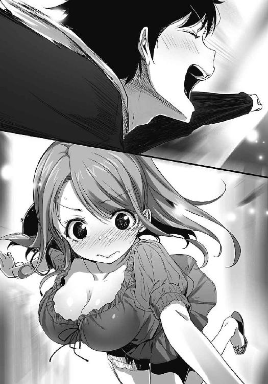
側にいた誰もが振り向く。振り返り、がちゃがちゃと鞄を揺らして、疾走バカップルを呆れ顔で一瞥する。どーだ、と左腕を前へ突き出して明瞭じゃない叫びを吐き出す。俺たちがいつの間にか失っていた、周辺に広がるものを生み出した快感に酔いしれて、心から笑う。
プロポーズに面食らっていた流子が溶けるように足腰を折って、歩道の中心で「ほぎゃー！」だの「ぐばー！」だの奇声を発する姿に付き合いながら、もう一度だけ空を見上げた。
水色の空と太陽が混じり合い、あの懐かしい粒子が、俺たちに降り注ぐ。
その祝福めいた幻想に、『ありがとう』と、二年間の万感を込めて呟いた。
「げへへ」
「おかーさーん、イトコがおかしいー」
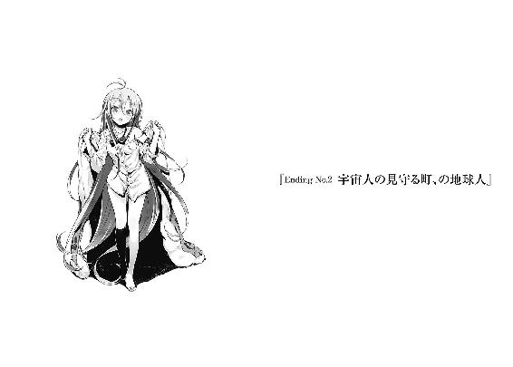
「もふっふっふふ」
「......おい、なんか懐かしいのが来たぞ」
店の奥に座っているエリオに顔を向けると、あいつは顔を綻ばせて、のそのそと立ち上がる。座りこんで店番を請け負っていた俺の前へと、布団を巻いた少女がてこてこ近寄ってきた。ぴろりろぴろりろ、と駄菓子屋の入り口にあるセンサーが反応する。小さな簀巻き少女、つまりリトルスマキンは小学、四、五年生あたりの背丈に大人用の布団を巻いているから、バランスが悪い。細長いちくわから中身（女の子の胴体、足等）がはみ出しているみたいだ。そいつをぼすっと軽く叩く。正体はおおよそ察しがついているけど、回顧に引かれて遊びに乗ってみる。
「顔出し」
命じると素直に布団の上から顔を覗かせた女の子が、にひひーっと屈託なく笑う。
「オッス、おじいちゃん！」
「やはりひ孫か。その布団はなんだ」
「エリおばあちゃんの真似！」
いやそれは一目で分かる。俺が尋ねたのは、どこから調達してきたって話なのだが。俺の隣までやって来たエリオを見上げて、二人で微笑み合う。お互い、また皺が増えたなぁ。
「お前、何歳までアレやってたっけ？」
「週二」
「現在進行形かよ」
エリオのピースマークに苦笑しつつ、まぁ確かに時々見かけるよなぁと肩を揺する。そうして俺が笑っていると、いつも通り裸足で店へ下りたエリオが、ひ孫の頭を撫でる。
ひ孫の薄まり、儚げな水色の髪。そしてあの光り輝く粒子を放つ水色が失われて、銀色に似た白髪となったエリオ。従妹の周辺には既に光が舞い散らず、サラサラと、流れ落ちるようだ。
「縮めない。エリ『オ』、おばあちゃん」
「分かった、エリおばあちゃん！」
満面の笑顔で人の話を聞かない癖は、ひいひいお祖母ちゃんからの血統かねぇ。エリオが年甲斐もなく、むーっと膨れる。ひ孫は布団の中に顔を引っこめて、「もっふふー」と踊る。
店の中に、他の子供たちの姿はない。この時代には天然記念物として登録されかねない駄菓子屋は、一日に一人か二人、客が訪れれば繁盛している方だ。完全に趣味の店である。奥の棚にある洗剤やらスナック菓子の消費、賞味期限は保証できない。業者もほとんど来ないし。
けれどまぁ、店内に漂う、世間に取り残されて停滞したような空気の中で微睡んでいると、それだけでほくほくと幸せが訪れる。その為にこの場所があるのなら、それも悪くない。
ゆっくりと、うねるような心地よい時間が生まれる。外の穏やかな陽気が程良く伝わり、入り口のガラスを貫く陽光は、こちら側に入りこんだ瞬間、その尖り方を改めて温かく広がる。
この空気の中、うたた寝をして、そしてそのまま死んでもいいなぁと思えてしまうそんな日々が続いていることに、俺はこの上ない幸せを感じていた。昔の、青春ポイントなんてものを追いかけていた俺なら、きっと留まることを良しとせずに走り出したのだろうけど。
生きてきた世界と共に、俺も老いた。
今から走り出しても、あっという間に壁にぶつかってしまいそうだ。
「もふー」
踊っていたひ孫がゴテン、と仰向きに倒れた。やはり重心が高すぎるようだ。エリオがよっこいしょ、と膝を曲げてリトルスマキンを助け起こす。ひいお祖母ちゃんぶりが板についてるねぇ。甘やかしている俺が言えたことでもないんだろうけどな。
「もふっふ」
珍妙に身体と布団をくねらせて、恐らくは感謝の念を伝えているひ孫に微笑む。俺たちの子供も、孫も、みんな幼少期に真似して遊んでいたことを思い出す。伝達率高すぎるだろう。
「あるもんだなぁ、血筋ってやつ」
ぐりんぐりんと回転しているひ孫を眺めながら呟く。と、隣に座って長い髪を掻き上げたエリオが、俺の横顔を笑う。燃え尽きた星のように輝きを失ったはずのエリオは、しかしその微笑む瞬間、粒子の残滓を解き放つように、『あの』水色を俺に幻視させる。何度もまばたきした。
そのまばたきが散らしてしまったように、エリオは白黒の色遣いに戻る。
「じゃあこの子、匂いフェチになるの？」
「......墓の下までは持っていくなよ、そのネタ」
ふん、と鼻を鳴らしてそっぽを向く。ついでに鼻をひくつかせて、駄菓子屋の匂いを嗅ぐ。
埃と、古臭い木の香りを混ぜこんだような匂いが漂っている。今の俺たちの匂いだ。木のように根を下ろし、終わりを緩やかに待ち続ける。起伏なく、歩きやすい毎日を生きながら。
田村さんの匂いはここにあるだろうか。
女々さんの匂いは、俺やエリオに残されているだろうか。
匂いは、人の生きた証に。ここにいた、という証になり得るのか。
「もふーふー」
布団の奥で歌うひ孫の声に喉と耳の奥をカリカリと刺激されながら、天井を向いた。
俺もあの人たちみたいに、満足してこの世を去っていけそうだ。
俺がこの町に引っ越してきて、高校を卒業して、それでもここに留まって。
それから何十年が経過しただろうか。お互いの誕生日を盛大に祝わなくなってから、俺たちは年数を数えるのを放棄してきた気がする。或いは、女々さんが亡くなってからか。
女々さんが亡くなったことは、今でもどこか実感が湧かない。
「お母さんなら、百歳過ぎても元気に生きているって思ってたんだけど」
足をぶらぶらと振りながら、エリオが目を瞑って独白のように呟く。
「......まーな」
あの、俺が出会った当時の容姿をずっと維持して。
今にも駄菓子屋の入り口からこそこそと顔を覗かせて、飛び出す機会を見計らっているような。そんな期待なのかなんなのか、名状しがたい気持ちで店の扉に目をやってしまうことが、時々ある。正面の家が取り壊されて、遠くまで見渡せるようになった景色に、目を凝らす。
勿論そこには女々さんの、あの歳不相応な大供の笑顔はあるはずもなく。空白が延々と続いていくような、なにもない風景が広がっている。そうして確認した後、その『勿論』に首を捻ってしまうのだ。俺も、エリオも。寂しさとか後悔じゃなくて、身体のどこかが失われて、それなのに俺はまだ、その失った部分が繋がっていると感じている。そんな感覚に翻弄されて。
「でもそんなこと言ったら、イトコがしわしわになっているのも不思議」
エリオが俺の頬を、親指で撫でてくる。ぐしぐしと触感を確かめるように、擦りつけてくる。
「心の中ではまだ若いつもりなんだよなぁ、これが」
年齢に抗っていた女々さんの気持ちが、今頃身に染みる。いやあそこまで抵抗を続けて、なおかつ見た目が若返るという結果にまで行き着くことはできないけどな。妖怪違うから。
「お前の髪も真っ白になるとは思わなかった。ずっとさ、なんか、キラキラしてるかなと」
そんな漠然とした未来予想図は、時間の流れの前では無意味だった。俺とエリオは老いて、地球の規格から外れた美少女は、地球の枠組みに収まる美しい老婆となった。こっちも単なるクソジジイだ。息子がいて、孫がいて、ひ孫までいる。かつての友人もみな、いなくなって。
リュウシさんも前川さんも逝ってしまった。二人とは晩年まで良い友人であれたと思う。俺とエリオを含めて、高校を卒業してからも四人で仲良く連んでいた。ある種、理想的な関係であった高校二年生の状態を、少なくとも俺が知覚できる部分では続いていて、それが嬉しかった。なんというか、もし他の誰かと付き合ったり仲が発展すれば、俺たちの間には目に見えるほどの亀裂が走るような気がしていたのだ。選ばなかった可能性に対して、どうこう言ったところで正解はないのだろうけど。俺は今、ここでクソジジイであることに後悔はない。
「寝顔、かわいい」
ニコニコとひ孫の寝顔を覗きこむエリオに、まったくだ、と唇だけで返事する。
ひ孫は巻いていた布団を外してそのまま寝転び、昼寝に移行してしまった。布団に巻かれたまま眠らないだけ、初代スマキンより常識を弁えている。将来有望だな、うんうん。
近所に住んでいるとはいえ、定期的に遊びに来てくれるひ孫というのも貴重ではないか。親である孫の方はほとんど顔を見せないが、ひ孫はエリオに懐き、駄菓子屋の雰囲気を気に入っているみたいだ。お菓子が食べ放題に近いのも高ポイントなのだろう。むしろそれが本命？
「......うーむ」
孫からすれば、愛娘を菓子で釣っている性悪な爺婆として陰口を叩く対象なのかも知れない。今は小学校も春休みで、ここを訪れる頻度が上がっているから余計に。一緒に遊ぶ友達がいないのだろうかと心配になってしまう。スマキンごっこは友達みんなで仲良くできないしなぁ。
「イトコ、お昼ご飯なにがいい？」
億劫そうに膝に手を突き、時間をかけて立ち上がったエリオが要望を聞いてくる。腰が曲がり、格好も年相応に落ち着いて、けれど裸足なところだけ変わらないエリオ。そのたたずまいから田村さんを思い出して、目が自然に細められる。ただでさえ最近、目が小さくなってきたのに。老眼鏡を手放せなくなってきているが、今日はどこに置いたか忘れてしまった。
「そうだな......じゃあラーメン」
ひ孫の好物を注文する。ついでにエリオの調理できる範囲も考慮して、だ。料理に関しては女々さんの指導でそれなりにこなせるようになったけれど、得意というわけではないのだ。
「ん」
エリオが小さく頷いて、駄菓子屋の奥へ向かう。嫁の後ろ姿をぼんやりと見送ってから、店先を見渡せるレジの側に座り直す。何十年前製か定かではない、表面が黄ばんでねとつくレジはまだ正常に稼働する。数字を打つこともめっきりなくなったけれど、機能しているという事実だけで心が湧き立つのは不思議だ。あぐらをかいて、足に肘を突いて、店の外を見つめる。
こうして、ここに座っていると様々な過去を思い返してしまう。色んな時期、色んな俺がこうして駄菓子屋に座り、店番という名目で一息ついていた。俺は高校を卒業してから、この町で就職先を探した。高校在学中に田村さんが亡くなって、エリオは駄菓子屋を継いで。
そして俺たちは、この町で一緒に生きてきた。女々さんも当然、同じ家に住んだまま。三人で藤和家に暮らす、あの生活を続けてきたんだ。女々さんは本当に、五十、六十歳になっても性格が変わらなかった。むしろ悪ノリの面に関しては悪化した気がする。婆さんネタまで駆使し始めたからな、収集つかなかった。そんな中でもあの人らしく、孫を溺愛することは欠かさなかった。ひ孫の顔を見る前に逝ってしまったのが残念でならない。あの人らしくないよな、と今でも不満に感じる。あんなあっさりいなくなるなんて、ほんと、似合わない。
エリオットさんは女々さんの葬式に訪れなかった。というかああいった宇宙人の手合いは、いつの間にかみんないなくなっていた。星宮社も前触れなく消えたし、かぐや姫さんの一家も同様に。なにか宇宙に大きな出来事でもあったのかね、と当時は想像して少しだけ笑ったものだ。だけどエリオはずっとこの町にいるわけで、ああこいつはやっぱり地球人なんだなぁ、なんてよく分からない安堵を覚えた自分に恥ずかしくなったのも、今では苦笑いの種だ。
「一年、二年......エリオか、俺が、どっちか先に死んで......かぁ」
長くはないだろう。そんな予感がする。今になってみれば、晩年の田村さんにも、女々さんにも死期を感じ取ったような行動と言動が散見された。突発的な死ではなく、寿命の限界を迎えようとしていると身体がなにかしらの信号を発するのではないだろうか。科学的根拠はないが。
人生はすごろくのようなものだ。終盤になると『止まったら死ぬ』のマスが増えてくる。俺たちはそれを医療機関というチャンスカードで回避したり、運に助けられてみたり。
最近は夜に布団に入り、目を閉じてからあやふやになることが多い。俺はこのまま目を覚ますことなく、ずっと眠るのだろうか。眠るとは、なんだろうか。そんな考えがぐるぐると頭を掻き乱して、霞がかったように曖昧模糊となり、そのまま眠りに落ちる。
そして今日もそうした迷いの中で目を覚まし、朝日を浴びてふがふがと笑う。町は夜明けを迎え、またそこに生きる俺たちも光の中で目を擦り、その自転に付き合って生き続ける。
後悔はない。多分、脳が老いていく中でそれさえも、忘れていくのだろう。幸せじゃないか。
古臭い屋根を揺らすような飛行機の音に耳を傾けながら、流れる時間に身を任せた。
ジッと、ジッと。じんわりと、優しい熱が手のひらと身体の中を包むまで。
「お待たー」
「おー」
エリオの作ったラーメンの匂いでのそのそと起きてきたひ孫と共に机を囲み、啜る。インスタントで、そもそもこれは駄菓子屋の売り物でもあるのだが、そういう点に目を瞑れば美味い。
「もるもる」
ずるずるともふもふを無理に混ぜて表現するひ孫の鼻が、ラーメンの油でてかてかに輝いている。ティッシュで拭いてやると、ひ孫が「にひ」と歯を見せて笑う。うむ、娘にしたい。
「なぁ」
「ん？」
対面に座るエリオに、少し歯切れ悪く提案してみる。
「明日はこの子と一緒に、宇宙人でも探しに行かないか」
エリオの目が丸くなる。直後、俺がボケたかと一瞬疑うような顔になる。失敬なやつめ。
「ウチュージン探し？ 行く行く！」
宇宙人の如き髪の色を誇る少女が、ほーいほーいとご機嫌に挙手する。握っていた箸の先端からラーメンの汁が飛び、机にかかった。「あやや」指でぐしぐし拭って、舐めた。
「しょーこ隠滅」
「こら。ちゃんとティッシュで拭くの」
エリオがひ孫を叱る。お前が言うな、と過去を知るやつなら言いたくなるが我慢した。それとお前は靴を履く癖をつけろ、ともう何十年と言い続けている件も注意してやろうかと人差し指を構えたが、ひいお祖母ちゃんの名誉の為に咳払いで流した。
「で、どうだ。宇宙人探し、兼、ピクニックのようなものだが」
「宇宙人」
エリオが無機質に呟く。箸を揃えて机に置いて、俺を見据える。その眼球。周辺はしょぼくれて皺が寄り、しかし奥に輝く水色の瞳だけは、初めて布団を解いたときから変わっていない。
夜の中。コンビニの強い光に照らされて。頭や顔にピザをくっつけて。
表情は能面のように変化がなくて、だけれどそいつの周囲には水色の粒子が飛び交い、世界を、俺の常識を淡く塗り替えていた。その水色の瞳は、圧倒されている俺を真っ直ぐ見据えて。
覗きこむように眼球の輝きを確かめた瞬間から、俺はエリオという存在に目を奪われていた。
そのエリオの輝きがまだ、惑星のように残されている。思わず言葉を失っていると、エリオはうっすらと微笑んで、エリオは改まったように俺に尋ねる。どこか気取った雰囲気が心地よく、そしてこそばゆい。
「宇宙人探し？」
「そう」
エリオが店の入り口の方に顔を向ける。
「自転車に乗って？」
「そうっ」
俺と、お前で。自転車に乗って。
「急に予定を決めたけど、晴れて良かったな」
高く昇った太陽を見上げて、目の奥まで焼く。駄菓子屋の前に通っている道路は人気も車の往来も少ない。というより近所の住宅が軒並み取り壊されて、荒野のようである。
空も澄み渡る、というほどはなく薄ぼんやり。しかし俺はこれくらいの天気が好きなのだ。青色一色で、他の表現を許さない空よりは融通が利いている感じであることを評価したい。
「雨が降ったらどうする気だったの？」
自転車を磨きながら、エリオが試すように聞いてくる。さて、と首を捻った。
「更に明日にするだけだろ。やることも、そうそうないからな」
首を戻すついでに鞄の紐を肩にかけ直す。こうしていると、高校生を思い出すなぁ。
だが俺はあくまでジジイ。何十年とこの町で生き続けた、地球人の末路。
ひ孫の相手をするのが一番大変で、そして一番楽しい。なんと理想的な老後ライフ。
もっともこれは、明日まで俺たち二人が生きていたらという話になる。それは若い頃なら当たり前の確率で訪れる日常だったのだが、この歳になるとそうはいかない。
しかし俺は、明日の話をないがしろにして生きることはよしとしない。
「......ん」
ペダルを磨き終えて、エリオが立ち上がる。この自転車も何台目、いや何代目となることやら。普通免許も取得しなかった俺たちは、未だに自転車を乗り回している。さすがに、エリオが籠に収まることもなくなったけれど。成長したなぁ、とその姿を眺めて一人頷く。
「なに、イトコ」
「いやこういうときに布団を用意しようとしないあたり、大人になったなぁって」
旅行といえば布団、遠出といえば布団、外出といえば布団のせーしゅん女だったからな、こいつは。指摘されて、エリオがそっぽを向く。聞かなかったことにするつもりのようだ。
一方、進行形で子供のひ孫はリトルスマキンとなって周辺を走り回っていた。この光景を見かけたら、親がさぞかし心配するだろう。なに吹きこんでるんだよ、と怒られそう。
「もーふふっふー」
がしゃこんがしゃこん、と自転車に足だけでよじ上ろうとするひ孫をひょいと抱き上げて、地面に戻した。「もふー？」「分からんぞ」顔を出す。「なにをするー」
「危ないから籠に乗ったらダメ」
「えー。イーチーは籠に乗るんだよ。じーちゃんが言ってた」
「お前はイーチーじゃないの。お祖父ちゃんの運転技術も衰えてるから、危険なことはダメ」
自分にダメ出ししながら、ひ孫を説得する。孫からの大切な預かりものであるひ孫なので、丁重に扱わねばならない。「うー」昔のエリオと同じ唸り方で不満を訴えてくる。と、なぜか背後からも「うー」が重なるように聞こえてくるので振り返る。エリオが膨れていた。
「なんだよ」
「わたしが籠に乗るときはそんなに注意しなかったのに」
「何度注意しても『もふもふ』しか言わないから諦めたんだろーが」
うー、と背中を引っ掻いてくる。えぇい、この歳になって今更にヤキモチ妬くな。エリオとひ孫に同時に唸られて対応に困り、なんでこんなことで困るのだろう俺は、と二重に困惑する。
「イトコー、大事にしろー」
背中にのしかかってくるエリオが扱いの変更を要求してくる。大事に、十分しているつもりなのだが。「女々さんとの約束もあるし、な」何気なく呟くと、エリオののしかかりが中断した。
「お母さん？」
「ん、ああまぁ、大事にしてあげてね的な約束をしたのだ」
ついでに女々たんもー、と飛びかかってくる老婆は心臓に悪かったが。たんって、あんた。
「ふーん......でも守れてないー」
やーい、といった様子で嬉しそうに俺を指差してくる。ひ孫もそれを真似てくる。
「ひいじいちゃんのケチー」
「なんだ小遣いが欲しいのか、しょうがないなぁ。ほら現物支給」
常備している飴玉をポケットから取り出してひ孫に差し出す。「ちゃうわい」と言いつつも受け取って、渡した三つをいっぺんに口に放りこむ。十個渡しても同様に、一斉に口の中で転がす癖はどうにかした方がいい気もする。なんか頬を膨らませるカエルみたいになるし。
それでも愛らしいというか、その宇宙人めいた端整な容姿は崩れないのだが。エリオの如く。
「そういえば自転車には乗れるようになったのか？」
ぬぃひ、と深く唇を歪めるようにひ孫が笑う。そのままピースマークを作った。
「エリおばあちゃんと特訓した！」
「へぇ」
いつの間に。エリオを見やると、「ん」とこいつまで得意げに胸を張る。
「公園のヒミツトックンは小学生の基本だし。それとエリオ、おばあちゃん」
「俺の身近には特訓しているやつはいなかったけどな」
「ヒミツだから鈍いイトコは気づかなかっただけ」
「あーはいはい、とにかく行くぞ。ほら乗れ」
エリオが磨いた自転車のサドルにまたがる。足の付け根がペキンと小気味よく鳴る。運動不足の背中は強張って、身体は全体に窮屈となっている。自転車は今でも足として活用しているけど、段々とそれが苦しくなってきている。女々さんが自転車に乗らなくなったのは、何歳のときだったかな。鼻に溜まった脂汗を拭いながらそんなことを考えていると、荷台に誰かが座る衝撃。そして俺の腰に、ほっそりとした手が回される。エリオの腕だ。振り向かなくても痩せ細っても服の上からでも、触れられるだけですぐに判別できる。目を瞑っていても、自宅の中でなら物の配置も覚えて自由に動けるように。熟練なのだ、俺とエリオの間柄は。
「あたしどこ乗るのー？」
まだ布団を身体に巻きつけているひ孫が自転車の周りを走り回る。
「自転車に乗れるようになったんじゃないのか？ 自分用の自転車は？」
「ひいじいちゃんたちと一緒がいいもん」
ぷーっと膨れる仕草は、髪の長さと相まって女々さんを彷彿とさせる。ああそうだ、と道路を左右に見渡してあの人が隠れていないか確かめてみる。なんと、影も形もなかった。
「いないね」
心の内を見透かしたように、エリオが言う。
「......珍しくな」
振り向かないで、二人で笑って自転車を揺らす。ひ孫は「ぬー」と背伸びして、俺たちを見上げていた。無視するなよー光線がびかびかと俺たちに向けられているので、仕方ないなと籠を叩く。ひ孫が顔をパッと輝かせて飛び乗ろうとしてきたので、「待て」と行動を制する。
「ただし布団は脱いでいくように。見なさい、今日はひい祖母ちゃんさえ布団なしだよ」
「さ、さえってなに？」
「それならやむをえんなー」
俺の説得力溢れる言葉を受けて、ひ孫がそれなりに納得した顔で駄菓子屋へ飛びこんでいく。
「イトコ、さえって？」
「駄菓子屋の戸締まり、はまぁいいか。盗られて困るものは命だけと、なはは」
「う、うー」
ごまかしている間に、布団を脱いだひ孫が戻ってきた。自転車の籠に飛び乗り、収まる。それを見計らってから、エリオが『さえ』とは別のことを質問してきた。
「イトコ、どこ行くの？」
「そうだなぁ、宇宙人ってどこにいるんだ？」
「わ、わたしに聞かれても。知らないし」
えー、そうなのーなんてすっとぼけてみる。そもそも所在が判明しているなら探す必要などない。ていうか宇宙人はいない。この町で過ごして、その間に数え切れないほどの自称宇宙人と遭遇したけれどあいつらの地球人ぶりにはほとほと呆れた。純正の地球人であり続けた俺よりもずっと、地球人らしい連中ばかりだった。食い意地の張っているやつが多かったなぁ。
「よーし、じゃー、海でも行くか」
出かけ先に困ったときは取り敢えず海と決まっている。それこそ何十年と以前から。
「うみー？ 水着持ってないよ」
ひ孫が唇を尖らせる。
「そもそも泳ぐには季節が早い。冷たいぞー、この時期の海は」
飛びこんだこともあるのだから間違いない。あれ、あのときは五月だったかな？
「じゃー夏ね！ 夏も海行くね！ 泳ぐね！」
カタコトっぽく、かつ勢いよく約束を取りつけようと捲し立ててくる。
「お父さんたちに連れていって貰いなさい」
「ひいじいちゃんたちも来るの！」
「あー......まぁ、暇だったらな。ほら、危ないから前向け」
ひ孫を正面向かせて、ハンドルを握りしめる。今日は殊更、慎重に運転しないとな。
ぎゅうっと、エリオが俺の腹を抱きしめてくる。そのまま頬を背中に擦りつけてきた。
「イトコ」
「おぅ」
「ひ孫の水着にハーハーしたらダメ」
「うるせぇボケ」
ペダルをこぎ出す。いつだってこの瞬間、俺は確かな重力が足の裏から膝まで駆け上がってくるのを感じる。重い。動き出す重みと食いしばる奥歯の苦みに顔をしかめて、そして。
それでも全霊込めて、俺たちは、地球人なりに前へ進んでいく。
五センチメートル先にぶら下がる奇跡を、今でもまだ目指して。
海まで体力が保つか心配になったけど昔取った杵柄という言葉もある。
その言葉とこれまでの人生を嘘にしない為に、ペダルを強く踏みつけた。
「嘘じゃないぞー、ひい祖父ちゃんたちは自転車で空を飛んだことがあるんだ」
「すげー！ どんくらい飛んだの？」
「二秒くらい」
「わー海だー」
俺たちの武勇伝はひ孫のお気に召さなかったようだ。聞かなかったことにされてしまった。
せっかく息切れしながらも昔のヤンチャを語ったのに。今でも時々、あの日を夢に見るよ。
「潮の香りがすると、鼻の中がむず痒くなるな」
「イトコの匂いフェチが本領発揮？」
「お前、死ぬまでそのネタ引きずりそうだな」
女々さんの意志でも継ぐように人を苛めやがって。懐かしく、感慨深く、そして苦いものを口いっぱいに感じながら、砂浜の手前で自転車を停める。ブレーキが悲鳴をあげて、車輪を停止させる。光に目を眩ませながら見上げると、俺たちが滑走路とした道路は健在だった。
「うみみー」
「うみみみみー」
ひ孫とエリオが謎の共鳴を果たす。二人で揺れるように緑色の海を賛美し出した。俺も『うみみみみみみー』とか輪唱っぽく続いた方がいいのかなと一応は検討しながら、海を見つめる。
ここの海も随分と汚くなったもんだ。以前はもう少し透明感があって、心躍ったのに。
この海ではガードレールを越えて飛びこんだとしても、水面にエリオを見つけることは叶わないだろう。海も老いたのだな。永遠は自然の中にさえ生まれない。
ただ、潮の香りは何年経っても変わらない。漂う空気だけが、時を越えてきたように。
謎ソングを歌い終わったひ孫が自転車籠から飛び跳ねて、「わーっ」と砂浜へ駆け出す。
「おーい、一人だと危ないから。止まれ止まれー、戻ってこーい」
言っても無駄だろうと予期しながら注意する。予期は見事に当たり、ひ孫は砂浜を子犬のように走り回っている。仕方ないなぁ、と自転車から降りて、急いで追いかけることにした。
まず後ろに乗っていたエリオから下りる。俺の肩を支えにしながら慎重に地面へと足を下ろし、上半身を落ち着かせるように息を吐く。一時期、体調を崩して寝込んでいた影響で、エリオも身体が弱くなってしまった。俺だって人のことを弱いと言えるほど、強くはないがね。
「海、久しぶりに来たね」
目を細めて、ＵＦＯでも探すように青空を見上げるエリオが笑う。正面から受ける太陽光を取りこみ、髪と肌がかつての艶と粒子を取り戻すように潤う。そんな錯覚を瞬間、垣間見る。
けれど現実、エリオはエリオ。老婆で、枯れてしまったような髪はなにも吐き出さず。
こいつならその気になれば、時の流れにだって、勝てる気がするんだけどな。順調に老いていく俺に合わせて、自身の老化に抗わない道を選んだのだろうか。だとするなら、申し訳ない。
「宇宙人、探す？」
「ひ孫と遊んでからな」
自転車の鍵をかけてから、砂浜でネズミ花火状態の少女を指差す。エリオが目尻を垂らす。
「そんな元気、残らないかも」
「あー、精根尽き果てたら、宇宙人探しは延期ということで」
なにしに来たの、とエリオがくすくす笑う。しかし、俺の意見に反対ではないようだった。
二人並んで、砂浜を踏む。さくっと、軽快な音が足の裏を包んだ。歩く度、足を前に出す度、エリオとこの砂浜を歩いた瞬間が思い出される。何度、こうして一緒に海と向き合っただろう。
「ひーじーちゃーん、エリおばあちゃーん、はよこーいよー！」
くねくね、と珍妙に身体を捻りながら催促してくる。分かった分かった、とエリオの腰に手を当てて支えながら、二人で少しだけ歩調を早める。苦笑するエリオが俺を見上げて、こっちは唇が緩むのを我慢できなかった。だからその視線に気づかないふりをして、海の彼方を見る。
俺の知らない宇宙人も、俺の出会ってきた宇宙人も、だぁーれも見当たらなかった。
「よーし、やっと来たなー。うしうし」
腕を組んで胸を張るひ孫は最高に偉そうだった。長髪が潮風に弄ばれて、バラバラと横に広がる。風が髪の奥に潜む粒子を掬い上げて、紙吹雪のように舞い上がらせた。水色の、粒子だ。
それを尊く儚く、内臓を締めつける感触混じりに見届ける。潮風に目の横をえぐられて、深く鈍い痛みがこめかみの横を覆った。けれどそこはカラカラに乾いていて、涙は出ない。
「で、さー。ひいじいちゃん、宇宙人いないよー」
ひ孫がじたばたと足踏みして訴えてくる。うむ、上下左右を見渡しても人っ子一人いないな。清々しいほどに、浜辺に立つ人影は三つだけだ。風もまだ冷たさを含んで、軽く身震いする。
「じゃあ宇宙人が出てくるまで遊ぶ？」
エリオがひ孫の流れる髪を指で掬いながら提案する。それを受けて、ひ孫は「うじゃー」と飛び跳ねた。良いのか悪いのか、ど、どっちなんだ？ 最近の若い子は分からんわー。
「なにして遊ぶー？」
ニコニコ顔で尋ねてきたので、どうやら賛成のようだ。エリオと顔を見合わせる。海でなにをして遊ぶか。過去にもそんなことを悩んでいた記憶がある。そこから数十年という人生を経て、俺は答えを出さなければいけない。むしろ出せないなら、なにをして生きてきたという話ではないか。うむ、とエリオに向けて頷く。エリオも「ん」と、無言の指示を受け止める。
どうやらお互い明日、明後日は足腰が立たなくなることを覚悟の上らしい。ならばよし。
俺は肩にかけていた鞄を漁って、短いソフトビニール製の刀を三本取り出した。説明するまでもなく、スポーツチャンバラ用の道具である。若かりし頃、息子と海水浴に来た際に使っていたものだが手入れすれば現役で使えるのだ。ひ孫とエリオに一本ずつ、小刀を渡す。
「おー、これでひい祖父ちゃんたちとケットーするの？」
ブンブンと小刀を振り回しながら、ひ孫が目を輝かせる。エリオが「ん」と頷きながら、ひ孫に向けて刀を構える。ひい祖母ちゃん、やる気満々である。切っ先の向こう側に、リュウシさんを見出すように。あの夏の海水浴は楽しかった。二日酔いの感覚まで思い出せる。
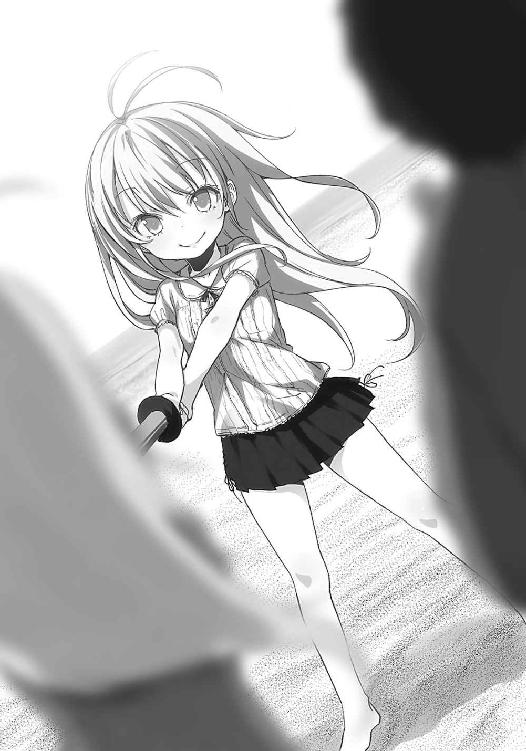
だから、海ではスポーツチャンバラに限る。別に考えるのが面倒だったわけじゃないぞ。
「ふふふ、イトコ、決着をつけてやる」
エリオが不敵に宣言する。決着って、お前と戦ったことあったか？ などという疑問は喉の奥に引っこめて、砂を強く踏みしめる。ここまで自転車をこいできた所為で荒かった呼吸が、スポチャンの刀の先端に収束するように、ゆっくりと静まっていく。波の音が遠くなった。
「リュウシさんの代理で、お前を打ちのめしてやるか」
敢えてその名を出すと、エリオがニヤリと唇を歪める。表情豊かになったなぁ、ほんと。
宇宙人であることを放棄した結果、完全な地球人になったのかも知れないな、こいつ。
「そこに割って入るシンセーリョク！ じゃじゃー！」
謎の効果音を伴ってひ孫が切りかかってきた。俺に。ひい祖母ちゃんも同時に。えー。
ひ孫は背丈が低いので、俺たちを相手にしては不利。だから一方的に叩かれて不愉快になりそうだったら手加減しないとな。そういう心配もあったが杞憂に終わった。ひ孫の運動量に対して、こちらジジババペアは無力に等しかった。一回振りかぶって切りかかる間に、ひ孫に五回は叩かれる。常に反復横跳びでも行っているような移動の速さに、俺たちは対応できない。
付き合うエリオも「あうあう」と目を丸くして刀が左右に安定していない。
「ぶぃーんじゃきーんきんきんきーん！」
髪を振り乱して粒子を飛ばしながら効果音を交えると、本当にフォース的な刀身を振っているみたいだ。あっという間に息が切れ始めた俺とエリオは、しかし笑顔が絶えなかった。
どれだけ肺が辛くとも、頬の筋肉は無関係に笑おうとする。例えば、それは。この海の向こうで不幸になっていく人がいて、今も大勢の人が苦しんで、死んでいって。だけど俺たちは今、とても幸せなのだから、それを手放す気になれなくて。海の向こうに、行く気はないのだから。
世界に蔓延する不幸の中で目一杯、幸せであることに似た笑顔。偽らない、本物の想い。
そうしたものを引き絞るように振りかぶりながら、不変である潮の香りに問う。
あのスポチャン爺さんは、この海で宇宙人に会えたのかな。
「おひるーごはんー」
「るるるー」
「いやひい祖母ちゃんの方はるるるじゃなくて準備手伝え」
季節が外れているから、残念なことに海の家は営業していない。ので、弁当の出番だった。朝方、俺とエリオが握ったおにぎりを、半ば砂に埋もれた防波堤の上に広げる。ラップに包まれたいびつなおにぎりを手に取ると、いつかの草野球で前川さんが差し入れてくれた日のことが思い返される。前川さんのおにぎりはもっと綺麗な形をしていたよな、と敗北に微笑む。
俺とエリオの間にひ孫が座る形で、これだと親子みたいだなぁなんて思ってしまう。
へとへとなんてものじゃない両腕を動かして、水筒も用意した。中身は麦茶。コップに注いでひ孫に差し出す。受け取ったひ孫は喉を鳴らしながら一気に飲み干す。ぷへーと息を吐いた。
「わたしも麦茶ー」
「はいはい」
催促してくるエリオにも、ひ孫経由で渡されたコップに麦茶を注ぐ。エリオもまた喉を鳴らして飲み干し、口もとを拭う。一息ついたのか、上がっていた肩がゆっくりと下りていった。
「なに味あるの？」
おにぎりを覗きこみながらひ孫が尋ねる。俺はおにぎりを見比べて、一つをひ孫に渡す。
「これがお前の好きなふりかけ味」
「おー。ひい祖父ちゃんはハイテクー」
パチパチと拍手してからひ孫が受け取る。ラップを勢いよく剥がして、挨拶も抜きにかぶりつく。それを横から眺めていたエリオが緩く握り拳を作り、ひ孫の頭をこつんと叩いた。
「ちゃんといただきますしなさい」
「うー、忘れてた。いただきます」
おにぎりを持ったまま手のひらを合わせて挨拶。自分が女々さんに躾けられたことは守り、口うるさいエリオである。俺も怒られる前に「いただきます」と手を合わせておいた。
適当におにぎりを取り、海と向き合いながら囓る。寄せ合い、引いていく波の音が雑音抜きにこちらまで届く。地球に生命体の溢れていなかった原初、海はこんなにも静かだったのだろうか。太古に思いを馳せるほど、動く影は波以外に見当たらない。空に浮かぶ雲の動きは、長々と見張らなければ気づけないほど緩慢で、まるで今の俺やエリオのようだった。
「おにぎりおいしい？」
エリオがひ孫に聞く。ひ孫は早速、一つめを食べ終えて「うんー！」と元気よく頷いた。
それから、俺とエリオの顔を交互に見上げて、にへーっと頬を緩ませる。
「宇宙人、こんねー」
「こんねー」
エリオが真似る。人の仕草や言葉を真似する癖は健在のようだ。俺も釣られたくなる。
「やっぱいないのかな、宇宙人」
指についた飯粒を口で取りながらぼやく。と、エリオが「ん」と頷いて、そして。
「それでいいと思う。地球にはイトコもこの子もいるから」
かつての布団ぐーるぐる、電波女はいともたやすく宇宙人の存在を否定した。
それも、前向きに。爽快な半面、こいつの電波時代を知る身としては『おいおい』だ。
「えーでもねー、あたしねー、宇宙人っぽいって言われるよ」
ひ孫の発言に対して、ぶふー、とエリオが唇を尖らせてなにかを吐き出す。それから服の袖を捲り、踏めばパキパキと小気味よく音の鳴りそうな、枯れた腕を「むん」と曲げる。
力強さより、老いの象徴といった様子でハラハラしてしまう。波風に折られそうなのだ。
「そういうこと言う子と喧嘩とかする？」
「べつにー。うらやましーかっこいーってほめてくれるし」
うふふどーおー、とひ孫が髪を振り乱す。「さぱぱぱ」とエリオもなぜか頭を振った。
「喧嘩になったらエリオお祖母ちゃんとイトコが加勢に行くから」
「え、俺も？」
「ん」「んん」ひい祖母を真似するひ孫。でもこんなシワシワコンビが助っ人ではなぁ。
ひ孫とスポチャンに興じるだけで全身が悲鳴をあげて、帰りの自転車にげんなりするぐらいだぞ。数時間後の未来を真っ暗に思いながら、砂浜の手前に止めた自転車に目をやる。
何台目か忘れた自転車はイーチー御用達のカラーからは程遠い。あの自転車は生涯、空を飛ばないだろうし立派に役目を果たすことだろう。俺たちもまた、もう飛ぶことはできない。
宇宙人はいらない、と相方が言ってしまうぐらいだから。
「......だなぁ」
海の彼方の不幸を知らないように、俺たちは、宇宙人を見つけられない。奇跡も祈りも超能力も内包した、宇宙の果ての夢と希望は、俺たちにはもう必要なかった。
今、大事なことは。水平に見渡せる世界に、ひ孫と、エリオがいること。
息子がいて、孫がいて、地球の明日を繋げてきたこと。
青春男の終わりに辿り着いた、この海岸での風景に。
俺とエリオの求めた幸せが寄せて引いてを、繰り返す。
「ほらほら風が強いからなー、ひい祖父ちゃんの後ろに隠れろよー、うへへ」
「あ、マコ君君がやられた（既に隣のイトコを相手にしていない）」
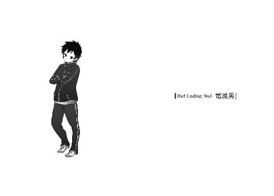
「すまない、さらう相手を間違えた」
「......あの、これは？」
夜に寝て、朝に起きたら謎の男が目の前にいた。しかもその背景まで見知らぬものが広がっていた。白色の壁が時折、透き通った水色に淡く発光している。メカメカしい内装と、照明の類がないにも拘わらず一定に明るさを保ち続ける空間。温度もほとんど感じない。
部屋の広さは大体、十二畳程度だろうか。形はサイコロの内面のように、きっちり正方形だ。
そしてなんか微笑を浮かべて額を掻いている男は、ポロシャツ着てジーンズはいて、ゴルフ場か打ちっ放しに一人はいそうな格好のオッサンだった。ただし、それは格好だけで中身は明らかに地球産ではない。なにしろ壁の謎の発光現象同様、その男の髪も水色だったのだから。
「自己紹介すると、ここはいわゆる宇宙船内であり、私は君たちの認識でいう宇宙人だ」
ハハハ、と男が朗らかに笑って自分を指差す。寝起きなのに目眩がしてきた。なぜ、俺の周囲にはこうも自称宇宙人が集うのだろう。しかもこれは明らかなる誘拐である。営利かは知らん。営利になるほど我が家の財政に期待しない方がいいと思うが。ない袖は振れない。しかもうちの両親は袖を無理に作るかも怪しい。後退りしそうになるが、不思議と足が動かない。
「と言っても、信用していない顔つきだな。ふふふ、いいぞいいぞ、地球人らしい反応で」
なんか気に入られてしまった。出会った当初のエリオをつい想像して、気が滅入る。
「証拠を見せよう。ほーら、外の景色だ。宇宙だぞー」
そいつが指先をなにごとか動かすと、壁が一瞬にして切り替わる。パネルが裏返るように白い壁と発光が消え去り、代わって、暗黒の世界を全面に映し出す。足もとまで一瞬で宇宙となり、思わず血の気が引いた。無重力の世界で落下を恐れるのも変な話ではあるが。
そういえば、この部屋には重力があるぞ、宇宙じゃねえと反論しようとして顔を上げると、そこには地球と月がなんの曇りもなく浮かんでいた。口をぽっかりと開けて、青き星に見入る。
「言っておくが本物だぞ、録画されている画像データでは断じてない」
「しょ、証拠は？」
「君をこの場から宇宙空間に放り出せば、色々と証明できるだろうなぁ」
おおやってみろ、とは言えるはずもなかった。オッサンから顔を逸らし、一番目を引く我が故郷こと地球に目をやる。あまりに鮮明すぎる水の星と、アメリカの星条旗が突き刺さっているはずの月を見つめていると、本物としか思えなくなってくる。しかし、それを認めてしまうということは、つまり。
オッサンと地球を見比べる。オッサンがべーっと出した舌の色が、水色に染まっていた。
なんの気なしに行ったその行為が、非地球人を簡単に証明してしまう。
鳥肌を立てながら後ろによろめき、暗黒を表す壁に手を突いて身体を支える。動悸が激しく、動揺の冷や汗が流れ続けている為か、喉が渇く。唾を呑むと焼けるように痛かった。
故人曰く、三度目の正直。
自称宇宙人との邂逅は、これが三度目。
まさか、遂に本物と遭遇してしまったのか。しかも、誘拐されたというのか。
「助けてモルダー！」
思わず叫んでしまった。脳内では当然、某ファイルのあの曲が垂れ流しだ。
「いやいや危害は加えないよ、すぐ帰すとも。しかしなんの説明もなく連れ出して、しかもそのまま帰したら誘拐犯と勘違いされるじゃないか。ここは一つ、釈明をしたいわけだよ」
接近してきた宇宙人に肩を掴まれる。思ったほどの恐怖がないのは、恐らく、その髪の色が関係している。俺の従妹と瓜二つの輝きを放つそれが振りまく粒子に慣れ親しんでいる所為か、それが目に映るだけでどこか落ち着いてしまう。それに、肩に置かれた指先の感触は宇宙のように寒々しくはなかった。むしろ平熱が高いのか、服越しでも生温い。
「宇宙人さんの手も体温とかあるんですね」
「温度があったっていいじゃない、人間だもの」
あんた本当に宇宙人か。にわかに疑わしくなる宇宙人（不確定）がハッハと陽気に笑い、部屋の中をこつこつと歩き回る。ついでにまた指先を軽く動かして、部屋の壁を発光体に戻した。
「きみがここに来てしまったのは手違い、というか私の不徳のいたすところ、というべきか。もう少し熟達した方がいいのかも知れないが生憎、練習が難しいのだよ」
「すいません、なにを言っているのか今一つ......宇宙の言葉は難しいですね」
「いやバリバリ日本語だから。つまりサルベージに失敗した、ということになる」
そう話してから、彫りの深い顔つきの宇宙人が鼻を掻く。どうも照れているようだ。
「サルベージ？」
「実は、なぜか君の住んでいる家あたりに同胞の反応があってね、確認の為に引き上げてみたのだが、これがなかなか難しいんだよ。地球的に例えるならばゲーセンのＵＦＯキャッチャーレベルに。お目当てのものを取るのに、下手だとコインの山が必要だろう？」
「それ、人によっては一生、成功しないんじゃあ......」
開発中、そんな難易度でいいと思ったのか。誰でも使えるように考慮するべきなのでは。そんなことはどうでもよくて、藤和家の宇宙人反応だと？ 思い当たるフシは一つしかない。
そもそも、思い当たるフシがある時点でどうなんだろう、実際。
「それ、隣の部屋の人ッス」
つーかあいつ、本物の宇宙人だったのか。厳密には父親がそうで、母親の方は妖怪だから宇宙人とあやかしのハーフかぁ。とんでもない組み合わせだな、俺の従妹よ。
「ああやっぱり。済まないね、操作に不慣れで......さっきは電線の小鳥を捕まえてしまった」
ほらここに、と宇宙人が手のひらをひっくり返しただけで雀を生み出す。正しくは、取り出したというべきなのかも知れない。けれど俺はその手品師めいた行動に目を見開き、ますますこいつが、地球の常識から離れている存在であると認めざるを得なくなる。遺憾ではあるが。
「だが丁度良かったかも知れない。地球人は総じて、手先が器用だと報告にあったからな」
「いやぁ個人差が相当ありますけど」
「君はどうなんだい？ 見たところ、大して特徴がない割にやたら異性に人気があるという理不尽な才能を持つ主人公のような面構えだが」
顎に手を当てた宇宙人がジロジロと、俺を探るような目つきを向けてくる。褒められているのかけなされているのかどっちだ、と考えつつも逆に、俺は宇宙人の方をくまなく観察する。水色の瞳に、よく見るとほんのり青い唇。エリオがこのオッサンと出会ったらどう思うだろう。
そして、あいつが電波ちゃん時代にわめき散らしていた宇宙人説が、本当だとしたら。
「ま、物は試しというか」
顔を引っこめたオッサンが手を動かす。すると突如として地面から生えた、としか表現しようのない方法で、大がかりな筐体らしきものを出現させた。形はどこか、ＵＦＯキャッチャー的だ。
「きみちょっと、代わりにこれをやってみてくれないか」
筐体の側面を平手で叩きながら、宇宙人がそんなことを親しげに頼んできた。
「はい？ ていうか、なんですかそれ」
「さっきの話にあっただろう？ 地球のものを引っ張り上げる為の装置さ」
「そんな機械を地球人が使っていいんですか？」
「いいんじゃないかな」
許可されてしまった。宇宙の方は寛容でいらっしゃる。宇宙人は苦笑し、小さく頭を下げる。
「宇宙人からの一生のお願いだよ、記念に受けておくべきだろう」
「宇宙人さんの寿命ってどれくらいなんスか」
ふふふ、と含み笑いをこぼすだけで具体的な返事はなかった。確かめるのが少々怖い。町で知り合った自称宇宙人連中が年齢不相応な顔つきばかりの理由が、まさか寿命が長いからだと知ったら、俺はどれだけ驚愕することか。地球産の妖怪、ジョジョたんも負けていませんぞとお国自慢めいたことを始めてしまうかも知れない。うむ、既に動揺気味である。
「いやぁ、でも......一つ確認ですけど、エリオを引っ張ってきてからどうするんですか？」
「エリオ？ それが同胞の名前？」
「多分」
「いやぁ別にどうもしないよ。ただ地球に住み着いている理由を聞いてみたいだけさ」
「それなら宇宙人さんが地球に下りて、話を直接聞けばいいのでは」
「めんどい。地球の地理には詳しくないから、ご町内の道に迷ってしまうじゃないか」
宇宙人がやれやれ、と肩をすくめる。迷子になるのを気にする宇宙人に会ったのはこれが初めてだ。
「そもそも、宇宙人に会うのが初めてだ、っと」
筐体の前に立つ。藍色の大きな箱で、正面はガラスによく似た物体で遮りがある。そして神秘的に、周辺の壁同様に淡く発光している。外灯に群れる羽虫の気分で、側につい引き寄せられる蠱惑的な光だ。ただしその一方で、これこのまま爆発するんじゃねぇのという心配もある。
寝起きだから、或いはまだ夢の中と考えているのか。なんだか、現実味がないまま俺は地球の外に立っている。筐体を覗きこむと、その中にも地球が一つ、浮かんでいた。
「さー始めてくれ、地球人くん」
宇宙人が促し、このボタンとこれな、と筐体にくっついている二つの丸いボタンを指す。上下と左右のマークが描かれており、形からしてなんというか、そう、そのまんまだった。
「.............................................」
筐体の隅に備わっている、細く小さく、頼りない白銀のキャッチャーハンド。特徴はその指先がピンセットぐらい細くて、また開いていないところだ。指先で摘むような形になっている。
そのような特徴はあれど、これはどこからどう見ても、ＵＦＯキャッチャーの筐体だった。
「あの......これ、地球ッスよ」
中に浮かんでいるものを指差す。それ以外にはなにも存在していない、暗黒だ。
「そりゃそうだろう。地球から引き上げるんだから」
「まさか、ここから引っ張り上げろと？」
「それ以外にあるかね」
宇宙人は真顔で、冗談を言っている風ではない。つまり本当に、この筐体内に浮かぶ丸い地球へとキャッチャーマシンを適切に誘導し、お目当てのものを掴み取れということだ。
「スケールでかすぎ！ 助けてスカリー！」
「地球人くん、あなた疲れているのよ」
「いらねぇよこんな胡散臭いスカリー！ つーか、無理！ 地球をもっと拡大してくれよ！」
地球の全体像からエリオだけ取り出せとか！ 無茶振りすぎる！
「な、難しいだろ。だから偶に失敗して、変なものを引っ張り上げてしまう。地球上で発生する神隠し騒動の大半は、これが原因のようだね」
「そりゃまた、はた迷惑な不器用さで......え、つかそいつら、引っ張り上げたものを帰してないの？ キャッチアンドリリースの思想は？」
「そんな勿体ないことできるかね。ま、地球の動植物を星へ持ち帰るのは認められていないのだが、個人で楽しむ範囲ならお咎めなしだ。なにしろ生物は未知の細菌に非常に弱いからね、地球人に不用意に接触し続けていると、星全体が全滅する恐れもあるぐらいだ」
一回そういうことがあってさぁ。過半数の人類が感染して絶滅しかけたんだよね、と宇宙人がうむうむ頷いている。じゃあ今も会ったらマズイんじゃあないだろうか。俺と小鳥がこのまま帰ったら、人類は同じように滅亡するかも知れない。うーむ、俺が人類を滅ぼすのか。
などと考えつつ、物は試しという宇宙人の言葉を思い返しながらボタンを押してみる。途端、右隅に収まっていたキャッチャーが定位置まで動く。そしてボタンが点滅し始めた。
「押せってことですか？」
「きみゲーセン行ったことないのか？」
ムッとしながら、上下のボタンを押す。と、うぃーんとキャッチャーが前へと進んだ。俺はそれに慌てて、すぐに左右のボタンを押してしまう。キャッチャーは多少の慣性を伴いながら一時停止して、左へと曲がる。その線上に地球は掠りもしていない。呆然と見送っていると、キャッチャーはそのまま筐体の左端に到達した後、のろのろと暗黒を摘んでから、憎らしいほどゆっくりした速度で穴の前へ向かう。そこで空手を開き、なにも景品用の穴に落とさないまま、最初の位置へと戻っていた。そうするとまたボタンが点滅し始める。
思わず宇宙人を眺めた。宇宙人は酷く爽やかな笑顔で、歯を光らせる。
「さ、そろそろ始めようか」
なかったことにされた。俺も便乗してなかったことにしたので、「よーしやるぞぉ」と腕捲り。ＵＦＯキャッチャーは正直、得意な分野ではないが今の空振りがあまりに悔しかったので俄然、やる気が噴き出た。「うぃーんがしゃ、うぃーん」と自然、動く音まで真似してしまう。
今度は慎重にボタンを押した。地球は筐体の中央に浮かんでいるので、捉えるのは難しくない。問題はどこにどうエリオがいるかなどそんな細かく分かるかこの野郎。とにかく日本列島を狙えばいいのだろうか。そんな不安感と共に、キャッチャーが丁度の位置に達したので左右ボタンを押す。地球に小さく浮かぶ日本列島を睨み、キャッチャーが適切な位置にくるまでまばたきさえ控える。そうして日本列島の、しかも中央付近に達した瞬間、「ここだ！」と勢いよく押す。
「あ、しまった！」すぐには止まらないのだ、このキャッチャーは。少々の慣性によって落下地点に誤差が生じる。行きすぎて、広島あたりでようやく止まる。そうしてピンセットの指先が、なにかを引っ張り上げてきた。先端にごく僅か、茶色いものが見える。それが筐体の端の穴に放り捨てられた。宇宙人が、台の外側に空いた穴を探る。
出てきたのは猫だった。ぶち猫がすやすやと眠っている。宇宙人はそれを抱きかかえ、無言。
「も、もう一回」
五百円で五回ですか、と確認しそうになったけどコインを入れる場所はなかった。台を軽く叩きながら、再度挑戦。今度こそ、エリオを吊り上げる。いやせめて、人間を吊る。
慣性の法則を学習した俺に隙はない。はず。上下の感覚はバッチリ。後は左右の慣性を計算に入れて、よしっ、「オッケ！」完璧に日本列島の中央を捉えた。キャッチャーがゆるゆると下りて、なにかを摘む。それは黒っぽいなにかで、水色と明らかに違うなぁと運ばれる途中で気づいた。そして、穴を通ってがこんと出てきたのは毛むくじゃらの犬だった。
「愛嬌愛嬌」
素敵な笑顔でごまかしてさぁもう一度。次は木だった。「......ほら殺風景ですもん、この部屋」ご家庭の観賞用からは程遠い街路樹が土と根っこ剥き出しだが気にしない。トライアゲイン。
「うぃーん、ごごご」茶髪のウィッグを摘み上げた。悪戯してるわけじゃないぞ。大胆に行ってみる。道路の一部分をえぐって引っ張ってきた。マズイ、地球で大騒ぎになりかねない。インベーダーの地球侵略が、地球人の俺の手によって開始されてしまう。次こそ名誉挽回だ。
「お、人間型を吊ったっぽいぞ、やったー」
にゅるにゅると穴から出てくる。キメ、ェ。相手の顔を見て固まる。
「あ、あれ？ にわち？」
「も、戻して！ 早急に戻して！」
見知った顔を即転送。あービビッたー。パジャマ脱ぎかけのところだから余計に。宇宙人のオッサンが半笑いを浮かべながら、俺の肩を叩く。その手には小鳥と犬と猫がごっちゃになって抱かれていて、しかもどいつもこいつも眠りこけている所為で身動き一つしていない。
きっと、持って帰るつもりなのだろう。どういう用途に使われてしまうかは知らない。
せめて健やかに飼われることを祈る。
「きみ、才能ないなぁ」
宇宙人が同情めいた声色で評価してきた。こっちは泣き笑いのような表情になっていることだろう。
「面目ない」
「まぁ、無茶振りではあったか。すまんかったね、そろそろ元の場所に帰そう」
宇宙人が指パッチンで筐体を床に引っこめた。溶けるように、金属体が床へ消失する様は映画のようだ。そんな内容あったなぁと思い出す。確か床や壁が槍になって襲ってくるんだった。
「ところで、宇宙人さんと出会った記憶とかはどうなんです、消されるんですか？」
「いや、別にそういった処置はしないな。地球人の性格を考えれば必要ないからね、まったく」
ははは、と宇宙人が朗らかに笑う。それはどういう意味で、必要ないのだろう。俺は一度しか行えなかったけれど、人間を吊ってしまうこともあるのに。以前にもこういうことがあった口ぶりなのに宇宙人の存在は、地球の中で認知されていない。噂話や夢物語の段階だ。
「......あの」
「ん？」
なにかの合図をする構えなのか、指先を独特の形にしたまま、宇宙人が首を傾げる。
「吊った地球人を数ヶ月後に、地球へ帰したこととかあるんですか？」
エリオは神隠しに遭った、という話だったからな。或いはこれが原因だったのかも。
宇宙人は暫し考え込むように目を泳がせていたが、やがて曖昧に頷く。
「そうだねぇ、無責任なやつはそういうことをしてしまうかもね」
「無責任、ッスか」
「無責任だろう。数ヶ月も時間が空くと、君たちの社会では復帰が難しいんじゃないか？」
なかなか地球通な宇宙人らしく、適確な意見を述べてくる。まったくその通りである。そのろくでなしの所為で、恐らくエリオは苦労してきたのだ。ついでに俺も自転車で飛んで、腕を折ったのだ。それに関してはそこはかとなく自業自得の雰囲気が漂っているが、責任を押しつけておくことにする。なにしろ相手は無責任野郎だから、一つぐらい理不尽に押しつけても背負いきれることだろう。
「しかしきみは宇宙人と同じ家で生活しているわけか。レアなケースだねぇ、色々と」
「褒めてます？」
「勿論だとも」
言い切る宇宙人の目は好奇に輝き、かつ面白がっていた。
「他の宇宙人にも目をつけられやすいかも知れないな、気をつけるといい」
「地球外の存在にどう警戒して生きていけと」
挙動不審になるだけだぞ、絶対。道路の真ん中で急に空を見上げて敵を探すとか。アホか。
「ま、宇宙人にはよろしく言っておいてくれ」
「言いますよ、そりゃぁ。あいつ多分、喜ぶと思うし」
宇宙の星々が好きなら、宇宙人のことも喜んで受け入れるだろう、多分。俺自身、段々と眠気が解消されてきて頭がふつふつ、汗をかくように熱くなってきている。明らかに、未知の生命体と遭遇したことによる興奮だ。一刻も早く、この歴史的瞬間の感動を他の人に伝えたい。
「ということで俺をさっさか地球に帰していただきたい！」
「おぉ？ もっと宇宙船内を見学とか言い出すかと思ったが、意外だな」
「いやだって、早く帰らないと学校に遅刻しますから」
室内に時計がないうえ、朝日もちょっとばかり確認しづらい場所なので時刻こそ不明だが、健全な高校生たる俺が早寝早起きなどするわけもなく。ギリギリに起きて少し急いで朝食を取り、慌てて自転車で出ていくのが常だ。となると、ＵＦＯキャッチャーで遊んでいた時間も含めて、かなり押していると見るべきだろう。ということを宇宙人に告げると、快く頷いた。
「そういう事情があるなら納得だ。いやぁ、地球人は本当に勤勉だね」
「じゃあ、宇宙人って不真面目なんですか？」
「まぁね、私たちは大半のことが遊び感覚さ。だからこんな機械も作ることができたし、宇宙船も君たちより先んじることができた。ただね、文化の進化がかなり偏ってしまっているのも事実だ。特に食料。地球と比べると、私の星は本当にお粗末でねぇ、多様性がない」
げんなりだ、と苦い顔で首を横に振る。なるほどねぇ、と社会見学に来た気分だった。
「だからかな、みんな一度居着くと滅多に地球から帰ってこないんだよ。一部の国を除いて食糧が豊かで、科学はこれからどんどん発展する余地があって、夢のような土地なんだ。それに人類の個体数が異様に多いから、総体的にかわいい女の子が多いし。しかも、髪の色まで豊富だ」
「......あなたの種族は、みんな髪が一緒なんですか？」
「ああ、この水色なんだ。見飽きたよ」
今度、美容院に染めに行こうかなと冗談半分ながらもぼやいているので、お勧めの場所を紹介しておいた。大井さんのところの美容院だけど、あの人なら宇宙人の髪だって切るだろう。
「さて、ご要望だったからそろそろ送り届けないとね」
もう一度、宇宙人が指を構え直す。万能の指。全能の指。宇宙をドライブ気分で旅する宇宙人たちは、指先さえも地球人と異なるのかも知れない。水色の髪、水色の舌、そして瞳。
発光する壁が一層、白く染まる。足もとも輝き、俺の全身が光に包まれる。その光の熱を感じることはなく、ただただ、あまりの光量に不安を煽られる。足から順に消えてしまいそうで。
ああ、お土産の一つも持たせて貰うべきだろうか。だけどそんなものを持ちこんで地球の文明に革命を起こすことにいなったらどうしよう、と臆病風に吹かれてお願いを取り止める。
バタフライ効果とは言わないが、俺が地球の未来を変革させてしまうなど、おこがましい。
記憶だけ、俺の住む世界へと持って帰ろう。
「縁があったらまた、宇宙の片隅で会おう」
その言葉を最後に、宇宙人の輪郭さえも光に呑みこまれた。
そして、気づいたときには再び、自室の布団の中にいた。布団を蹴り飛ばして跳ね起きる。自分の身体を手でまさぐり、異変がないかを確かめる。それから顔をひとしきり撫で回した後、体験した内容を思い返す。......夢じゃない。夢ならここまで一部始終、思い出せるはずない。
なにより宇宙人の手のひらが触れていた肩に、まだその熱が残っていた。
「おぉぉぉおっぉおおぉぉおぉぉぉ！ スゲェ！ 凄いよ丹羽君きゃっほーい！」
部屋を寝間着のまま飛び出す。隣の部屋を覗くとエリオはもういなかった。こんな時に、と舌打ちして階段を転げ下りる。廊下を転がるように前傾姿勢で走って居間に飛びこむと、女々さんとエリオが座り、食事を取っていた。エリオがみそ汁茶碗を手に取ったまま、「よ」と短く挨拶してくる。女々さんは「むちゅー」とはんぺんの端を吸っている。
そんな二人に俺は、興奮と嬉々を半々に滾らせて叫ぶ。
「聞いてくれ、俺は宇宙人に遭遇したぞ！」
団らんの空気が凍った。エリオと女々さんが固まり、二人の笑顔が引きつる。右頬がヒクッとなって、二人はこそこそと部屋の隅に逃げて、顔を寄せ合う。あ、あらら？
「......イトコも遂に......」
「マコ君ったら女々たんへの欲情が抑制されすぎて......」
「ヒソヒソ話さないでくれ、筒抜けだから！ いや嘘じゃないから！ えぇっとだな、宇宙人は水色の髪で舌まで水色だった！ それに宇宙船は淡く発光して、地球は青くて、それから！」
俺の興奮して、断片的となっている言葉のすべてが真実であると、俺は知っているのに！
なんでコノヒトコワーイみたいな顔をするんだ、みんな！
とにかく熱く主張する。人類史上、恐らく初の快挙をどうにか二人に伝えたかった。それは地球人としての義務に思えたからだ。だが二人は目を輝かせるどころか、ドン引きしている！
「エリオ、お前は本物の宇宙人だったんだ！ 正確に言うと親父の方だから、ハーフだな！ お前の主張はある一面で正しかった、否定してすまない！ 今ならお前の気持ちがよく分かる！」
エリオに詰め寄る。するとササッと女々さんの背後に隠れて、おどおどと俺を恐れているようだった。くそ、不信感を煽っただけみたいだぞ、これじゃあ。舌打ちを交えて、テレビの電源を入れる。もしかしたら、と期待してニュース番組を睨むと、やはりあの件が放送されていた。なんでも今朝、原因不明の爆発めいた現象が発生して道路がえぐれたらしい。
これは確かに俺が宇宙船に行き、あの筐体で行ったことを証明している！
「見ろ、この天変地異！ これは俺がＵＦＯキャッチャーに失敗した証だ！ 幸い、死傷者は出なかった？ ああよかった、出ていたら夢見が悪くなるぜ！ どうだこれ！」
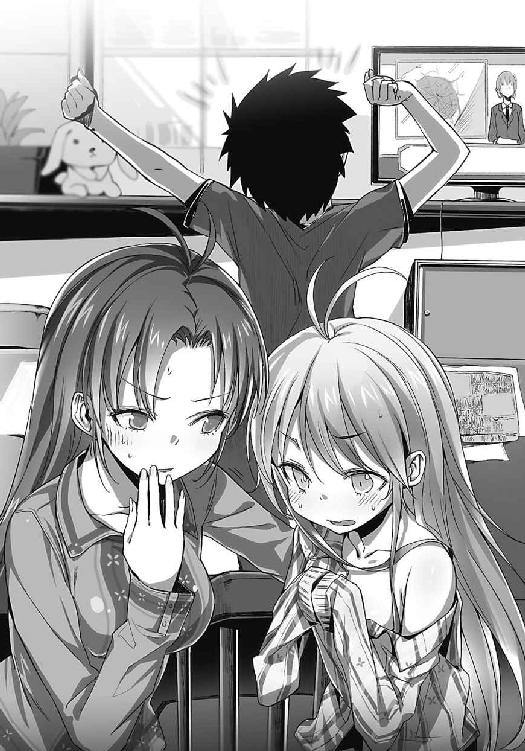
「......ひそひそ」
「お兄ちゃんに顔向けできないわ、よよよ」
「まだ認めないのか！ あああ、どうすれば信用するんだ、懐疑的すぎるぞ地球人！」
あまりのもどかしさに頭を掻きむしる。まるで狂人の仕草だが俺は狂っていない。ただ伝える言葉を思いつけないだけだ。地球人のこの用心深さはなんなんだ！ ここまでくると別の星の人間に思えてくる。真実を知りたがらない保守型ばかりで、だから未だに宇宙人の一人とも遭遇することが叶わないのだ。閉鎖的な環境でよしとなっている場合じゃないというのに。
「あれだけ近くに宇宙船と宇宙人が接近してきているのに気づけない、低次元な科学力では将来、いや今このときにも密やかに侵略されていても対抗しようがない！ こんなのじゃあ駄目なんだ、地球人は！ 俺はそれを訴え、地球人類をよりよい方向に導く義務がある！」
なぜなら、宇宙人に会ったということはそういうことだからだ！ なぜ理解しない！
女々さんがエリオを背中にくっつけたまま近づいてきて、ぽんぽんと肩を叩く。
優しい叩き方で、どことなく母を思い出させた。
「青春男、オーケー。電波男バッド。オーケィ？」
うがぁっぁぁあっぁぁぁぁぁぁぁぁぁ！
真実はどうしてこうも、脆弱な矢でしかないのだろう。失望の中で、俺の絶叫が虚しく響く。
「俺は電波じゃない！ 本当に宇宙人に会ったんだ！」
この後、俺が電波男と町内で一躍有名になり、すべてを失い。
挙げ句の果てに自転車で宇宙船を目指し、川へ飛びこむ羽目になるのだが。
それはもはや自分にさえ理解不能なほど狂った男の織り成す、別のお話。
「悪夢じゃぁぁぁぁぁ」
「悪夢じゃー（全滅した）」
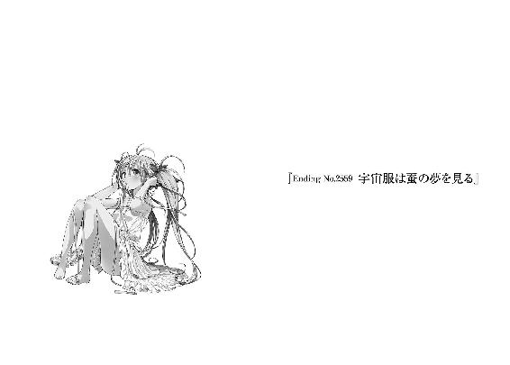
『イトコー、星見るぞ。ほら来ーい』
『首の裏を掴んで引っ張るな、ネコか俺は！』
『イトコはネコほどかわいくねー』
悪かったな、と従妹に引っ張られながら毒づく。毎年の恒例行事として、夏休みに叔母さんの家へ遊びに来ていた。一週間か、長いときは二週間ぐらい、この家に泊まっていく。叔母さん宅は俺の住む町よりずっと都会にあるのに、どこか田舎臭い雰囲気があって、それが妙に居心地が良い。人をからかうのが好きな若い叔母さんに、水色の髪を持つ従妹が、ここにはいる。
そして、町のどこからも見渡せるような、高く、大きいロケットが、ここにはある。
『うぉーい、虫除けしたー？』
叔母さんが廊下の向こうから呼びかけてくる。俺を引っ張る従妹は走りながら、元気いっぱいに振り返る。『だいじょーぶー！』実際のところ、従妹からは虫除けスプレーの匂いなんかしない。だから明日は手足を噛まれて、カユイカユイと困る羽目になるだろう。俺も、だけど。
靴をスーパーいい加減に履いた俺たちが、玄関から庭へと飛び出す。外はすっかり日も暮れて、庭のそこかしこで夏の虫が鳴いている。昼間の蝉とは正反対の、その控えめな音色に聴きいる暇もなく、俺と従妹の運んだ天体望遠鏡が庭に設置された。旧式もいいところな望遠鏡は黄ばんで、真っ白だった胴体には傷もめいっぱいついている。ひぃひぃひぃ......どれだけ昔か知らないけど、親父も祖父ちゃんも会ったことがないくらいのご先祖様が使っていたやつだと、叔母さんが説明してくれたことがある。勿論、叔母さんも会ったことはないんだってさ。
『ほれイトコ、どきなー。後の用意はこの大先生に任せなさい』
胸を張る従妹がふふーん、と得意げに俺を押し退ける。望遠鏡の調整は、こいつしかできないのだ。だからといってその顔はどうだろう、許せるか。ぐりぐりと頭に拳骨をめりこませる。
『なにするか、きちょーな脳細胞が潰れるー』
『そう貴重でもないだろー、いっぱいあるし。それより胞子みたいに髪から光を出すなよ』
『知るか、わたしの意志じゃねー』
身体を捻って俺の拳骨から逃れる。それから従妹は唇を尖らせて、『邪魔すんなよー』と俺に釘を刺してくる。『しねーよ』と無愛想に答えてから、周囲を飛び交う虫を手で払った。
俺たちは毎晩こうして、星を鑑賞する。去年もそうだったし、その前の年もそうだった。
来年もこの家に来たら、きっと同じことをやっているだろう。
『でもほーんと、お前の髪って変わってるよな』
『文句あっかー』
『綺麗だからいいんじゃね？』
『ならよし』
従妹が軽快に頷く。その間もてきぱき手と目は動いて、望遠鏡を調整し続ける。俺たちは星の輝きを求めて毎晩、星空の下に立つ。ただその輝きになにを求めるかで、俺と従妹は少しだけ見ているものが違う。それもまた、星の夢の魅力なんだろうと思う。
振り返ると、夜空にかかる雲と、そして怪物のように広がる大きな影があった。その影は刀の先端みたいな形で夜を呑みこみ、ぐんぐんと、今にも倒れてきそうな存在感がある。
『今日も、ロケットの影に月が隠れてるな』
『ん』
従妹が一瞥して、短く顎を引いた。
俺たちの町にはロケットがある。巨大建造物よりずっと大きい、宇宙へ行く為のロケットだ。それが町の離れにあって、一時期は名物となっていた、らしい。それは俺が生まれるずっと前の話だから、よく知らない。ロケットも二百年以上前に製造して以来、色んな事情からそのまま放置されているだけの代物だ。勝手に整備している物好きがいて、未だに姿が保たれている。
あの夜空を途切れさせるようなロケットが宇宙へ向けて飛び出す日は、これからどれだけ待ってもずっとやってこない。いつかは整備する人もいなくなって、倒れるのが心配だからと解体されて、ロケットはその影もろともどこかへ消えてしまうんだろう。けれどロケットが消えたら、この町そのものまで、どこかへ飛んでいってしまいそうな気がした。
『できたぞイトコ。さー、大先生を賞賛するといい』
『ステキー、リッパー、さっさと場所代われー』
『おー見える見える。いー星が今日も見えとります』
無視しやがった。調整した望遠鏡を覗きこみ、にぃーっと頬を緩める。その表情と望遠鏡を無理に引きはがすことができなくて、俺は頬を掻く。飛び交う虫を手で払い、ジッと待った。
やがて望遠鏡から目を離した従妹は肉眼で空を見上げて、力強く、指差す。
遥か遥か、20光年彼方の星と、夜空を。
望遠鏡の見つめ続ける、ずっと遠くを。
『この方角にずっと、ずーっと進んだら、そこに宇宙人がいるの』
『知ってるよ。星から光信号を送ってるやつらだろ』
それくらいは社会の常識だ。従妹は頷き、目を、星のように輝かせる。
『ウチュージン、会ってみたいなぁ』
従妹は毎晩、いやそれこそことある事に、その夢の滴りを口からこぼす。俺はその度、顎を上げて微かに唇を開いたその横顔に、様々な感情を湧き上がらせる。負の思いはそこになく、けれど善意や好意が混濁したそれは支離滅裂となって俺の頭を苛み、頭痛の種となっている。
無理に呑みこむから余計にグチャグチャになって、どこか、目の端がぼんやりとなる。
ただし、これはいつもの話。
今日こそは、従妹のただ見上げている夢に光を与えたかった。
ロケットの影を背景に背負うようにして。
俺は両腕を広げて、夢の雫を全身で拾い上げるようにして宣言する。
『よし、分かった。俺がロケットを作ってやる』
『ん？』
いきなりの発言に従妹が鈍い反応を見せる。なんだよー、夢を叶えてやるっていうのに。
『俺が光ぐらい速いロケットを作ってだな、お前を宇宙人に会わせてやる。言っておくけどな、そういうロケットは今、本当に開発してるんだぞ。で、宇宙人と会おうって計画もちゃんとあるんだ、研究所のヤシロ先生が言ってたから、あー、まー、嘘じゃないって！』
喋れば喋るほど、嘘臭くなってきた。なにしろヤシロ先生は自称宇宙人で、とにかく胡散臭い話をいっぱい、平気で口にする人だからだ。名前出すんじゃなかった。肝心の従妹はというと、俺の目を正面から見つめて、『ほっほーぅ』と不敵に微笑んでいる。な、なんだその顔は。
『いつ？』
『いつって......そりゃあ、俺とお前が大人になったらだ』
『ほんとかー？ イトコ、そんな頭いいかー？』
ニヤニヤと意地悪く、けれど愛嬌のある笑みを浮かべて顔を覗きこんでくる。期待していないけど心遣いが嬉しいぜ、とでも思っていそうな顔つきに、ふんと鼻で笑う。今に見てろ。
空に流れ星はない。静かにまたたく太古の光だけが、俺たちを淡く映し出す。願いも祈りも聞き入れられず、それなら、本当に自力で成し遂げてみせるぞと、堅く、強く誓う。
『大丈夫だ、問題ない』
『わー、なんか急に嘘臭くなった』
『うっせ。いいか、ちゃんと約束するから聞け』
『んっ』
強い風が吹く。背中を撫でて駆け抜ける追い風だった。その流れに乗るように、俺は言う。
『俺の作ったロケットにお前が乗って、宇宙人に会いに行くんだ。約束だからな、ガーティ』
「まだ帰っていなかったのか、マコト」
長机に頬杖を突いてうたた寝していると、馴染み深い声がして瞼が持ち上がる。自分でも意識していないけど口もとを手の甲で拭って、目もとも指で擦る。それから顔を上げるとまず、休憩室の過剰な明かりが飛びこんできて、思わず目を瞑る。手を顔の前にかざしながら左目だけをうっすらと開けて、今度は光の滝でも流れているような、真っ白の壁に襲われる。寝起きに白色ばかりが俺を攻め立てて、極めつけは声をかけてきたそいつの髪までもが、真っ白だ。
少しサイズの大きい白衣を着たヤシロの姿があった。いつも通り、背景の壁や照明をものともしないほど、本人自身が強く照り輝いている。触れる度、砂になって溶けていきそうな儚い色合い。白い髪、白い肌、小さい体躯。ただ最近は寝不足の所為か、目つきが険しい。
「お前こそ。今日はもう上がるって言ってたじゃないか、昨日も徹夜なんだろ」
「ふはは、引っかかったな。あれは嘘だ」
「誰が得をする嘘なんだ、それ」
俺の向かい側の椅子を乱暴に引っ張り出して腰かけ、机にぐてーっと突っ伏す。伸ばした両腕がカサカサと節足動物の足みたいに動いて薄気味悪い。机に盛り上げられた頬肉がぷっくりとして、触れてみると張りがあって大変に気持ちいい。ヤシロがギロリと、眼球だけ動かす。
「気安く触れるとは良い度胸だな、地球人。その狼藉は後のお前の首を絞めるぞ」
「そうかそうか」
こいつの妄言にもすっかり慣れてしまった。それほど長い付き合いになるとは、誰が想像できただろうか。ヤシロ自身は自称超能力者で予知能力があるので、できたかも知れないが。
カッコ笑い。
「よくそんな電波全開で生きていられるなぁ、感心するよ」
「ふん。何代前か忘れてしまうほど昔の、初代『マコト』も、そんなことを言っていたぞ。名前共々、進歩のない一族だな」
「おいおい、初代って......年齢を詐称するなよ、ヤシロジュニア」
俺もお前も、祖先がいてこそだ。もっともなぜか俺たちは互いに、代々同じ名前を引き継いでいるみたいだが。マコトとヤシロ。漢字こそ違うが、一族全て、読み方が同じ。
「もっとも俺や親父、祖父さんからすればあんたはまるで変化がなくて怖いが。それこそジュニアどころか、本人がずっと歳も食わずに生きているんじゃないかってな」
そう言われると、ヤシロは思わせぶりにニヤリと唇を吊り上げる。まるでそれが本当だとばかりに。突っこまない方が華かね、と目を逸らして、呆れ笑いを浮かべた。
「で、こんなところでなにをしていた？」
ヤシロが突っ伏したまま尋ねてくる。眠いのをごまかしているのか、まばたきの回数が多い。
俺はいい加減、目玉が過剰な光の具合に慣れてきて、両目を開けたままでも平気となった。
「いよいよ明日だからな。少し、考え事をしていた」
「涎を垂らしてぐーすか寝ていたようだが」
「うるさいよ」
手で払う仕草でごまかす。少し昔のことを思い返していただけだが、どこか照れ臭い。感傷的になっているなどと、一般的な感受性の皆無なこいつに指摘された日には泣ける。顔を逸らした先に貼ってあったカレンダーを見ると、明日の日付に赤丸が書きこまれていた。
もう明日となるまで、五時間もない。
俺たちの作ったロケットが、宇宙人へ挨拶に行く日までに。
ここは宇宙人が見守る町の研究所。正確には製造所なのだが、町の連中が研究所と呼び続けた所為で、俺たちまでそう自称するようになってしまった。まぁ研究だって行っているわけだから、嘘ばっかりでもないのだが。ここでは何百年も前から、ロケットの開発と製造を行っている。残念なことに一号機は開発中、どっかの科学者が画期的なエンジンと飛行方法を考案してしまい、完成間近で放棄される羽目となってしまったという歴史がある。それが町にある、建造物と成り果てたロケットだ。それから紆余曲折あって、数百年後。
俺たちの開発したロケットが別国に送られて、そこから、打ち上げられるところまで来た。
明日が始まりだが、今日が最後でもある。あの従妹と、同じ時間の流れにいることが。
椅子の背もたれを軋ませて、天井を見上げる。夜とは思えないほど、人工的な空は明るい。
「宇宙人、かぁ」
「あんな遠くに行かなくとも、ここに宇宙人がいるというのにな」
やれやれ、と肩をすくめるヤシロ。俺はそれに被せるように、やれやれと首を振る。
時は西暦、２５５９年。
人類は五百年以上前に地球外生命体の送るメッセージを受信し、今に至る。20光年も離れた星と、二十年かけてメッセージを送信し合う。そんな気の遠くなるやり取りを何度も続けてきた人類は明日、次のコミュニケーションへの飛躍を試みる。
その星を目指すロケットが明日、地球を発つのだ。人類史上、初めての試み。異星人とのコンタクトを求めて、遥かなる旅路へとおもむくそのメンバーの中に、俺の水色の従妹がいる。
「夢みたいな話だよ、ほんと」
宇宙人みたいだ、とガキの頃から噂されてきた従妹が本物の宇宙人に会いに行くっていうのだから。あっちの星の連中こそビックリするかも知れない。地球って星には、絵に描いたような宇宙人がいたぜ、って。その反応を想像して、くっくっと肩を揺らした。どこにいっても驚かれてばかりだなぁ、あいつは。宇宙規模で珍しいなんて、さすが、俺の従妹だ。
ヤシロが長机の上にあったポットから、コーヒー用の角砂糖を取り出す。それをガジガジと噛んで、「歯に染みるほど甘い」とご満悦に呟く。それを飲みこんでから、俺に尋ねてきた。
「今日は帰らないのか？」
「あぁ、つーか今日も？ 何日、家に帰ってないかな」
ひーふーみー、と指折り数えてみるが指が足りなくなったので諦めた。帰るのが面倒だからと研究所に寝泊まりしてしまうのは悪い癖だと思うが、仕事で怠惰が許されないとどうしても、私生活にしわ寄せが来てしまうのだ。......えぇと、最後に研究所を出たのはいつだったかな。
外の景色を見た日までおぼろげとは、参った。ひーふーみー、と再び数えてみる。
「......あぁ、こっちは思い出せた」
五日前だ。ロケットを見に行った。全部の指を握りしめてできた拳を、天井に向けて掲げる。
そのまま背筋を伸ばして、唸り声をあげて、耳鳴りみたいなものを起こした。
その最中、これからどうしようと考える。のんびりと眠って明日を迎える心境にはとてもなれない。かといってパーッと遊ぶ雰囲気でもないわけで、時間の使い方に悩む。
「おーい、マコトー。彼女から国際電話ー」
研究所の仲間が休憩所に顔を覗かせて、からかうように呼んでくる。
国際電話と聞いてピンとくるものがあった。机を押して立ち上がり、休憩所を出る。ヤシロは机にぐてーっとしたまま、二個目の角砂糖を囓っていた。こちらには見向きもしない。
ヤシロを置いて、廊下を早歩きで進む。同僚は電話の相手が分かっているからか、ニヤニヤとしている。そいつを突き飛ばすように押してから研究室に入り、机に転がっている受話器を取る。二、三度と深呼吸した。かかってくる、となんとなくは予感していたけど、少し緊張。
あー、ごほん。電話の向こう側にまで伝わりそうに、わざとらしく、改まる。それから受け取った受話器を耳に添えて、独特の息づかいを感じて、氷が溶けたように安堵する。
「よぅ」
『おぅ』
短く挨拶する。時差の関係で、『こんばんは』は向こうと一致しないだろう。従妹のどこか機械的で、短音を並べたような声色は大人になってもまったく変わらない。目を壁に向ける。
『イトコ、久しぶり』
「あ？ いや、一週間ぐらい前に話したけどな。まぁいいや、元気か？」
『元気、元気。元気じゃないとロケット乗せてくれないし』
「ん、ならいい。寝過ごして置いていかれるなよ」
つまらない冗談を飛ばすと、従妹はちっとも笑ってくれない。『ん』と普通に返事された。
これだから俺の従妹は。言葉の機微に無頓着だからな、良くも悪くも。
『ワクワクして、あんまり寝られないから大丈夫』
「そか。んー、そか。ロケットが打ち上がってから寝ればいいか」
『ん』
「......あー。で、えぇと、なんだ」
言葉に詰まる。俺から電話をかけたわけじゃないのに、話題を探してしまう。無言のまま居続けるのは、居心地が良いときも、悪いときもある。ただ今は、無言の時間が惜しい。
なぜなら、俺と従妹が同い年であるのは、今日が最後だからだ。
『イトコの方は眠くない？ そっち、もう夜だし。だよね、時差あるから』
「ああ。......今度のお前との時差はこれぐらいで済まないけどな」
光速に限りなく近い速度で宇宙旅行を果たす従妹には、ウラシマ効果が働く。加減速の時間を見積もって、地球側の観測で四十年以上の月日をかけて惑星間を往復してきたとき、現時点では同い年の俺と従妹には大きな年齢差が生じているだろう。俺がヨボヨボのモーロクジジイとして地球にいるか墓の下で眠る一方で、従妹はそれより遥かに若いはずだ。
俺と従妹の時間は、大きく離れる。生きる世界の基本が変わってしまうのだ。
「俺が爺さんのとき、お前はまだ若いわけだ。羨ましいね」
『じゃあイトコも乗るか？』
「......それも悪くないな。けど残念、パスポート更新してないんだ。明日には間に合わない」
そこらへんもウラシマ効果で解決したいところだが、科学はそこまで便利じゃない。万能を目指してひた走っているが、ポケットからタイムマシンを取り出すにはまだ、少し遠い。
『帰ってきたら真っ先に、イトコに会いに行くから』
光速で会いに来るのか？ そんなに速いと、俺のところで止まるのが大変だぜ。
「こっちは四十年以上、きっかり年取ってお爺ちゃんだからな。一目で俺と分かるかね」
『イトコだから分かる。つーか、イトコは元からお爺ちゃんっぽいし』
「どういう意味だこの野郎。そこまで老け顔の自覚はねーぞ」
側に座っていた同僚が、「可哀想......」とぼそぼそ、わざとらしく呟く。おいコラ。明日からは職場内で老け顔キャラに仕立て上げられそうだ。めんどくせぇ、と頭を掻く。
『だから、イトコ』
「なんじゃい」
『帰ってくるまで、生きてて』
痛切な願いが、単音でチクチクと突き刺さる。言葉に詰まり、目を伏せる。
四十数年という時間は、人類の個体にとって決して短い時間じゃない。
これが従妹との今生の別れになるかも知れないのだ。相応の覚悟をしなければいけない。安易に約束などできることではなくて、けれども、それは、約束するしかない願いでもあった。
俺の従妹とロケットが、人類最初の地球産、宇宙人となって帰ってくるときを。
「......ああ、精々健康に気を遣って長生きするさ。お前こそ、宇宙人とは喧嘩するなよ」
『ん』
「よし。俺のロケットをよろしくな、副船長」
『んっ』
短くも馴染み深い返事を最後に、電話を切る。受話器を置いてから、
「着いたら出迎えに行ってやるから。無事に帰って来い」
言い残したその言葉を壁の向こうに呟く。......いや、伝えない方が帰ってきたとき、驚くかも知れない。だから敢えてそれを殊更に告げることはなく、服を整えてから同僚に言う。
「ちょっと出てくるわ」
「偶には家に帰ったら？」
「誰もいない家は帰りづらいんだ。五日も外出してないから、外出るのこわーい」
うそぶき、研究室を出る。
従妹の方は、これから二十年ほど宇宙船の中だ。まぁ船内の体感時間ではもっと短いだろうが、五日よりは長いに決まっている。そのことを思い、廊下を歩き、こんな不健康な生活からおさらばしてやろうと、未だ休憩所で角砂糖を囓っているヤシロを誘った。
「なぁ、ちょっと夜風に当たりに行こうか」
「こんなところは来飽きたぞ」
「いーからいーから」
ヤシロの背中を押して、宇宙船内をカンカンカンと進む。勿論、打ち上がらない方の宇宙船だ。この町の古い象徴とも言えるロケット内部は真っ暗で、懐中電灯の光があっても普通に転びそうだ。けれど子供の頃からずっとここを遊び場にしていた影響か、俺は目を瞑っても船内を滞りなく歩くことができた。従妹もきっと、同じことができるだろう。
発光体のヤシロを先頭にして、ロケットの先端付近まで上る。物好きな連中が趣味代わりに時々整備しているから、ロケットは未だにその姿を保っていた。外面は何度清掃してもすぐ苔だらけとなってモスグリーンに塗装したかのようだが、中は安定している。そうでなければこんな役に立たない代物、とっくに解体されているだろう。
研究所の裏手にあるロケットは、研究員なら一度は上ったことのある場所だった。
「夜に上れるのは、ここで働く人間の特権だよな」
夜景が素敵な場所を知っているんだ、と彼女を誘うにも最高だ。そんな知り合いいないが。
ご先祖様のどなたかはやたらモテたらしいが、それは血を継ぐ内に失われたらしい。
頂上付近から、観光客用にくっつけられたベランダ（？）に出る。ロケットの外面から町を一望できる高見台のようなもので、高所恐怖症なら確実に失神する高さだ。高所故に風が強く、夜風は五月にしては冷たい。床にあぐらをかいて座り、打ち上げ台付近に延々と続く金属板の地面を見下ろす。研究所の明かりによって映し出されたその風景は、昔と寸分違わない。
どこか異世界めいていて。日常とかけ離れていて。
俺と従妹が立ち尽くし、ロケットの打ち上げを夢見ていたあの日のままだ。
「ひょぉぉぉぉー」
隣に立つヤシロが何故か、風の音を真似する。小柄なヤシロはそのまま、風に吹かれて飛んでいってしまいそうである。『ひょぉぉぉぉー』と飛び交うヤシロを想像するのは容易だった。
その後に何事もなく着地する姿も、どうしてか軽く想像できてしまう。
「さっきはあの宇宙人モドキから電話か。ふん、宇宙にちょっと出かけるぐらいで女々しいやつだ。女々という言葉はもっと図々しく強い響きがないといけないのに、困ったものだな」
なにを憤慨しているのか、まったく意味が分かりません。
「......ラァァァァバァァズ、オブ、ロォォォォォストディメンショォォオンズ......」
ヤシロが唐突に歌い始める。歌詞も途中から適当に歌っているようで、風の流れに巻かれたその音はすぐに途切れる。歌い終えてから、ヤシロが「九十点」と採点する。甘い評価だ。
「なんだ、その歌」
「遠く離れた恋人への歌だ」
ふふん、となぜか俺を小馬鹿にしたように笑う。からかっているつもりだろうか。
「......恋人っつーか、あいつは俺にとってガーティだから」
冗談めかして言うと、ヤシロが鼻で笑った。
「エリオットの妹か。なのにお前が飛ばないとは、おかしなものだ」
「へぇ、これを知ってるのか。五百年以上前のお宝映像だぞ、あれ」
「マコトと見たのでな」
どのマコトだよ、と苦笑する。こいつは本当に、時を超えてきたのかも知れないなんて思ってしまう。初代マコトの時代から、子孫をからかい続ける為に？ どれだけ根性悪いんだ。
「打ち上げるロケットの名前はなんだった？」
足もとを鳴らすように、カンカンと踏みながらヤシロが確認するように聞いてくる。
俺は名付け親でありながら一種の照れ隠しに、思い出す素振りを交えて答える。
「プライム」
「センスがないのは一族共通のようだな」
「うるさいよ」
めぼしいのはみんな、先人によって使われていたんだ。大体、ご先祖様のセンスなど知らん。
「しかし宇宙だぜ、宇宙。すげぇなぁ」
「なにが凄い。宇宙などここからでも見えるだろう」
ほれほれ、とヤシロがお星様その他の広がる夜空を指差す。雲が渦巻くように、或いは大型生物の顔を模するように上空を漂っている。青空と比べてどこか遠くに思える、藍色の空。星は雲に隠れて輝きを途切れさせ、代わりに俺の上部で輝くのは、ヤシロの髪だった。
その髪を見上げ、光そのものを送信し続けるヤシロにふと、尋ねる。
「お前は、宇宙のどこからやって来たんだった？」
「ひみちゅだ」
「なにそのムカツク返し」
普段通りの不機嫌そうな面で口にするから、まったくかわいげがないし。
「話す必要のないことはこうごまかせと、メメに教えられた」
「お前の話に時々出てくるけど、そのメメって誰だ？」
「だから、ひみちゅ」
今度はどこか思わせぶりに、楽しげな表情だった。頬も緩くなり、ニッと唇を曲げている。その顔の意味するものや、ヤシロに去来したものを理解することはできず、頬杖を突く。
それからしばらく、二人で夜の町を眺めた。町の外れに位置する研究所に届く、民家の光は乏しい。真っ暗な山の方を見つめていても、影の塊がぼんやり浮かんでいるだけだ。物音も届かず、風の疾走音だけがざわめきのように響く。そしてその風を受けて、ロケットのどこかが軋む。それは、ロケットの鳴き声と揶揄されていた。夜中に鳴き続けるから、この町に住み始めたばかりの人たちは、これを怪談と勘違いする人もいるらしい。ぎぎぎぎ、と今日は少し長く鳴いて、それは首を持ち上げて空を見上げているようにも聞こえた。
「こいつも飛びたいのかな、やっぱり」
こんこん、とロケットを叩く。音は軽快に響いて、玉が跳ねるようだった。手すりを掴んで景色を見つめていたヤシロが俺を見下ろして、「知らん」と冷めた声で答えた。
「マコトは飛ばないのか？」
「飛ぶって？」
「宇宙に決まっているだろう、愚か者」
ヤシロが呆れる。サイズの少し大きい白衣が風でバサバサと揺れて、幽霊のようだった。
「宇宙人モドキと共に飛べばよかったではないか。ボケナスのお前でも、ロケットは差別せずに荷物として運んでくれるのだぞ」
「しっかり区別つけられとるがな。つぅか、まぁ、それも少しは考えたけどな」
だけどそれを悩む為にはそもそも、飛び立てるロケットが必要なわけで。そのロケットを作ることに従事してきたのが俺なのだから、二人存在しなければパラドックスに陥ってしまう。
しかし従妹と約束を交わした俺は、ここに一人しかいない。だったら、これでいいのだ。
無謀にも思えた、それこそ手が届かない空へ走り出そうとするような夢の約束。それが何年も時を経たことで形をまとい、ロケットとして、飛び立つところまでやってきた。
俺はそれを地球から見届ける。俺の借りているアパートには帰りを待つやつがいない。だからどうしても、帰ることを後回しにしてしまう。従妹もそうならないように、俺はここで待つべきなのだ。宇宙人と呼ばれ続けたあいつが、本当に他の星に居着かないように。
「電波女、青春ロケットで飛び立つか」
ヤシロが不可解な内容を口にする。ただそこには何かしら含み、もっと具体的に言うと歳月を感じさせるなにかがあって俺は黙する。星宮ヤシロは本当に、最初から最後まで謎だらけだ。
その謎だらけのこいつがかつて俺に宇宙の魅力を語り、ここまで導いてきた。
自称宇宙人は、飛び立つことのないロケットから見える景色になにを思うのだろうか。
そして明日、宇宙人を求めて発射されるロケットになにを考えるのか。
予知能力者はなにも語らず、ただ、白衣を風に弄ばれる。
翌日、俺は青空の下にいた。風の少し強い日で、白衣の裾がひらひらと踊る。ポケットに手を入れて風に翻弄されるのを防ぎながら、俺は昨夜上ったロケットを、見上げていた。
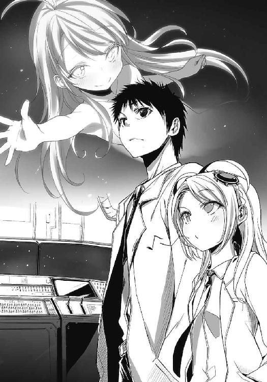
寝不足もいいところだが、不思議と欠伸は出ない。身体は重いけれど、目だけがパリパリに乾いて、じわじわと痛む。白衣に常備している目薬は一滴も残っていなかった。残念。
少なくとも日本は打ち上げ日和のようだ。五月の、半袖が少し恋しくなる陽気な気候に包まれて、空へ向かって飛ぶよりは地面を歩いて日光浴にでも出かけたくなる、そんな日。
俺と従妹が同じ時間の中で生きる、最後の日だ。
どこまでも、水平線の彼方まで伸びていくような連続した金属板の上に昼間の日差しが降り注ぐ。白く塗装された床は光を吸いこみ、淡く反射して目を焼いてくる。視界が上下共に眩しく、目を細めながらもロケットの威圧感は衰えない。子供の時に見上げて、大人になったらこれも大したことない高さに感じられるだろうなぁなんてたかをくくっていたけど、甘かった。
羽のない金属の塊は神様に辿り着こうとする塔のように、高々と俺を見下ろしていた。
「ナ ン ダ、コ ン ナ ト コ ロ ニ イ タ ノ カ」
ぺたぺたと金属板に似つかわしくない足音のそいつが、背後から珍妙な声をかけてきたので振り返る。宇宙服モドキの格好に身を包んで、今からロケットモドキにでも乗りこみそうなそいつは、昨晩に俺と話し込んでいた人物と同一なのであった。うわぁ、久しぶりに見たぞ。
「まだ持ってたのかよ、その服」
「セ イ ソ ウ ダ」
セイソウ？ ああ、正装か。どこのだ。なんのだ。ヘルメットのバイザーが直射日光をバラバラと弾けさせて、直視しづらい。そのままヤシロは俺と少し距離を取り、横に並ぶ。
「ふーっ、暑い」
かぽっとヘルメットを外して、普通の喋り方に戻ったヤシロが息を吐く。ロケット、宇宙服、その異世界のような風貌という三つが合わさって、宇宙からの帰還者みたいだった。
四十数年後の地球で、俺たちはこんな連中を出迎えることになるかも知れない。
「で、なんか用事か？」
「お前は見ないのか？ 丁度今、打ち上げの実況中継に盛り上がっているぞ」
くい、と後ろを親指で指し示す。俺は首だけ振り返って横目で背後を確かめてから、頭を振る。仕事が立て込んでいて伸ばし気味になっていた髪が顔を打ち、風に梳かれる。
「こうして、ロケット見上げている方が臨場感あるよ」
なにしろ今、打ち上げられようとするロケットは目の前の鉄塊を参考にして作り上げられたのだから。見た目だけの話なので、兄弟というほど親密な関係でもないから、さしずめ......イトコ、かね。俺と従妹が同じ人類の骨格をしていながら、中身や外見が別物なように。
「後、どれくらいで発射？」
「数分だな、画面の右端にカウントが表示されていた」
なるほど、と小さく頷く。それからヤシロを一瞥すると、俺同様にロケットを見上げている。慌てて研究所に戻る気はないようだ。まぁ、こいつの場合は『宇宙人が、宇宙に行く場面など珍しがるはずないだろう』と言い出しそうだから、そこには触れない。代わりに、こんな話をしてみる。独り言というか回顧録みたいなもので、大した意味なんかないのだけれど。
「ガキの頃、俺が船長だったよ」
「ん？」
ヤシロが俺を見る。俺はロケットのてっぺんを指差した。先端ではなく、てっぺんだ。
「このロケットの。従妹とロケットの中で暴れて、宇宙旅行に行ったもんだ。で、あいつは副船長で俺が船長だった。ワガママで気の強いあいつがなんで俺に船長を譲ったかっていうと、宇宙人と喋るとき、言葉を勉強するのが面倒だからだってさ。対話は船長の仕事らしい」
肩を揺らす。そんなあいつが今では、俺より言語に精通しているのだからな。何カ国語喋れるのやら。お互い、小学五年生の頃の約束を律儀に守ろうと、人生を費やしてきたわけで。
それがどんな意味を持つのかは、答えはロケットが無事に帰ってくるまでお預けだ。
長い旅になりそうだなぁ。待ちくたびれることは、決してないが。
「まー確かに、ヤシロみたいなやつらばっかりだと話すの大変だわな」
わはは、と冗談めかす。反論が来るかと思ってヤシロの様子を窺うと、顎に手を当てて神妙な顔つきとなっていた。こいつは今、なにを思っているのだろう。そしてこいつは今まで、なにを考えて生きてきたのだろう。側にいた俺だが、正直、一度も理解できたことはない。
また白衣のポケットに手を入れて、遮蔽物がない所為で気ままに吹く風に身を撫でられながら、なにかを待つようにロケットを見上げる。そうしている間に、俺の中でデジタルの時刻が表示される。その数字は当然、少しずつ減っていく。ゼロになるとなにが起こるかは、改めて口にする必要もないだろう。正確な時刻も分からず、いい加減に時は刻まれていく。
そうして、通り抜ける風でロケットの各パーツが軋みを上げたのを見計らったように。
「蚕という虫を知っているか？」
唐突にヤシロが口を開く。カイコ？ 虫、と順々に考えを巡らせ、「ああ」と顎を引く。
「そりゃ知ってるさ。サナギは宇宙船での食事に使われるわけだし」
しかしなんの話だ。俺が少し唐突な話をしたからそのお返しか？ と勘繰っている間に、ヤシロが話の続きを口にする。風で揺れるヤシロの前髪からは、光の粒子が舞い散るようだ。
「あれはな、自力で飛べもしないし、人間が手を加えなければ外で生きることもできない。それなのに羽化するのだ、どうしてだと思う？」
「......さぁな。自然の流れって言えば、それまでなんじゃないか」
地球人が古来からロケットや、星や、宇宙に憧れて飛び立つように。
「そんなことを何百......いや、何年も考えて、ロケットを作るのに協力してやったわけだが」
蚕のことを考えながら宇宙船を作る。外見以外も変なやつだなぁ、と苦笑する。それから、ヤシロはロケットを先程の俺のように指差した。ロケットはそれに応えるように、歌う。
支える鉄骨、交換を求める古めかしいパーツ。駄々っ子のように、愛しく軋みを上げる。
「地球人も蚕と大差ない。空を飛ぶことはできんし、ロケットがなければ宇宙を漂うこともできない。保護された環境の中で、空を飛ぼうとあがく。飛んだところで宇宙に、なにかあるかも分からんというに。蚕も同じだ、飛べたところでなにもないかも知れん。だが、やつらは羽を持って繭から出る。地球人がアホのように、生涯を捧げて、宇宙を夢見るようにだ」
「.............................................」
「だから地球人が持つ宇宙への希望というのはきっと、蚕の夢のようなものなのだ。全ての蚕が空を飛ぶことを願うわけじゃない。飛んだから、なにかがあるわけでもない。だが生き続けているからには、途方もない世界を夢見るのが必然ということだ」
それが、今から飛び立つロケットなのだ。ヤシロは言外にそう語り、俺の視線を自然、目前に見上げる鉄塊へと誘導する。遥か彼方へ飛ぶ、夢見る蚕、か。確かに宇宙空間では、俺たち人間は蚕ぐらい無力なのだろう。蚕が独り立ちできないように。けれど、それでも。
「宇宙服は蚕の夢を見る、だな」
大昔に存在したという本のタイトルをもじって、そんなことを呟いてみる。
「そう。繭は長い時を経て、羽化を待ち続けるのだ」
ヤシロのその同意と共に、減り続けていた時計の数字がすべて、ゼロとなる。
思わずロケットの向こう側、穏やかに続く青空を仰ぎ見た。変化はない。紫外線によって生まれた青空と、風に運ばれていく渡り雲。今にも飛び上がりそうなロケットは、沈黙し続けて。
けれど、俺にとっては今がロケットの発射の瞬間だった。
空想の中で無邪気に飛ばし続けたロケットが今、現実でも従妹を乗せて空を目指す。人類の夢と希望をあの頼りない双肩に担いで、あいつが、宇宙人に会いに行く。
従妹とロケットの周辺を走り回っていた自分を思い出そうとする。けれど、どうしても、うまくいかなかった。もうこの流れから従妹は飛び立ち、独自の時間へと加速していく。
これは宇宙旅行であると同時に、タイムトラベラーとなる瞬間でもあったのだ。
幼少期、想像のままに思い描いた夢がすべて出揃い、叶い。
胸中に残るのは誇りと高揚と、風が少し染みる、寂寥だった。
「......ん」
全てがゼロになった後、俺の中にある時計は『１』を表示する。そして俺がまばたきをしている間に『２』となり、『３』と続く。秒数のカウントはそのまま止まらず、延々と、続く。
ああ、と意味を理解して破顔した。遠い遠い目標に、俺の時間が向かっているのだ。
きっと、このカウントの目指すものは四十年以上。その時に辿り着くまで、デジタルに、俺の時計は動き続ける。数え間違いも不正も許されない。止まらないとは保証の利かない年月だ。
それでも俺は送り出した夢に思いを馳せ、繭に包まれた従妹の羽化を祈る。
彼女の羽が、ただ生えているだけの代物でないことを、願う。
そして。
あいつが俺と同じ時の流れへと帰ってくるまで、ここにいよう。
ロケットと共に、宇宙人が見守る町に。
一際強い風が背後から吹く。白衣の裾がひるがえり、飛べなくなったロケットが鳴く。
彼方のロケットの飛び立つ風が、ここまで届いたのだと思った。
「もうこれ、最終回でいいんじゃね？」
「もうちっとだけ続くんじゃ」
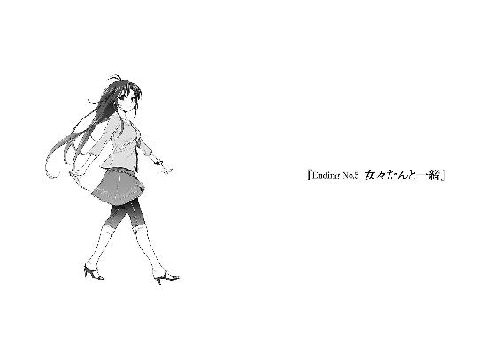
夏休み中、娘は天体観測に忙しくて甥っ子には邪険に扱われてあんまり誰からも相手してもらえなかった夜、化粧台の鏡に向かって『女々た〜ん』と突撃して止まりきれずに額がぶち当たって悶え転がっていた四十歳について言いたいことは山ほどあるけど、厳選した一言だけ。
ねぇよ。
「なぁーんてなー！」
「ぎゃー！」
強制終了を強制的に阻止してきた。いつの間にか横に生まれた（妄想だから、これ）女々さんが俺に、体当たりするように抱きついてくる。頭を抱かれ、腰にぐりぐり指が押し込まれる。
「旦那様は高校生！」
「俺は嫁が四十歳の妖怪なんてお断りだ！」
頬を押して、女々さんを引っ剥がそうとする。もにーっと変形する頬肉が妄想の中では相当柔らかくて、なんだか少し動揺してしまう。が、それはともかく一向に離れない。脳内の存在である以上、俺の願い通りに事が運ぶはずなのに。この人への苦手意識が浸透しすぎて、想像上ですら勝てないことになっているのだろうか。まるで犬の躾である。
「さっきはよくも女々ちんをババァ化したあげく、殺してくれたわねー」
「随所で偲んであげたじゃないですか！」
「ママー、パパー」
「えぇい来るな幻覚！」
隣の部屋から、両手を突き出して幼げに駆けてくるエリオを手で追い払う。エリオはなぜか俺たちの周囲を月かなにかのようにぐるぐる回り出した。水色の粒子が星の如く輝き、雪のように俺たちに降り注ぐ。まるで俺たちを祝福しているようだった。その鱗粉っぽいのを燃やすぞこの野郎。回る度に背丈が小さくなっている気がするし。なんだお前は、バターか。
「うふふー、エリたんったらすっかりパパに懐いちゃってー。ジェラスッィー」
「どういう発音だ！ つーかあんた、人の妄想の中で妄想に浸るな！ 図々しいぞ！」
「私ももうすっかり新妻ねー」
「時の流れに逆らう熟達ぶりを誇らないでくれ！」
さすが妄想の中だぜ、タイムリープも思いのまま！ もっとマシなこと考えろよ。
なにがなんでも離れないようなので、女々さんを押し返すのを諦める。と、女々さんも異様に抱きつくのを中断する。「エリオー、いらっしゃーい」と手招き。「パパー」殴られたいのかこいつは、と普段の身長の半分ぐらいに縮んでいるエリオが飛びついてくる。そのまま俺とエリオがセットで女々さんに抱かれる。うむ、実に暑苦しい。照れているわけではない。
「なんだこの構図」
「いつもの仲良し一家じゃない」
「......いや一家って。あなたたち二人でやってくださいよ」
新婚＋前夫の娘と表現されるより、ほんの少しマシだが。
「大体、どういう生き方すればこんな末路に辿り着くんだ」
「ありのままに振る舞っているとこうなるのよー、ハッピッピー」
女々さんが両手を上げる。そこでようやくハグから解放された。あー、空気が美味い。頑張って呼吸止めていた甲斐があるなぁ。四十歳の叔母の体臭とか嗅いじゃうやつってアレじゃん、終わってるじゃん？
「ハッピッピー」
「復唱するな、小さいの」
小エリオがもぞもぞと動いて、俺の膝の上に収まる。こいつまで娘気取りか！ しかしこちらは四十歳の方と違って無下に追い払いづらい。眼球が水色すぎて、常に潤んでいるように錯覚してしまう所為だろうか。振り向くエリオにジーッと見つめられる。ジーッと。なんだよ。
「パパー、金の延べ棒買ってー」
無表情におねだりしてきた。よく分からないけど言ってみた感が滲み出ていた。
「鼻にでも突っ込んで欲しいのか？」
「パパー、わたし結婚するのー」
「いや、誰とだよ」
それに該当するような男キャラがいたか？
んー、とエリオが腕を組む。人の名前もほとんど覚えないやつが、顔を覚えているのか？
「じゃーイトコと」
「......そこはパパで統一しておくべきだろう、設定的に」
急に現実を思い出し、恥じた。照れも混じって鼻を掻く。
「きゃー、写真見る度に舞い上がっちゃう」
ウキウキと高速に左右にくねり、そのまま分裂でも始めるんじゃねぇのな女々さんが写真立てを机に置く。その枠に収められた写真を一瞥して、俺は『地球滅びないかな』と思った。
「結婚披露宴の写真、ここに飾っちゃおー」
「最近の画像合成の技術は半端じゃないッスね」
感心してしまう。捏造新郎新婦が良い笑顔で映っていた。涙まで浮かべていた。俺は今泣きたい。そんな心境を見透かすように、女々さんが俺の顔を正面から笑う。
「ふふふ、お気に召さないようね」
「ご不満なのは写真の配置とかじゃないですよ」
先制してボケを封じる。女々さんが「ツェッ」と舌打ちを漏らしながら、姿勢を正す。
「こういう未来は迎えたくないと仰る、旦那様」
「迎えたいと仰る旦那様を探してくださいよ」
大人しく膝上に収まっているエリオの頭に手を載せながら、呆れ笑いを浮かべる。
「でもマコ君、他に想像した結末に満足できるやつはあったの？」
「え？ あー、いやー......」
強いて言うならこの町に残り、ひ孫と戯れるやつが、一見理想的な気もするが......あれは老人まで行き着いているからだろうか。悪いことばかり忘れて、いいことにばかり目を向けたからこその満足感、という気もする。これから、がないとこれまで、に縋りたくなるというか。
......などと言っても、今のところの俺は単なる高校二年生なのだ。老人の本当の気持ちなど分からない。そこら辺は女々たんに聞いてくれ、と丸投げしたら問答無用に殴られそうだった。
「刹那的でいいのなら、こういうのはどうかね」
「はい？」
「エリたんが大きくなーれー」
女々さんの呪文っぽい宣言と共に、縮んでいたエリオが巨大化し始める。俺の妄想なのに、なぜこの人が一番自由に振る舞っているのだろう、という疑問に襲われている間にあれやこれやがどうこうなって「もぐー」普段より発育が二割ぐらい増したエリオの胸元に顔を押さえつけられていた。なぜ俺まで操作されているのだ脈絡はどうした、と混乱して、その押しつけているはずの感触は酷く曖昧だった。「小さくなーれー」女々さんの一言によって、再び縮む。
「どう、こういうのはお望みじゃない？」
「望むとか望まないじゃない！ 唐突すぎる！」
「なにおぅ。そんな望みも分からないダメ男なのに女々ちんを否定するのは解せないぜ」
いぜ、いぜと再び飛びかかってくる。「ぎゃー」津波に襲われたようだった。エリオを中心に、俺と女々さんが包むような形になる。エリオほど印象的ではないけれど、落ち着いた藍色の髪が顔を撫でる。ついでに胸も。どーんと顔面に体当たり。.............................................なにもコメントしないでいようと無心でいたが、限界だった。十七歳にはあらゆる意味で限界だ。
「もふー」
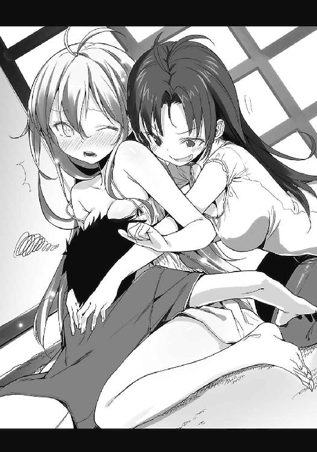
女々さんと俺の間で程良く挟まれているエリオが抗議めいた声をあげる。しかし俺の背中には女々さんの腕が取り憑いていて離れられないし、おっぱいがあれであり、女々さんもぐねぐねとご機嫌に身体をくねらせておっぱいだった。世界が大体おっぱいに埋め尽くされていた。
相手が叔母であるという事実も相まって世界的な常識が曖昧となり、酸欠気味にぐらぐら。
そして確信めいた微笑を口に浮かべ、目もとだけが悪戯めいて、ギラギラと輝く女々さんが俺の顔を覗く。何故だろう、ぼやける俺の視界の中で、女々さんの髪が光り輝いた気がした。
新妻効果であるとは死んでも認めたくなかった。
「ふっふ、このエンディングも悪くないでしょう？」
「.............................................」
そんなわけない、と言えない自分は愚かで、刹那的で、十七歳だった。
しかしまぁ、アレだ。一番危惧する、というか問題なのは。
『これ』が、俺を取り巻く現実と大して変わってないということなのだろう。
現実が悪夢さえも侵食している事実に、妄想の終焉を垣間見た。
「のわぁぁぁぁぁぁぁ！」
「マコ君君うるさい」
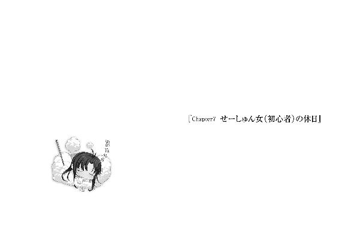
「......なぁーんてな」
取り留めもない妄想を打ち切って、現実を見据える。女々さんの所為で一気に冷めた。
現実のゲーム画面では、マコ君君が麻痺して敵にボコボコに殴られていた。エリオが操作する頼もしい味方連中は普通に主人公を無視して、敵を全滅させようと戦闘を継続している。
俺に私怨でもあるのか、こいつ。などと横目でエリオを確かめると、ボタン連打していた。おい、たたかうのコマンド以外を選ぶのが面倒で主人公を見殺しにしているんじゃないだろうな。マコ君君がやられても狂ったように攻撃を続ける愉快な仲間によって、戦闘は終わった。
「あ、生き返らせるアイテムがない」
「引き返すのか？」
「涙を呑んで前進」
「うわー、皆さん良いフォームで全力疾走してらっしゃる」
置き去りにされたマコ君君はどうなるのだろう。昨今のゲームでは、死んだ仲間を棺桶に入れて引きずるとかしてくれないのか。主人公不在でも話が滞らないのもどうかと思うし。
「あ、マコ君君がいないからピンチ」
次に遭遇した敵に人数差で押し切られて、残った仲間もボコボコにされている。そこでようやくボタン連打を止めたエリオが回復を行い、味方の状況を改善しようと頭を動かし始める。
いやおせーよ、マコ君君が危険になった段階で助けてやれよ。などと主人公贔屓の視点で画面を眺めているのも、中々に面白いものだ。目の焦点を少しぼやかして、頬杖を突いて。
「......ふぅ」
時空を越えた大冒険を四つか五つほどくぐり抜けて、脳が酷使に悲鳴をあげている。我ながら長々と、よくもまぁここまで空想に浸れるものだ。特に最後のやつはかっ飛びすぎている。ひ孫どころか孫も子供も嫁も彼女もいない高校二年生から、なぜ穏やかで幻想的な老後まで思いを馳せることができるかな。え、最後は女々たんとの新婚生活？ なにを仰っているのか理解できない。そんなものはなかった、それで丸く収まるのだからいいじゃないか。
女々さんはともかく、今回はちょっとばかり妄想が激しすぎた。誰かに電波でも送られたんじゃないかと疑うほどだが、単に俺の青春ポイントが空っぽだから、それの埋め合わせとして謎の機能が至れり尽くせりしてくれただけかも知れない。大きなお世話だありがとう。
大まかな三本の柱を思い浮かべる。
ゲーム的に捉えると、前川さんルート。リュウシさんルートに、そしてエリオルートというところか。俺が踏みこんだことで相手との関係は大きく変化して、周囲も変動してしまって。
どの可能性に至っても、必ずなにかを失っている。今、俺の周囲にあるなにかを。
それが現実的に当たり前のことであるからこそ、俺は、目を塞ぎたくなる。
ここからの選択に。どこをどう進んでも、『今』を失うことに。
なにも失わないでいられるこの満たされた時間は、いつまで続けられるのだろう。
こういう時間がずっと続くのが、俺の理想でもあるのかなぁ。なんて、思ってしまう。
「ん、電話......鳴ってるな」
二階の俺の部屋に置きっぱなしの携帯電話が、初期登録から変更していない電子音を奏でて『早く出ろよ』と催促している。ソファから腰を上げて、駆け足で階段へ向かった。急いでも間に合うか微妙だが、取り敢えず走る。着信音が途切れないから、メールではなく通話のようだ。となるとかけてきたお相手は、大体予想がつく。やっちゅーに強化月間の終わった人だ。
階段を駆け上がり、自分の部屋に飛びこむ。机の上で微弱に震えている携帯電話を、白球を滑りこみでグラブに収める高校球児ばりの勢いで掴む。勢いよすぎて机の脚に腕をぶつけた。勢いは止まらず肩が衝突し、最後に背中を打ちつけた。自分が本物のアホであると、これだけの短い間に三度も証明したのは恐らく、今回が初めてだった。
「ぴきぃ、ぴきぃぃぃぃ」
絨毯の上で海老反りとなって、痺れるほどの激痛に悶える。でも電話が鳴り止むと困るので、転げ回りながら通話ボタンを押して、耳に添える。そこまで来たのなら悲鳴や苦痛の訴えを我慢しようとしたが、下唇を噛んでも押さえきれなかった。背筋を伸ばし、元気よく、
「ぐげぇえええ」
『お、おぉ？ どうしたにわ君、日本語でオートーせよ！』
声の主はやはりリュウシさんだった。応答を求められたので、絨毯に爪を突き立てて苦悶を押さえようと試みる。ぜぇはぁと荒い息をリアルタイムでリュウシさんにお届けしていると、『悪戯電話ごっこ？』と暢気な声で誤解されてしまった。変質者と呼ばれないだけマシか。
「ふぅ、ひぃ......あ、どーも。丹羽真です」
『これはこれはご丁寧に。御船流子さんです』
思わず記憶が冒頭に戻ってしまった。どーもどーもと電話の向こうに頭を下げて、さて。
大学生ではなく、髪も伸ばしていないリュウシさんである。流子とか呼ばないようにしよう。
『ところでリュウコやっちゅーに』
「あれ、強化月間終わったんじゃないの？」
『くっくっく、にわ君、あたしがこれぐらい見抜けないとでも思ったかね！』
ズビシ、と効果音つきだったので恐らく、指差しポーズを取っているのだろう。
『知っているぞー、にわ君のケータイには今、リュウシさんと表示されていたのだ！』
「いやいや、これ、リュウシさんが本名の方を登録したんじゃなかった？」
『あれー、そうだっけ？ じゃー、ちゅーか今リュウシって言ったじゃん。つまりさっきのは未来やっちゅーになのですよ、うむ。将来に起こりうるやっちゅーにを予測したのです』
一方的に納得されてしまったのでコメントしづらい。語り得ぬことにはなんとやら、ということで黙しておいた。その間にリュウシさんが話を先に進める。
『というわけでご挨拶終わり。にわ君、こんち。元気？ 最初は凄い声あげてたけど』
「それだけ声が出れば元気ってものですよ、多分。で、今日はどうしたの？ 用事？」
『うんまー。明日はお暇かなーと』
明日、日曜日に女子から誘いをかけられて断る青春男などいない。妄想ポイントなど上限を突き抜けるように溜め込んでいる場合ではないのだ。座り直して、「余裕ッス」と答える。
『相変わらず頼もしいにわ君ですな。しかし、ここからがびっくりショーなのですが！』
「は？ ぱちぱちぱち」
なにやら隠し芸でも披露して貰えるのかと思い、口だけ拍手。
『間違えたサプライズショー！』
意味は同じだけどニュアンスが随分と違うな。ふむふむと相づちを打つと、リュウシさんが『けほんけほん』と咳払いを挟む。必要以上に埃っぽい咳だな、とどうでもいいことに着目しながら、リュウシさんの次なる言葉を待った。数秒待たされた。そして甲高い声が届く。
『今回は藤和さん的なものも、こう、いかがかなーと！』
「藤和さん、的なの？」
床を見下ろし、一階でゲームと向き合う半スマキンを連想する。回りくどいが、リュウシさんが考える藤和さん的なものはやつしかいないはずだ。女々さんはモチモチ先生らしいので。
「つまりエリオも誘っているってこと？」
確かにビックリするというか、珍しいなぁと笑ってしまうけれど。
『そ、そういう解釈をにわ君がしたいならすればいいじゃない、ぷんっ』
「んじゃあ、する」
『えー、反応が素直すぎるぜにわくーん。リュウコさん、赤っ面に蜂しちゃうよ』
なんだそれは。刺されてますます赤くなると言いたいのだろうか。痛いだけではないか。
『後は前川さんも誘って、ご飯とかカラオケなんか、行けばいいかなーって』
「親睦会みたいなもの？ この間の文化祭が終わった後にやったやつみたいな」
あれは胃が痛くなる展開ばかりだったが。主に星中周りが原因で。いや、参ったぜ。
『むぅ......むむぅ』
「なに唸ってるの？」
『にわ君がー、にわちとか呼ばれててー、マジにわ君だったからー』
「あの、仰っている意味が今一つ理解できません」
とにかく今、本人に聞いてみるよ。そう告げて電話は繋いだまま階段を下りて、居間に戻る。エリオがまたボタン連打に明け暮れていた。同じ場所で戦闘を繰り返し、レベル上げに勤しんでいたようだ。それならマコ君君を復活させてから行えよ、と扱いのぞんざいさに心が泣いた。
「あ、イトコ帰ってきた」
エリオが嬉々としてボタン連打を終える。そして、次の場面へマコ君君以外を操作する。
どうも俺が帰ってくるまで、物語を進行させないようにしていたらしい。現実のマコ君君に対しては寛容のようだ。うぅむ、かわいいぞ娘。......じゃなくて。電話を少し、顔から離す。
「エリオ、明日って店番あったか？」
「毎日ある。わたし、きゃりあうーまん」
むん、と腕を曲げてたくましい二の腕を自己主張してくる。悲しいほど筋肉ないが。
「田村商店は年中無休。いつでもいこー、田村商店」
「宣伝ご苦労。そうか、残念だな」
「ん？」
エリオが俺の手もとの電話に注目しながら首を傾げる。聞いたら、どう反応するかね。
「実はだな、リュウシさんが一緒に遊ぼうってお前を誘っているんだが」
「行く！」
即座にゲーム機の電源を切って、布団から飛び出してきた。すてててと駆け寄ってくる。
あまりの食いつきのよさに面食らってしまう。ついでに電話の向こうから『やっちゅーに』と訂正を求める声が微かに聞こえてくる。今日もリュウシさんのセンサーは絶好調のようだ。
「いや、明日の話だぞ」
「え、あー、ゲーム......」
セーブもせずに切ってしまったことを後悔するように、テレビ画面を振り返る。相手の勘違いとはいえ、なんだか罪悪感。しかしエリオはめげずに、グッと握り拳を掲げてくる。
「と、とにかく行く。わたし、なんとかリュウシと、イトコと遊ぶ」
「前川さんもいるぞ」
「なんとか前川も！」
なんとかの位置がおかしいが、意気込みは伝わってくるのでここでの訂正は省く。
「でもお前、店番あるんだろ？」
あまりに嬉しそうなので少し意地悪してみる。実際、事情を素直に話せば田村さんは『来なくていいさ』とエリオを許すだろう。感覚としては未だ、子供のお手伝いに近いからな。
しかし最近のエリオは小賢しかった。本人なりに険しい表情となって額を押さえる。
「う、頭が痛い。急に知恵熱出た」
「頭の仮病は止めとけ。田村さんに頭を小突かれるから」
「け、仮病じゃないし。本病だし」
そんな日本語あるのか？ と少々疑問だがとにかく、本人は行く気に満ち溢れた様子。
電話を耳もとに戻して、『やちゅーにやちゅーに』と突っこむ練習を繰り返しているリュウシさんに返事をする。まぁ、確認取るまでもないことを俺たちも回りくどいよな。ほんと。
「来るってさ」
『はぅ！ よ、よーし。鬼の首を取ったぞー！』
「いや凄い誤用になってるから、それ」
『で、では明日！ あ、前川さんはあたしから誘っておくので、えぇと、やっちゅーに！』
締めの台詞に迷った挙げ句、出たのは練習の成果のようだった。なんでやっちゅーに。
電話を切ってから、すぐ側にあったエリオの頭を撫でる。くすぐったそうに身を捩った。
「よかったな」
「もふ」
「だから、布団巻いてないだろうが」
指摘するとなぜか、いそいそと布団を上半身に巻き直した。そしてそのまま立ち上がり、ふらふらと居間の中を歩き回る。それが踊っているのだと気づいて、自然、呆れ顔になる。
「もーふーふー、もふもーもふもふふー、もーもーもふもふふー」
「なぜ布団を巻いてから踊る」
いやまぁ、布団なしで活発に踊り回るのはエリオらしくないけど。そもそもそのらしさが必要なのか？ と大げさなほど首を傾げる。と、傾げた視界になにかが映る。
「マコ君、チョイチョイ」
廊下の端から顔を半分だけ出して手招きする女々さんがいた。いつの間に帰ってきていたのだろう。呼ばれているのでしっかりと警戒しながら近寄る。不意に飛んだり跳ねたりは当たり前で、増殖や合体も覚悟しなければいけないからなぁ。俺の叔母にも困ったものだぜ。
「なんですか？」
「リアル女々ちんの出番まだ？」
なんでリアルじゃない方を把握しているんだ、妖怪。
「次回に期待しましょう」
「うばー」
あ、女々ちんが廊下に溶けた。そして娘は踊る。ぐねぐねと踊る。楽しそうだな、あいつ。
やつもそろそろ、青春ポイントの概念を伝授しても機能するかも知れない。
「次回なぞ待てるかー。出番作るー」
あ、液状女々ちんが固体化した。にゅるにゅる生えて、何事もなく復活する。キメェ。
「どうでもいいけど、女々ちんと女々たんの統一とかしないんですか？」
心底どうでもいい指摘は、心の底からどうでもよさそうな扱いをされた。全面無視である。女々さんは年甲斐のないスキップ混じりでエリオ、というかスマキンへ近寄る。遠慮なく、布団の上から抱きしめた。「もふー」と抗議なのか驚きなのか判別つかない鳴き声をあげるエリオを目一杯抱きすくめながら、女々さんが「ねぇエリちゃん」と猫撫で声で話しかける。
女々さんの提案は、意外というか、自然な流れというべきか。
とにもかくにも、エリオの『せーしゅんおんな』化に伴う変化であることは、間違いない。
「あなた、携帯電話とか欲しくない？」
「もふー」
どっちか読み取れても、なんか腹が立った。
「お、おー。ビビビ」
「なんでお前自身が電波を発しているんだ」
白い棚に飾られた無数の携帯電話を前にして、エリオがテンパる。目が泳いでいた。携帯ショップの異様に明るい内装と、けたたましく鳴る音楽にも翻弄されているようで、俺の腕にしがみつくようにして半身を隠している。制服に身を包んだ店員さんはそんなエリオの放つ、超常的な粒子に圧倒されて、なかなか近寄ってこない。仕方なく、俺が店員代わりというわけだ。
「で、どれがいいんだ？」
「い、一番いいのを頼む」
「一番ぐらい自分で決めろ」
ほれよく見て、と肩を押して促す。エリオは恐る恐るとばかりに、俺の背中から離れないようにして棚を覗く。「びびびび」また電波を発する。ジーッと、電話の画面を見つめている。しかし見ているだけで電話同士を比較するとか、デザインに目を向けるようなことはなさそうだ。
エリオの携帯電話選びは、どうやら難航しそうだった。店員さんに詳しい説明を受けても、人見知りの激しいエリオではむしろ混乱を招きかねない。はぁ、と溜息が漏れる。
「......興味ない買い物に付き合うお父さんって、こんな気分？」
認めたくねーけど。
女々さんは少し距離を置いて微笑んでいる。黙っていれば母親として立派そうなのに。
「エリたーん、メールは一日百通送るからねー。主に仕事の愚痴を！（くわっ）」
「娘をノイローゼにでもしたいのか」
目を見開いたまま、ぶんすか手を振っている。母として立派でも、大人として終わり気味だからなぁ、この人。±ゼロだ。むしろ±ゼロで済んでいることの方が奇跡かも知れない。
「しかし埒があかん。なにか欲しい機能とかあるのか？」
要望を伺って、選択を絞ろうとする。エリオはピースマークを作るように指を立てる。
「め、メールできるやつ。あと電話できるやつ」
「その二つの機能がない携帯電話なんて、今時あるのかね」
安心しろ、全部あるからと棚全体を一通り指差す。「う、うー」とエリオが怯む。状況はまるで進展する気配がない。
「こうなりゃ色で選べ。好きな色はなんだ」
赤、緑、黄と適当に手に取ってみる。エリオが俺の手にある携帯電話を見つめて、「信号機」と呟く。ぴ、ぴ、ぴと一つずつ、取り敢えず指差しているといった様子だ。もういっそのこと、これにしろと強く勧めればその電話に決めてしまいそうな気がする。でもそれはちょっとなぁ。
やがてエリオが顔を上げて、なぜか俺の鼻を指で突いてきた。思いの外、爪が深く刺さった。
「なにがしたいんだ、お前は」
「イトコの電話、何色？」
「あ？ 白だけど」
「じゃ、じゃーそれ。イトコとお揃いにする」
「......主体性のないやつだな、いいけど」
お前は水色の方が統一感出ていいんじゃないか、と言いかけたが本人の好きにさせておくことにした。白の携帯電話を棚から適当に取る。店員に尋ねるまでもなく、これにもメールと電話の機能が備わっていることだろう。爪で刺された鼻を擦りながら、エリオに電話を渡す。
「これでいいか？」
「ん」
天から降る雨粒でも受け止めるように、両手のひらで携帯電話を受け取るエリオ。
「ちなみに女々ちんの電話はマッキッキです」
四十歳が気づかない間に隣に立って、バナナ色の携帯電話をかざしてくる。銀色のアクセサリーが山ほどくっついている上に、鈴が二つ三つとぶら下がっていて、振るとジャラジャラと大変に騒々しい。女々さんを象徴するようであった。
「女々ちんもマコ君やエリたんとお揃いにしちゃおうかしら。ほら女々たんって純白のびちょうじょだから、やっぱり清純派の白かなーって最近思うしー」
「そんな鮮やかな黄色より、日に焼けて変色したような黄色が一番似合ってますよ」
言ったらふぎぎぎ、と頬を摘まれた。しかもそのまま引っ張られて、店員さんと話し始める。
「これ契約したいんですけどー」
「ふぎー」
エリオは人の引っ張られる頬になど無関心で、少々挙動不審になりながらも白い携帯電話を掲げる。今まで面食らっていた店員さんは間近のエリオの粒子に、一層目を丸くする。それでも仕事を果たそうと、客用窓口のカウンターの方に付き添う。
そのエリオの背中を見送り、女々さんがふと真顔に戻って、感慨深そうに口を開いた。
「エリオも、携帯電話が必要になったのよね」
「......ですね」
「あーん、これもマコ君と私のラブパワーの成果なのねー」
「ギャー！ エンディングナンバー５が襲ってくる！」
逃げ回って走って、店員に思い切り怒られた。女々さんと一緒に。これではまるで、エリオが保護者のようであった。そのエリオは黙々と、契約書に氏名等を記入していた。
契約書に一応、保護者である女々さんも記入を終えて手続き完了し、携帯電話を購入する。
「イトコとお母さんの番号入れる」
「店の中でかよ。まぁ、いいけど」
エリオが箱から引っ張り出した携帯電話の番号にかけて、代わりに登録してやる。
「俺の名前はなんて登録しておくんだ？」
「イトコ」
「そのまんまだな。女々さんは？」
「お母さん」
「女々ちんとか女々たんとか謎の美少女でもいいのよ、あらゆる選択は自由だわ、エリオ！」
いつも通りとち狂っている女々さんは無視し、浮かれるエリオの背中を押して、携帯ショップを後にした。エリオがぺたぺたと携帯電話を触り、画面を次々に変えていく。
外の歩道へ出てから、エリオがすてててと向かい側の進学塾の前まで走っていく。そこで携帯電話を用意し、ゲームのコントローラーでも扱うように、人差し指で操作を始める。
なにがやりたいのか察しがついたので、女々さんと顔を見合わせて笑いながら待った。
不慣れな手つきで操作し終えたのか、エリオが真新しい携帯電話を耳もとに添える。頬は上気したように赤みがさして、目も爛々と輝いて、俺たちを見つめていた。その髪から溢れる粒子が真っ白な携帯電話を覆って、結局、何色を手にしたとしても水色に染めてしまう。
「お」鳴ったのは俺の携帯電話だった。「女々たんはー？」次にかかってくるでしょう、と適当に受け流して電話の液晶を見る。登録したばかりの『エリオ』という三文字が浮かび上がり、安っぽい電子音は、そのままエリオの呼び声のようでもあった。エリオが、ジッと俺を待つ。
通話ボタンを押して、電話に出る。エリオの声は電話と向かい側、両方からステレオで俺の鼓膜を揺さぶった。元からどこか電子音めいたその甲高い声が、氷上を踊るように跳ねる。
『「もしもし、藤和エリオです」』
この繋がりが生まれるまでの過程と選択を様々に振り返り、「おぅ」と返事する。
今度の電波は、俺にもちゃんと届いた。
さて、翌日。日曜日であり、早秋ともいうべき空気が美味しい昼前。
「なんとかリュウシたち、来た？」
「来てない。つーか自分で確かめろよ」
「お、恐れ多い」
なにがだ。俺の背中に隠れて顔も出そうとしないエリオに呆れる。まぁしかし、布団を巻いてこなかったことについては評価しよう。女々さんがあれもいいこれもいい、と様々な余所行きの服を着せていたから、布団に手を伸ばす暇がなかっただけかも知れないが。
そのような経緯もあって、本日のエリオは妙に着飾ってふわふわした格好に収まっている。髪型もごってごてに盛られて凝った飴細工のようであり、様々な意味でちょっとそこらへんにはいない美少女として注目されている。それを背中に貼りつけている俺も、まぁそれなりに。相乗効果で微イケメン扱いとかされませんかね。
「今日来るのはなんとかリュウシと、なんとか......」
「前川さん」
「なんとか前川」
「前川は名字だから、なんとかをつける場所がおかしい」
「前川なんとか」
「うむ」
俺にとっても前川なんとかなのであった。そのなんとかが解消される日は来るのだろうか。
「......しかし、なんか懐かしいな」
リュウシさんが指定してきた集合場所は、駅のタクシー乗り場の側。俺とリュウシさんが最初にデートした日、待ち合わせに使った所だ。当時はここぐらいしかこの町を知らなかった。
今はあの時より少しだけ、この町を知っている。
「あ、メール」
エリオが携帯電話を素早く構える。鞄の類を持とうとしないこいつは、朝から携帯電話を握りっぱなしだ。手が汗で滑らないのかね、とは思うが本人は一向に構わず手放そうとしない。
「お母さんからだ」
「そりゃ、なぁ。そうだろ」
お前の携帯電話の番号を知っているやつが、俺と女々さんしかいないのだから。エリオが不慣れな手つきで操作して、メールの文面を開く。大して興味はないが俺も覗いてみる。
『どの角度の女々ちんが一番写真映えしてる？』
次々に様々な角度から撮影された女々さんの画像データが送られてきた。特定の漫画雑誌の巻頭を飾るグラビアページより枚数が多かった。あんたこの為に娘に携帯電話を買ったのか？
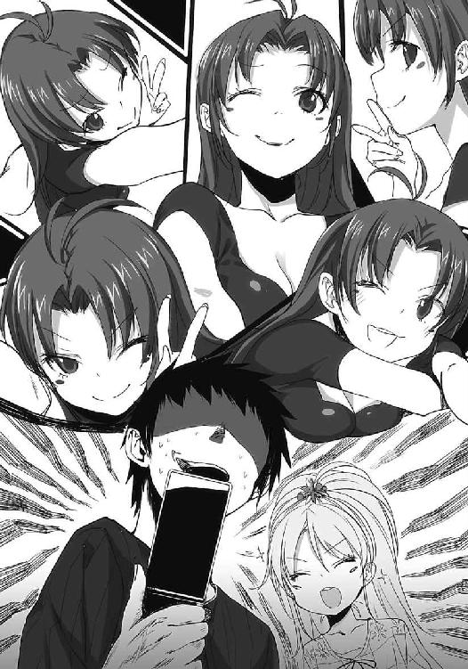
「イトコ、どのお母さんが好き？」
「俺に意見を求めるな、頭痛がしてくる」
むー、と生真面目に写真を見比べるエリオを放っておいて、向かいのビルを見上げた。少し曇り気味の空模様で直射日光は届かず、気候の面では過ごしやすい一日になりそうだった。
そうしている間に、背後で自転車のタイヤにブレーキのかかる音がした。次いで、声。
「随分と早いね、転校生ズ」
「複数形なのはいささか変、じゃあ......」
振り返って絶句。エリオも口を半開きにして、ぽかんとしている。聞き慣れた声から合流したのが前たんもとい、前川さんであることは明白だった。しかし、格好がこれまた珍妙だ。
「おっと、交流の際にチョコはいらないよ。私はどちらかというと、和菓子派なんだ」
ははは、とおどける前川さんの本日の着ぐるみは、地球外生命体だった。自転車で空を飛んじゃうアレである。イーチーである。......デケェー。日本式のＥ．Ｔ．縦長すぎる。しかもエリオット少年に頼らず、ちゃんと自分で自転車に乗っている。中身の顔つきも偉く男前だ。
「今日は藤和が来るというから、そういう趣向で決めてみたよ」
「う、うん。ほらエリオ、ご挨拶なさい」
動揺して保護者風に振る舞い、エリオを差し出す。エリオは露骨にびくつきながらも、人差し指をそっと前へ突き出す。前川さんも主旨に気づいたのか、同じく人差し指を前へ。道行く人が、なんだなんだと騒ぎ出している中で、二人は人差し指の先端を合わせようと試みる。
ピカー、と光は発しなかったが、見事に人差し指が合わさった。二人のＥ．Ｔ．の邂逅に頬を涙で濡らす、やつがいるのだろうか。儀式でも終わったように二人の指は離れて、「さてと」と前川さんが周囲を見回す。駐輪場を探しているようだ。ちなみに俺たちはいつも通り、エリオが籠に乗って、自転車を俺がこいで、という分担でやって来た。......分担？
「ちょっと自転車停めてくるよー」
爽やかに言い放ったＥ．Ｔ．が空も飛ばず、普通に車輪を回して駐輪場へ行ってしまう。人差し指ごっこで親睦を深めたはずのエリオは一層、俺を壁として隠れてしまった。
「なんとか前川、いつもあんな格好してるの？」
「......本人に聞いてみろよ」
あ、戻ってきた。てってってと小走りするイーチーとは貴重な映像である。だるんだるんの頭の皮の部分は暑苦しいのか、フードのように外して艶やかな黒髪を表に晒していた。
「改めておはよう、藤和とは文化祭以来かな」
「ち、地球人代表の丹羽真です、よろしく」
イーチーさんに挨拶されたので恐縮してしまう。エリオも「お、おっす」と無理に親しみを狙おうとして若干痛々しく挨拶を図る。前川さんはそれを受けて、小川の清流のように穏やかに微笑む。やたら縦に長いイーチー胴体さえなければ、凄く絵になるというのに。
ああでも、こういう長所を打ち消して平気でいる前川さんはなんだか懐かしい。最近はコスプレ姿もご無沙汰だったからな。妄想の中では世界一かわいいシロクマになっていたけど。
「かしこまらなくてもいいじゃないか。リュウシはまだみたいだね」
「ま、前川なんとか」
勇気を振り絞るようにエリオが、前川さんに話しかける。俺の腕の影から。取って食うような人じゃないのになぁ、前川さん。威圧感あれども、単純に喧嘩したら間違いなく負けるし。
「なんだい？」
前川さんが膝を屈めて、エリオと目線を合わせる。エリオは「う、うー」とへっぴり腰になりながら、握っている携帯電話を掲げた。前川さんが目を細めて睨み、前髪を手で押さえて、顔を間近に寄せることでようやく判別する。視力は低いんだったかな、この人。
「おや携帯電話。藤和も持っていたのかい」
「き、昨日買った。で、番号、交換」
「私の番号？ いいよ、登録しておこう。ああ、そういえば昨日はほとんど初めてかな、リュウシからメールが来てね、最初は誰からのメールかと思ってしまったよ」
話ついでに携帯電話を操作して、エリオの番号に電話をかける前川さん。それと対照的に真剣な面持ちで電話と向き合い、番号登録に望んでいるエリオ。初々しいというか、雛鳥を見守る気分だ。番号交換が終わるまでジッと目が離せず、「はいできた」と前川さんが言った後も肩が重くなってしまった。エリオの緊張が移ったかな、と悟られないように照れて、首を掻いた。
それから数分、三人で道路を挟んだ向こう側をぼんやり眺めていると、見慣れた人影がてってこと駆けてくるのが分かった。今日は帽子を被っていないようで、髪と鞄といわゆる、上半身の夢が揺れている。地球と男子高校生に優しい、理想的フルーツストである。
「あ、来た。リュウシさんだ」
こんな小声でも、耳を澄ませばやっちゅーに、と突っこんでいそうである。
いつぞやのようにヘルメットで髪のセットが台無しになることを危惧してか、自前の足で駆けてきたリュウシさんが姿を現す。今回は道路の信号待ちに引っかからず、全力で走ってきた。
青信号でも左右確認しないと危ないのに、と見守っていると無事に道路を渡り終えて、手をぶんぶんと振ってくる。それに釣られたようにエリオが俺の背中から顔を出して、リュウシさんと目を合わせる。そこで二人の間になにが芽生えたか知らないが、ほぼ同時に相手を呼んだ。
「と、藤和さーん！」
「な、なんとかリュウシー！」
俺の背中から離れて、すてててとエリオが走っていく。ああ、なんかこう......なんだ、娘が余所の親に懐いてしまう寂寥感というか。いや、意味分からんけど。二人は両手を意味不明に上げて、胴体を突き出すような形で駆け寄る。そしてそのまま正面衝突を果たした。
「どーん！」
「ど、どーん！」
なぜ体当たりする。二人はそのままどーんどーんとぶつかりながら、徐々にこっちへ向かってくる。エリオが押し負けているわけで、つまりリュウシさんの方が以下略。フルーツストなのになぁ。やっぱり甘いものは別腹だからかなぁ、フルーツスト。いや深い意味ナイデスヨ。
「わっ」
前川さんが腰を曲げて、唐突に顔を覗きこんできた。宇宙人の面を後頭部に垂れ下げているので、二重の意味で驚く。エイリアン前川が肩を揺らして、俺をからかうように唇を曲げる。
「藤和が側から離れて寂しそうじゃないか」
「いやぁ、別に」
親離れ的ではあるが。まぁ、いいんじゃないかな。多分。寂しくはないだろう、うん。
前川さんがニヤニヤと笑っているので居心地悪い。と、その身体が柳の葉のように揺らめく。
「どーん」
なぜかぶつかってきた。突然のことだったからよろめいた。前川さんが。いやいや。
「転校生を慰めてあげようと思ってね」
「俺の顔のどこかがぶつかり稽古を求めていると？」
返事はなく、ふふんとなにもかもお見通しとばかりに前川さんが笑う。いや見通せてないよ。
「ふぅ、いい汗かいたぜ」
どーんが終わって俺たちの前にやってきたリュウシさんが、額を拭う仕草を取る。エリオの方は「ど、どーん」となんでか俺に体当たりしてきた。親愛の情とコミュニケーション、どちらに対しても適切な振る舞いではないとお見受けするのだが。人真似が好きだからな、こいつ。
無垢だから人の影響を受けやすい、ということなのか。困ったものだ、嘘を吹きこみにくい。
「おっす、きみにわ君」
某大作漫画の主人公（ただしアニメ版）を真似たような挨拶で、リュウシさんが挙手。「オス」と朗らかに手を上げ返して、「にひ」といつもの笑顔を頂戴する。
「おやおや、私に挨拶はないのかい？」
俺の隣に立つ存在感抜群のイーチーがニヤニヤと指摘する。リュウシさんは今頃、その格好に気づいたのか一目見た瞬間、「ぬわ！」と飛び跳ねる。本物の地球外生命体との初遭遇における衝撃にも劣らないであろう、秀逸な驚き方だった。バスケ部だからか、跳躍力も申し分ない。
「前川さんってば、また強烈なお召し物で」
「リュウシこそ、今日は随分とかわいい服を選んだようだね」
「りゅ、リュウコやっちゅーに！ そんなことないっちゅーに！」
リュウシさんがイーチー前川にくってかかる。その二人が絡んでいる姿を眺めていると、俺が想像した未来の中で見事に寸断された関係は現実において、まだなんの確執もなく繋がっていることを実感し、ホッと胸を撫で下ろす。いや、あんな関係が俺との間に生まれるのか、という件についてはある程度目を瞑るとして、やっぱりこの四人で仲がいいと、一番落ち着く。
「それに、と、藤和さんには負けるっちゅーに」
ヒラヒラした服を身に纏うエリオを一瞥する。エリオはその視線を敏感に捉えて、また俺の背中に張りついてしまう。こういうところも成長していかないとなぁ、と思う半面、無下に振り払うこともできないでいる、複雑な自分がいた。保護者って難しいね、気持ちの在り方が。
「これは、うぅ、お母さんが選んだ服、だし」
「お前に選ばせると布団一択だから、仕方ないな」
肩をすくめる。女々さんが引っ張り出してきた服は一体、誰が着ていたものなのだろうというささやかな疑問は残るが、似合っているのだからいいじゃないか。いやむしろ、それだけ派手な服にも拘わらず、エリオの粒子に降りかかられると萎縮したように地味に収まる。
「恐ろしいな、お前」
「な、なにが？」
気にするな、と首を緩やかに横に振る。エリオはしばらく俺を見上げていたが、やがて本当に気にしないことにしたらしい。顔半分を俺の背中から出して、右手を掲げた。
「なんとかリュウシ、じゃ、じゃーん」
エリオが自慢したくてしょうがないとばかりに、携帯電話を見せつける。昨夜は電話の表面を布巾で磨きすぎて、かえって傷だらけにしてしまっていた。ピカピカではあるが。
「あれ、藤和さんもケータイ持ってたの？」
「昨日買った。で、番号、交換......」
「む、むぅ。いいんじゃないかなー、ね、にわ君」
「え、俺に話し振るの？ そりゃ、いいだろうね」
中途半端に推奨してみる。リュウシさんは「うむむ」となにに起因しているか不明な、微妙な表情ながらも携帯電話を取り出して、エリオの前にかざす。ストラップがまた増えていた。
「ぺ、ぽ、ぽ」
「ぴ、ぴ、ぽ」
二人で独自の世界を作り上げながら、携帯電話を操作する姿を横から撮影して、女々さんの電話に送信しておいた。返信はいりません、と注意書きをしておいたけれど、どれほど効果があるものやら。
「これで完了、と。登録した名前は藤和さんね」
「こっちはなんとかリュウシ」
「リュウコやっちゅーに！」
ぽかぽかと叩き合う、つーかじゃれ合う二人を「はいはい」と押して、四人で固まって歩き出す。エリオと共に外を歩く、同年代の友達がいる。そのエリオもまた俺の側にくっついてはいるが、布団を巻かずに、町を行く。
このままの時間が続けばいいと時折願う半面、時の流れがなければここまで辿り着けなかったことにも気づかされて、感情に薄い縦線が走る。ままならないよなぁ。あるがまま受け入れるしか、結局のところできることはないんだろうけど。......取り敢えず、今を楽しむか。
百八十センチ弱（自称）のイーチー。
普通にかわいい格好をする素敵な同級生。
異様にかわいさだけ強調した服装でも、その服さえ負かすほどの輝きを放つ宇宙的少女。
青春ポイントがゼロの水平線を保ち続ける俺。
普通じゃない組み合わせではある。しかし、遠い道のりを経て得た、貴重な時間でもある。
というわけで今週の日曜日は、せーしゅん女の休日に付き合うこととなった。
てっこてっこ、と四者四様の足音が重なるように響く。その中で一際目立つのは、ビーチサンダルをぺたぺたと鳴らすエリオだろうか。履き物だけは女々さんが選ばなかったのだ。
「藤和さんってさー、学校にもう一回通ったりしないの？」
道中、リュウシさんがふとそう尋ねてきた。エリオか、もしくは俺に。
ぶんぶん、とエリオが即座に首を振った。縦に。更に「しないの」と呟く。そもそも退学したやつが易々と復学などできるものだろうか。前川さんを見上げると、「さて？」と首を傾げていた。ついでに外して垂れている、イーチーの顔部分も傾く。シュールだった。
「ふぅん、そっかー。あ、別に深い意味で聞いたんじゃないよ、うんうん」
リュウシさんが両手を振って、気にしないでーと強調する。エリオが俯きがちとなる。
「ところでこれ、どこへ向かってるんだい？」
微妙な空気に陥りそうなことを察したように、前川さんが助け船を出す。気配りは素晴らしいが、前川さんの着ぐるみこそどこへ向かっているのでしょうかと尋ねたくなるのは内緒だ。
「あっちの角んとこのカラオケボックス。藤和さんがいるし、カラオケでいいかなーって」
「な、なんで？ カラオケ＝わたし、なんで？」
「えー、歌ってたじゃん。生オワリと、いいなー、いななー」
まだ羨んでいたらしい。エリオがその羨望の視線から逃れようと、俺を盾にする。それに対してリュウシさんが回りこんで、エリオの顔を覗こうとする。更にそれを避けようとするエリオ、更に更に回りこむ以下略。自分の尻尾を追いかける犬のように、二人がぐるぐる回る。
「む」
「むむっ」
睨み合った後、二人は俺を中心として反復横跳びのような動作を繰り返す。自分の周囲をびよんびよんと跳ねる人がいてはさすがに心中穏やかではない。というか、歩き辛すぎる。
「助けてマエえもん」
見るからに面白がっている、一歩距離を取ったイーチーにすがってみる。イーチー前川は「いやははは」と露骨に適当に笑って、俺の言葉を流した。くそぅ、（妄想では）未来の嫁なのに。
「仲が良くて結構じゃないか、精神年齢も同年代のようだし」
「いやそもそも、年齢も一緒のはずなんだけどね......」
ここにいる俺たち全員。しかし前川さんとの落ち着きの差はどういうことだ。もっとも、前川さんは落ち着きすぎていて、着ぐるみのまま平然と外を歩けるのはどうだろう、と思うが。
エリオとリュウシさんの飛び跳ねっこは結局、目的地の前まで続いた。その頃には慣れた。
恥ずかしがるエリオの首根っこを捕まえてカラオケボックスに入店する。室内はハロウィンを模しているのか、カボチャの飾りものがいくつか置いてある。それとダーツセットと、ウィリアム・テルが頭に飾っていそうな林檎の剥製もあった。貫く為の弓矢はなさそうだが。
店員の話では朝から歌い通しの客も多いらしく、空いている部屋は二つだけとのことだった。
「何時間歌う？」
代表者ということにされて店員と相対している俺が振り返り、連れに意見を伺う。
「三時間ぐらい？」「さ、三分クッキング」「ちゃんちゃかちゃかちゃか......」
採用できる意見が一つしかなかったので、三時間にしておいた。誰がどの台詞を口走ったかは想像に任せる。カラオケなんて何年ぶりだろうな、と移動中に指折り数えたりしてみた。
「カラオケより唐揚げ派」
俺に引っ付いているエリオがぼそぼそとぼやいている。俺もだよ、と声なしで同意した。
奥の階段を上がって指定された部屋に入ると、早速賑やかだった。通路も異様に盛り上がっててうるさかったが、中もそれなりに騒々しい。照明器具は遠慮なく発光しているものの外の日は一切当たらない部屋で、昼間からこんな場所は不健全だ、などと言い出す体育会系は一人もいなかった。そもそも唯一の体育会系がここを指名したのであった。カラオケ万歳。
「にわ君はどこ座るの？」
「ん、じゃあ適当にここで」
二つあるソファの左側に腰を下ろす。と、エリオがすぐ隣に座りこんできた。で、リュウシさんも俺の隣に「どすん」と座ってくる。残された前川さんは「じゃあイーチーらしく転校生の膝上に」とかなり無理がある位置に腰を下ろしてきた。しかも本当に収まった。いやあの、ただでさえ左右が女子で固められているのに、足の上に、女の子が載っちゃうとですね。
青春男的に、というか高校生的に、いくら相手がイーチーの格好でも、こう、身体的変化を自制する自信がないのですが！ しかし名誉の為、奥歯と頬肉を噛みしめて必死に堪えてみる。
「うわ、軽いのに威圧感が凄い。小さい壁を載せている感じ」
口では適当にそんな感想を呟く。実際は赤いランプのようなものがくるくる、頭の中を回っていた。夜のトンネルの中で、俺はぼんやりと突っ立っているような錯覚を引き起こす。
「ぬー、前川さん！ 限りなくリュウコさん的にピピー！」
「なにを言う、先にそこを選んで座ったのはリュウシじゃないか」
「リュウコやっちゅーに！」
などというやり取りで十分近くを費やした。その十分でお腹いっぱいというか、まぁ、うん。
青春ポイントより高度なものが少し溜まった感じ、かな。
結局、向かい側のソファにリュウシさんと前川さんが座り、俺とエリオはそのままということになった。『保護者が隣に不在だと藤和がかわいそうじゃないか』と前川さんが説得なんだか皮肉なんだか微妙な言い分でリュウシさんを説き伏せて、この位置関係で収まることとなった。
内線の側に座ったリュウシさんが俺たちの注文を受けて飲み物と、お昼ご飯代わりにフライドポテトを注文する。フルーツストの体型維持の秘密は、適度なポテトの摂取にあるのかも。
「やー、でもなんか不思議な感じ。藤和さんと休日を過ごすとか」
ソファに座り直したリュウシさんが、エリオに対して苦笑を浮かべる。エリオは相手の顔色を窺うように俯きながら、リュウシさんを見据える。目が輝きすぎていて、リュウシさんたじろぐ。
「ちょっと前だったら考えられなかったよ、ね？」
リュウシさんが同意をもとめると、「まぁね」と前川さんが普段通り、シニカルに笑う。
「これも転校生のお陰かな」
「......いや。エリオが文化祭の壇上で歌ったからじゃない？」
エリオの背中を押して、あの自発的な行動を褒めてみる。しかしエリオは当然、「ないない」と首を激しく横に振る。その予想通りの否定に、俺たち三人は顔を見合わせて笑う。
なんだか、エリオも随分と馴染んできたじゃないか。この馴染みがもう少し広がっていくことも、時間をかければきっと不可能じゃないだろう。完全に浸透することは、無理としても。
「まぁ、青春ポイントのお陰というところで手を打っておこうか」
「せーしゅんポイント？」
「気にするな」
気になる、と追究しようとするエリオの額を指で押さえている間に、飲み物とフライドポテトが届けられた。緑茶をピッチャーで注文して（烏龍茶は喉の油が取れて乾くので歌うときは駄目だと、前川さんが言ったので）、それぞれのコップに分け合う。そして取り敢えず、乾杯。
「なにに乾杯するんだい？」
「んー、じゃー、藤和さんに」
「こ、断る」
エリオの言い分など無視して勝手に「乾杯！」ということにしてしまった。なんてはた迷惑な持ち上げ方だろう、「わはは」などとつい笑ってしまうじゃないか。エリオに乾杯。
四月の俺では信じられないだろうな。どんな選択をしようともあり得ない、と電波スマキンを横に立たせて笑うはずだ。翌月、人生で初めて骨折して入院することも含めて。
「んじゃ、そろそろ歌おうかー」
四人で山盛りのフライドポテトを摘みながら、リモコンでコードを入れる。
「藤和さんはなに歌うの？ 二条オワリ？」
「も、もふもふの歌で」
「そんなモチモチの木みたいなものはない」
「うー......イトコと一緒のやつ」
昨日からそればっかりだな。困ったときには俺じゃなくて前川さんだろう。
「あー、それなら一緒に歌うか？」
「ん」
「えー、じゃあリュウコさんもご一緒なさいますー」
「空気の読める前川さんなので私も参加しようじゃないか」
続々と名乗りを上げて合唱みたいになってしまった。「いーよもう、全部みんなで歌おう」
歌詞が分からんものも多数あるけど、そこはノリでごまかそう。
「一曲目は、あ、あたしの入れたやつだね」
聞き覚えのない楽曲が室内に反響して回る。マイクマイク、と前川さんが用意を始める。
「うわ、いきなり知らない歌だ」
「二条オワリのやつだよー、壇上で歌ってたじゃん。東海道メロスっちゅーんだけど」
そこらへんの歌は聴きそびれたからな、エリオットさんを追いかけて。
「口パクでなら歌った」
などと自慢げに挙手するエリオを肘で黙らせながら、その場の勢いとやけくそ気分でマイクを握る。まったく歌える自信はないが、手拍子打っているだけなのも退屈そうだった。
音楽が一瞬、途切れたように静寂を挟む。そしてリュウシさんが息を吸い込むのを感じ取る。ああ、歌詞が流れ始めるんだなぁと画面に目をやった。前川さんは暗記で歌えるのか、垂れ下がるイーチー顔と共に、明後日の方を向いてどこか満足そうに、唇と頬を緩めていた。
「......すっすっはー」
「変な呼吸をするな」
エリオに注意している間に、歌が始まる。まずはリュウシさんがソロで。実はさっぱり歌えないことが判明した前川さんがそれに慌てたように続き、そして、俺とエリオも喉を開く。
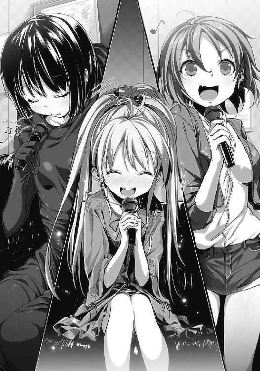
......さて。内容はというと、質に関しては酷いものだった。歌詞も、音程も怪しい三人が唯一、満足に歌えるはずのリュウシさんの足を引っ張り、下手なエコーをかけてしまっていた。
音割れしたようなリュウシさんの歌声と、音割れーズの合唱は大失敗と言えるだろう。ただ無意味に音だけが大きくて、方向性の定まらない音色が、壁に爪を引っかけている状態だ。
恐らく次の歌も、その次も、俺たちは足並みを揃えることができずにまるで規律のない歌声だけを、自己主張することとなるだろう。一曲目からみんな、それを悟っていた。
それでもそのまま、好き勝手にマイクを握って声を振り絞る。
そもそも、どんなに頑張って足並みなんか揃うはずがない。集った俺たちのことを思い出して欲しい。百八十センチのイーチー。普通に素敵な同級生。水の惑星めいた少女。そして青春ポイント復旧予定の目処が立たない俺。こんなやつらが、意見統一などできるか。
俺たちの仲は、そういう風に保たれるものではないと思う。エリオがいる限り、普通の仲良しこよしは夢のまた夢だ。Ｅ．Ｔ．が完全に地球に馴染むことはできなかったように、だ。
そういう意味で、本当は藤和エリオという存在は『宇宙人』で正しい。
この町を小さな地球と例えるなら。外部の異質な存在、と表現することで嘘ではなくなる。俺もまた、とても短い期間ではあったが転校生という宇宙人だった。エリオはその『宇宙人』の度合いが少し強すぎて、完全にこの町に馴染みきるのは、きっと不可能だろう。
藤和エリオは地球人である。しかし、町の住人からすればやはり、『宇宙人』でもある。
しかし地球人が、宇宙人と仲良くなれない道理はない。
それはきっと地球人同士が仲を深める方法とはまた別、まったく新しい感情の在り方とコミュニケーションの形で、成立できるものだと俺は信じる。そしてそれが、今の俺の選択であるとも。どんな動機であれ、布団女をここまで引っ張り出したのが、俺の半年の過程と結果だ。
次はどんな動機で、どんな今を選択するのか。
「あぁぁぁぁぁぁぁぁ、たーのしみだー！」
歌詞とはまったく関係なく、唐突に心情を吐露する。誰にも伝わらないように前振りなく叫んだのだから、三人の目が一様に驚愕しているのは、期待通りでとても気分が高揚した。
そうしてやっと、六曲目か七曲目で俺の登録した歌がやってくる。
俺の望む時がやってくる。いつだってそれを信じて、俺は、今を選び続ける。
リュウシさん、前川さんと別れたのは午後五時過ぎだった。曇り空は最後まで晴れることなく、ネズミ色の空模様に次第に、夜が滲み始めている。でも雨は降らなくて、助かったな。
「また明日、学校でねー」
「明日また、学校でねー」
「パクんなっちゅーに」
などという挨拶を繰り広げる前川さんたちとひとしきり笑った後だからか、頬が少し痛い。普段から大笑いばかりの生活、というわけでもない。むしろ藤和家では突っこんでばかりだ。
......そうか、女々さんの頬がふにゃふにゃなのは普段から終始、笑い倒しているからか。
幸せな人だなぁ、とダブルミーニングな感想を抱く。
「んーふーふーふー、んー、ふーふーふーふー。ふーふーふーふー、ふーふー、ふーふーふー」
籠の中に尻を収めているエリオはご機嫌で、鼻歌も好調だ。駅の周辺から離れて住宅街の方向に差しかかっても、まだ独演は続く。布団もふもふでないエリオの歌は、電子音のようだ。
晩ご飯も食べていく？ という話は出たが『今晩は鳥肉的ななにかよー』と女々さんがメールを送ってきたので、エリオは帰ることにしたらしい。その流れに乗って自然、解散となった。
「楽しかったか？」
「ん！」
ぶんぶんと頷く。それからなぜかハッとした顔つきになり、そっぽを向いて唇を尖らせる。
「ま、まぁまぁだった」
別に訂正する必要はまったくなさそうだが。子供ってなんで素直に生きられないんだろう。風に乗って胞子のように飛び交う水色の粒子が、自転車の軌跡として道路を舞う。幻想を帯びる、夕方の曇天。その中で掲げた青白い右手と携帯電話は、なにか特別な世界の電波までも、受信してしまいそうな雰囲気に満ちていた。そう、例えば多宇宙とか、未来とか。
「けーたいも、なんとかリュウシと前川なんとかの番号が入ってググッと重くなった」
「質量ねーから。......ま、比喩的な解釈ならアリだな」
ペダルを踏みしめて、帰路を少しだけ加速する。二つの車輪の回る音と、虫の鳴く音。カラカラリーリー共鳴するように、歯車が噛み合う。吹く風は水分を多く含んだように濡れて、服と肌の間に冷たいものを残す。夏が残した余熱をふーふーと冷ますように。秋だなぁ、もう。
「いま、から、帰るよ。あ、いま、帰ってる、よ。あ、もう、すぐ着く、よ」
女々さん宛のメールをペチペチと送信するエリオ。進行形で居場所が変わっているからって、実況中継しなくてもいいのに。「そーしん、ぴっ」先端から電波が発信されていそうだよなぁ、と若干盛りが崩れ始めている髪を眺めて、南極の氷の裏側めいた色彩に神秘を覚える。
「あとは、なんとかリュウシ、気をつけて、かえれよー、と」
「自転車籠に収まっているお前には言われたくないだろうな」
それとヘルメット被れっちゅーに。などと返されそうである。
手応え、というのも妙ではあるけどなにかしらの実感をエリオと共有しながら、藤和家へと到着する。減速しながら敷地内に入り、また伸び始めた庭の草を車輪で轢きながら、納屋の前で自転車を停止させる。と、橙色より少しだけ赤いカーテンが俺たちの肩を覆った。
そのカーテンは、八分前から訪れた別の星の輝きである。
「おー」
携帯電話をまたたくまに染めゆく斜陽に惹かれてか、エリオが真っ先に感嘆の声をあげる。
薄い雲の切れ目から、赤銅色がかぁっと空を侵食していた。炎の雫が画用紙にこぼれ落ちたように、鮮やかな燃え広がり。そこから放たれる光は赤々として、しかし、どこか冷たい。
「今日が終わる。楽しい日が終わる」
エリオがそんなことを呟く。斜陽の煌めきを正面から受け止めて、水色の光と混ざり合ったエリオは火星の表面に、小さな地球が浮かんでいるようだった。ゆるゆると溶けあう光の粒。
星が終わる瞬間、エリオがその中心に立っている。そんな情景を想起させる、光の世界。
ぶわっと。耳鳴りのようなものが耳を包む。風の停滞する音のように思えた。
俺はその異世界との邂逅を果たす風景に、手を伸ばす。するといとも簡単に光は弾けて、俺の手を受け入れる。エリオの頭に手を載せる。髪をごてごてに飾っているから、撫でづらい。
「明日は明日で、楽しいことがあるさ」
「ん」
説得なのか慰めなのか。自分でも分からないが、そんなことを言ってみる。エリオは笑顔で頷いて、両手を水平に広げて、「きーん」と玄関に走っていった。勿論、足音はすててて。
俺はそれを見届けて、夕日に目の下を照りつけられながら、自転車を押す。奥に自転車をしまって納屋から出ると、既に夕日は消失していた。光はなく、重苦しい空が俺を覆っている。
こんな空を何度も見てきた。見てきたから、俺はまた今日も、明日を迎える。
無限の可能性もない。一方通行でしかない。それでも俺たちは日々その時々、『選ぶ』。
細分化された選択の積み重ねを、生きることと解釈する。
その積み重ねた選択の頭が、地表に出たとき。今日のエリオのように。
生きててよかったなんて、思うのだろう。
「マコ君君、はやくはやくぅー」
居間の窓から顔を覗かせた女々さんが、人を不本意なあだ名で呼んで手招きしてくる。
「なんで知ってるんだよ......はいはい、今行きますから！」
こうして、俺たちの休日は終わっていく。
そして休日の後には勿論、それぞれの義務を果たす時がやってくるのだった。
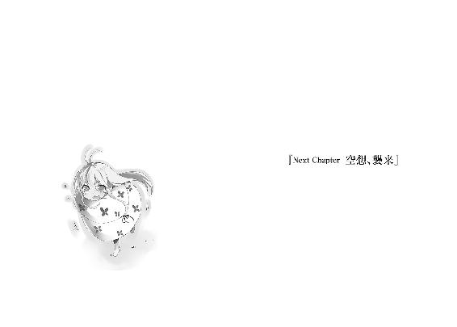
「......それで、なんとかリュウシは、えぇと、テレビで流れてたやつを歌って......」
はいはい、といった顔つきながらも適度に相づちを打って、田村さんは聞き役に徹する。エリオが身振り手振りを交えて、先週の休日にみんなと遊んだことを報告しているのだ。
俺は二人に背を向けて、駄菓子屋の入り口と向き合いながらぼぅっと座りこんでいる。孫みたいな女の子が嬉々として話しているのだから、田村さんとしても聞くしかないだろう。
あの日曜日から一週間が経ち、再び訪れた日曜日。俺は田村商店の店先に座りこんで、十月の空気をふんだんに取りこんだ雰囲気の中で目を細めていた。瞼が緩やかに重くなっていく。
抗わずに目を瞑って、エリオのはしゃいで、幾度も唐突に話題の飛ぶ友達自慢をＢＧＭに安らぐ。肌に触れる空気は涼しく、日差しに触れた足先は暖かい理想的な気候だった。
エリオの店番に付き合ってみたけど、こういう休日も悪くない。なんだか自分の空想した、ひい祖父ちゃん編そのままではないかと危惧する部分もあったけれど、些細なことだ。
「それとほら、けーたい。けーたい買ったよ」
振り向くと、ちゃらーん、と謎の効果音を口にしながらエリオが携帯電話を取り出して、田村さんの目線まで掲げていた。お揃いで買った雀のストラップが左右に揺れている。田村さんは顎を撫で、さして興味がない素振りで水色の電話を眺める。
「何回目だい、その自慢。今週で七回は聞いたよ」
それ、毎日ってことじゃないか。よく毎回付き合うな、田村さん。
「おばあちゃんのけーたい番号は？」
「アホ、私が持ってると思うか。女々とでも電話しな」
「お母さんはね、いっぱいメール送ってくる」
「ああ、昨日の店番のときにちゃらちゃら鳴ってたやつか。あのアホめ、仕事しろ」
「昨日は百回ぐらい送ってきた」
一歩間違えれば嫌がらせの範疇だな、それ。女々さんは俺の携帯電話にもよく送ってくるのだが、内容は年甲斐もなく絵文字と顔文字で構成されて、ほとんど暗号に近い。解読不可能だ。
「あー、どんな内容なんだい、あのアホのメッセージは」
あくまで興味なさそうに、携帯電話を覗きこむ田村さん。エリオは嬉々として携帯電話を操作する。人差し指でぺたぺたとボタンを押して、メールの受信履歴を表示する。
「こんなの」
老眼鏡をかけ直した田村さんが画面を凝視して、「あー？」としかめ面になる。
「エリちゃん、昼ご飯なに食べたー？ ......こんだけなのかい？」
「うん」
「やっぱりアホだね、あいつは。別にそんなもん、直接聞きにくればいいだろ」
女々さんを切り捨て、ふんと鼻を鳴らす。エリオは携帯電話を握りしめながら、またスタッカートの利いた高音を並べて喋り倒す。自慢兼報告の続きだ。
「でね、なんとかリュウシとなんとか前川も、番号入れて......」
口出しはせず、また前を向いて、秋の気候に意識を委ねた。
この町に越してきて、七ヶ月ぐらい。藤和エリオと出会ってから七ヶ月。
リュウシさんもカラオケボックスで言っていたけど。何度でも、そうだよなぁとしみじみ振り返るように、現実の摩訶不思議な流れを反芻してしまう。信じられねぇ、と結論まで同様だというのに。
あいつと初めて話した日から始まり、こんな日を迎えることになるとは想像できなかった。あのお電波さんと同じ空間にいて心が安らいで、そいつが少々つたなくとも友達との繋がりを誇らしげに語る声に笑ってしまうなんて。俺が父親だったら、娘の成長に大泣きするね。
別に意図して、こうなる道を選んだわけじゃない。ただ常に、最良でありそうな道をその場その場で選んできたら、たまたまこうなってしまった、というだけだ。それを否定はしない。
俺はこれからも、その場での最良に釣られていくだろう。揺れる釣り竿の先端に右往左往して、今この瞬間、引っかかる魚にだけ全力で向き合う。結局、それしかできない。仮に未来が全て決まっていたとしても、俺が生きているのは今だけだ。未来はいつかの今でしかない。
そして今は変えるものではなく、選ぶものなのだ。その選び方も薄ぼんやりとではあるけど定まってきて、悩むことは早々になくなってしまう。あるとすれば青春ポイントの在り方か。
「.............................................」
振り返る。エリオが『せーしゅん女』となった現在、俺を取り巻く青春模様はどうなっていくのか予想がつかなくなってきている。良くも悪くも、藤和エリオは俺にとっての不確定要素なのだ。母親の方もそうだが、あれは大半、悪い方。あれは放置として、大変、悩ましい。
しかし、妄想ポイントを滾らせている自分を振り返ってみれば......そもそも妄想なのだから当たり前、と言われてしまうかも知れないけれど、明るい未来ばかりだった。四月の電波エリオが側にいたときには、きっと辿り着けない想像の領域が、いとも容易く頭に広がる。
だからきっと、そうそう、俺の『今』は『悪い未来』と呼ばれることはない、はずだ。マイナス要因と決めつけていた頃と真逆の結論に達してしまって、申し訳ないのだが。
エリオと一緒に生活している限り。
「......やべー、ひい祖父ちゃんエンドか女々たんと一緒が濃厚で怖いわー」
恐怖しつつも一つ、確信していること。
それは、これまでの俺を信じるが故に生まれた、未来を明るくする照明の一つ。
ここからどの道を選んだとしても、もう俺の側に、水色の『電波女』は現れないだろう。
などと、楽観して、たかをくくっていたら。
現実はまるで俺を嘲笑うことが生き甲斐のように、『次』を呼び寄せる。
俺の与り知らない、『彼方』から。
「もふっふっふふ」
突如、横着かつ器用に、入り口の扉を足の指で開けたそいつの輪郭は。
「もふっふっふふ」
見慣れた風体と、見知らぬ小ささが組み合わさっていて。
「もふっふっふふ」
「もふふ」
リトルスマキンが、田村商店にその姿を現した。
あとがき
「来年の十月に凄いことが起きます！」←某カリスマ編集者。
「え、なんですか？ またなんかあるんですか？」←某俺。
「いえ、まったく予定ないんですけど。根拠もなんにもありませんし。でも起きます！」
「......あの、本当になんの根拠とかもないんですか？ 話が来てるけど隠してるだけとか」
「いや本当に何一つないんです。でも大丈夫、必ず起こりますから！ なんか、すっごい確信に溢れているんですよ！ これ凄いなぁ、やばくないですか！」
「.............................................ヤバイッスね」
この編集者についていって大丈夫なのだろうか、なんて思っていません。
でもこれで来年の十月になにも起きなかったら、本当どうしよう。
カリスマ剥奪か。
こんにちは、入間人間です。ポケモンの最新作を買った当日に始めたときは季節が春だったのに、次にやったとき、自宅から一歩出たら秋になっていました。なんて親近感の湧く主人公だ。
さて。
偶にですが、このような指摘をされます。『この本ってさー、一巻とその後でキャラの性格色々と違わない？』まったく持ってその通りです。でもほら、幽○○○の飛○も初期はキャラ違いすぎるから。連載すると往々にしてよくあることなのです。だからここは一つ、手心というか......。
そんな感じでよろしくお願いします。浮かんだじんましんを指差して『この猫型の痣は王家の紋章で......』とか言っている父もよろしくお願いします。悪い人じゃないから許してあげてください。
今回もお買い上げ頂き、本当にありがとうございました。
入間人間
入間人間
ホテルに滞在すると、菓子パンと野菜サラダとゼリーしか食べなくなる生き物。もっか遊んでみたいゲームはエルシャダイと侍道４。早く発売しないかなぁと毎日焦れったい。子供の頃となーんも変わってない。
ブリキ
関西在住。今年も一年頑張りました。来年ももっと頑張ります！
電撃文庫
電波女と青春男⑦
入間人間
二〇十二年二月十日 配信
発行者 高野 潔
発行所 株式会社アスキー・メディアワークス
〒一〇二−八五八四 東京都千代田区富士見一−八−十九
(C)2010 HITOMA IRUMA／ASCII MEDIA WORKS
本書（電子版）に掲載されているコンテンツ（ソフトウェア／プログラム／データ／情報を含む）の著作権およびその他の権利は、すべて株式会社アスキー・メディアワークスおよび正当な権利を有する第三者に帰属しています。
法律の定めがある場合または権利者の明示的な承諾がある場合を除き、これらのコンテンツを複製・転載、改変・編集、翻案・翻訳、放送・出版、公衆送信（送信可能化を含む）・再配信、販売・頒布、貸与等に使用することはできません。